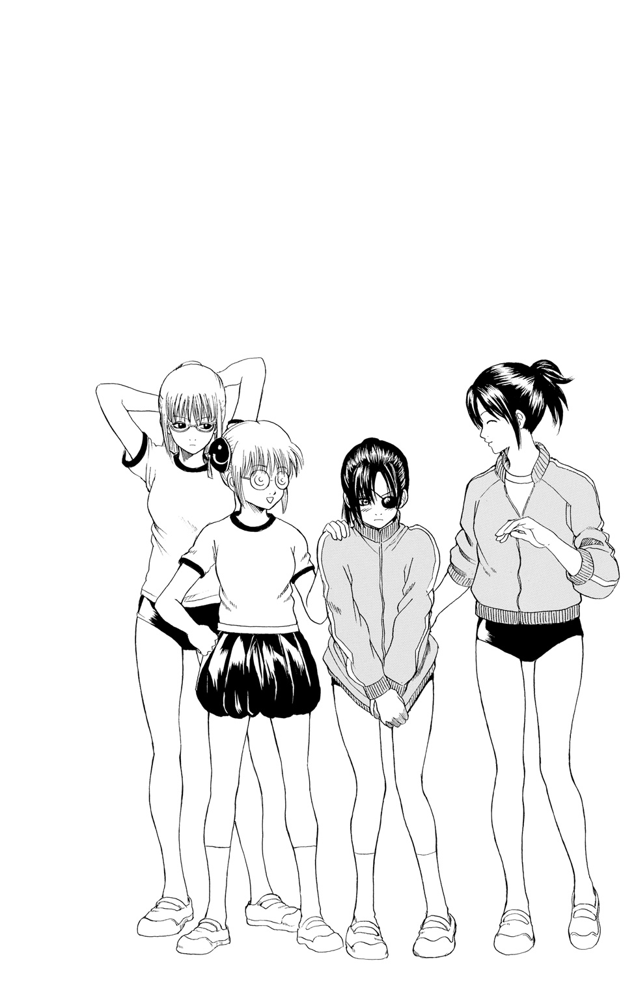

| 銀魂 3年Z組銀八先生 2 修学旅行だよ！ 全員集合!! | |
| 空知英秋 & 大崎知仁 | |
この本は縦書きでレイアウトされています。
また、ご覧になる機種により、表示の差が認められることがあります。
PROFILE
坂田 銀八
３年Ｚ組担任。教師にあるまじき人物だが、なぜか生徒に一目おかれている。
志村 新八
Ｚ組の生徒。地味な存在ではあるが、ツッコミ担当。
神 楽
留学生。見た目はかわいいが、異常な食欲の持ち主。
志村 妙
新八の姉。楚々とした美人だが、性格は凶暴。
近藤 勲
風紀委員長。妙への強烈な恋心からストーカーと化している。
土方 十四郎
鋭い双眸をした、風紀委員会の副委員長。
沖田 総悟
甘いマスクの風紀委員。
ハタ皇子
銀魂高校の校長。額に触角がある。
じい
銀魂高校の教頭。同じく額に触角がある。
この作品はフィクションです。
実在の人物・団体・事件などにはいっさい関係ありません。
青春は何もかもが実験である。（スティーブンソン）
ファンレターありがとう。全部読んでます。（坂田銀八）
いや、ここ目次のコメント欄じゃないんで。（志村新八）
＊
ＬＨＲ。
Ｌ、レモンの輪切りしてて、Ｈ、人さし指切っちゃって、Ｒ、流血！ の略である。噓である。ロングホームルームの略である。進路指導や学校行事に関する話し合いが行われる時間だ。
銀魂高校３年Ｚ組では、月曜日の六時限目が、その時間だった。
でもって、今日は月曜日。五時限目はすでに終わり、そのあとの十分間休憩も終わっている。
今日のＬＨＲ、なんの話し合いするんだろ。志村新八は頰杖をつきながら思った。いや、というよりも、だ。ちゃんとした話し合いになんのかな。
まだ担任の現れていない教室で、新八のクラスメイト――親には紹介しづらいクラスメイトたちが、今日もワイワイと騒いでいる。
荒れなきゃいいけどな、ＬＨＲ。新八が溜め息をついたとき、ちょうど始業のチャイムが鳴り始めた。ほどなくして、廊下からペッタペッタとアンニュイな足音が近づいてくる。安物のサンダルの音だ。
教室の引き戸がガラリと開けられ、白髪で天然パーマの男が姿を現す。ずり落ちた眼鏡。くわえ煙草。だらしなく着た白衣。Ｚ組の担任教師、坂田銀八が、騒ぐ生徒らに向けて低い声で言った。
「ぎゃーぎゃーうるせーんだよ、おめーら。商店街の大声コンテストですか、コノヤロー」
＊
出席簿を教卓の上に放り投げ、銀八はくわえ煙草で言った。「うーし、じゃあロン毛ホームアローン始めんぞー」
「先生！」とすかさず、桂小太郎が挙手する。「正しくはロングホームルームです。それだと、長髪の人が長い間家に一人ぼっちでいるみたいです」
「うるせーな」銀八はイラっと眉を動かす。「おめーのロン毛がちらつくから間違ったんだよ。で、正しくはなに？ ロン毛ホームレス？」
「それはただ単に髪の長いホームレスです」
「わーったよ。とにかくロングホーントレイン始めるぞ。今日の議題はぁ――」
銀八は煙草の灰をこぼしながら言うと、黒板の方を向いた。チョークを手にし、微妙に力の抜けた文字を書き始める。『修学旅行』と書いて、銀八は生徒に向き直った。
「に、ついてだ」
なんで３年になって修学旅行？ 普通２年の時じゃね？ という読者諸兄のご指摘については、いいじゃん別によー、と小石を蹴る真似をすることでご勘弁いただくとして、ま、とにかく銀魂高校では、数か月後に修学旅行を控えているのである。
「先生！」とここで挙手したのが、丸眼鏡をかけた小柄な少女――留学生の神楽だ。「なんで３年になって修学旅行アルか？ 普通２年の時じゃね？」
「いいじゃん別によー」と銀八は小石を蹴る真似をする。
「............」新八は一瞬考えたあと、つっこむ。「いや、今のやりとりいらないでしょ！ なんで地の文でやった説明、もう一回リピートしたんですか」
「そういうオシャレな技だ」
「シャレてねーよ！ なんだったら手抜きだと思われる危険性大だよ！」
「はい、ナイスつっこみ～。じゃ、本題入んぞ」
「先生、僕だけ一足先に卒業してもいいですか？」という新八のコメントを無視し、銀八は続けた。
「今日は修学旅行の――」
だが、言いかけた銀八にかぶせて発言した生徒がいた。
「え～、ひょっとして今から部屋割りとか話し合っちゃったりするの～？ マジ盛り上がりそうなんだけど～」
変に間延びした声でそう言ったのは、パンパンに顔の肥えた、もとい顔だけじゃなく体も肥えた、金髪ガングロの女子生徒だ。名は公子だが、その名で呼ぶ者はクラスには一人もいない。
「盛り上がってんのはおめーの体だよ。先走んな、ハム子」銀八が舌打ちまじりに言う。
「なにそれ～。マジムカつくんですけど～。あとハム子じゃなくて公子なんですけど～」
ハム子が銀八を睨んだあと、別の女子生徒が静かに立ち上がった。眼鏡でロングヘアの美人、猿飛あやめ――通称さっちゃんだ。
「先生！ 部屋割りなら、私は断固として坂田先生と同室を希望します」そして頰を染めながら、こう続ける。「先生、私は寝ろと言われれば玄関でも押入れでもどこででも寝るわ。自分はぬくぬくと布団で寝て、思う存分私を放置すればいいじゃない」
「先走んなっつってんだろーが」銀八は白髪頭をかきながら言う。「部屋割りの話でもお小遣いの話でも実家にいる家族に下ネタのダメ出しされた漫画家の話でもねーよ」
「じゃあ、なんについて話し合うんですか？」新八がきく。いい加減軌道修正してやらないと、ボケ合戦でホームルームが終わってしまう。
「行き先だよ」熱のこもらぬ口調で銀八は答えた。「今年の修学旅行の行き先は、俺たちが決めていいんだとよ」
担任の言葉に、マジでか！ ほんとかよ！ と教室中が色めき立つ。
新八も驚いていた。修学旅行の行き先を僕らが決める？ すげーよ。すげー嬉しいけど......、
「なんでそんなことしていいんですか？」
というのは聞いておくべきだと思った。
「だからそれはよー」言いながら、銀八はくわえ煙草の煙に目を細めた。「えーと、いつだったか校長室に呼ばれてよー」しかし、そこで言葉を切り、こう続ける。「つーか説明すんのかったりーから、回想シーンにまとめるわ。はい、ホワンホワンホワワ～ン」
「いや、回想に入る音とかいいよ！」
＊
「ま、ものすごーく不本意なんだけどね」
と話すのは、銀魂高校第なん代目かの校長――ハタ校長である。場所は校長室。肘掛けつきの椅子にふんぞり返った校長の横には、例によって不機嫌そうな顔のじい、じゃなくて教頭が立っている。額の触角を揺らしながら、ハタ校長は続けた。
「今年の修学旅行、どこに行くかはＺ組の希望を優先させることになったから。早めに希望出すようにな」
「うちのクラスの？」そう返す銀八は、来客用のソファに腰かけ、センターテーブルの上で足の爪を切っている。「なんでそんな特別扱いしてくれんすか？」
「ていうかそれ、校長の話をきく態度じゃないよね。足の爪は我が家で切ろうね」
すいませんね、と言いつつ、銀八はテーブルの上を手で払い、切った爪を床に落とす。
「あ、そうやって捨てちゃうんだ。校長室は我が家以下？」
静かに怒る校長に続けて、
「真面目にききなさいよ、坂田先生」
教頭が『銀ちゃんねる！』をパラ見しながら言った。
「いや、おめーもだよ」ハタ校長は横目で教頭を睨む。「公式キャラブックは家で読もう、我が家で」
「チッ、なんで俺が一ページなのにこいつが二ページも割かれてんだよ。あ、すいません」
「いや、今完全にきこえる音量で言ったよね。てか当たり前じゃろうが、余が二ページでお前が一ページなのは。皇子とじいだぞ。偉い方がスペースが大きいのは当然――」
と校長の言葉がまだ続いているとき、銀八が校長のデスクの前に立った。校長の触角をむんずとつかみ、だるそうに言う。
「くだらねー言い争いはいいすから、俺の質問に答えてくださいよ。なんでＺ組が修学旅行の行き先決められんすか？」
「いだだだっ、言うっ、言うから放せ！ その千切れるか千切れないかギリギリの力加減で引っ張るのはよせェェ！」
銀八が手を離すと、校長は涙目で言葉を継いだ。「ま、かいつまんで説明するとじゃな、ここ数年、学区内の父兄や、あるいは在校生からも我が校の修学旅行のマンネリ化が指摘されとるわけなんじゃ。行き先も行程も毎年同じじゃから、ま、無理もない話じゃがの」
「毎年京都っすからね。山村美紗ばりに」と銀八。
「うーん、そのコメント、若い読者の何割が理解してくれるんだろ」校長は咳払いしてそう言うと、さらに説明を続けた。「――そこでじゃ。今年、余は英断に踏み切ることにした。マンネリと言われて久しい修学旅行を一新させるべく、今年から生徒側のリクエストを反映させてみようじゃないかとな。しかし生徒側のリクエストと言っても、一人ひとりの意見をきいていくわけにもいかん。で、じゃ。毎年クラスを一つ決めて、そのクラスの出す希望に添おうと、こう考えたんじゃな」
「それで？」と銀八は片眉を上げる。「白羽の矢が突き刺さったのが、うちのクラスってことっすか？」
「ま、そーなんだけど、突き刺さるって言い方はよそう。痛そーだから」
「なるほどね」平板な声で言い、銀八は煙草に火をつけた。「ま、ご指名はありがたいっすけど、ぶっちゃけ俺ぁ修学旅行なんざ、どこ行こうが興味ないんすけどね」
「君の希望じゃないんだよ」ぴしゃりと校長は言った。「生徒の生の声を反映させたいんじゃよ、学校側としては」
「マナの声だかカナの声だか知らないっすけどね――」
「ナマね。あの双子はこの際関係ないから」
「――けど、なんでですか？ なんで他のクラスじゃなく俺のクラスに？」
校長は溜め息をつき、答える。「言ったろう、余も不本意じゃとな。しかしまあ、他の教師からの意見もきいた上で、今回はＺ組がよかろうという結論に達したんじゃ。君のクラスは、なんというか激烈キャラの生徒が売るほどいるじゃろうが。そういうクラスの方がマンネリを打破する妙案が出てきそうな気がしてな」
「なるほど。それも一理あるっちゃーありますね、主任」
「や、あの、最初はせめて『係長』ぐらいのボケにしてくれる？ 校長から主任じゃ飛び過ぎだから」
「けど、マジでそんなことしていいんすか？ どうせうちのバカどものことだ。好き勝手な希望出すに決まってますよ」
「そこで君の手腕が問われるんじゃろうが」校長は言って、値踏みするような視線を銀八に向けた。「よっぽどブッ飛んだ案でない限り、学校としてはその案を採用するつもりじゃ。しかし、君が余に提案できるプランは一つだけじゃ。たくさん持ってこられても、いちいち吟味できんからな。つまり、いかに話し合いが紛糾しようとも、君はクラスの意見を一つにまとめねばならん。まさに担任としての管理能力が問われる場面でもあるわけじゃな」
銀八はやれやれという感じにかぶりを振ると、
「ま、きくだけきいてみますよ、あいつらに」
白衣の上から尻をかきながら、校長室を出て行った。
銀八のサンダルの足音が聞こえなくなったあと、教頭が口を開いた。
「ほんとによかったんですか、Ｚ組で」
「ま、結果を待つしかなかろう」
「どーなっても知らねえからな、俺は」
「どーなるかの前に、おめーは敬語を知れ、クソジジー」
＊
「つーわけでだ」新しい煙草をくわえた銀八が、一服吸いつけて、続ける。「俺としちゃ、修学旅行先がどこになろうが構わねーが、校長に言われた以上、てめーらの意見もきかなきゃいけねえ。なんか行き先の希望ねえか？」
銀八の問いかけに、真っ先に挙手したのが神楽だ。
「ここではないどこか！」
「よし。お前だけ行け、そこに」
ほかねーか、と煙を吐きながら言う銀八に、今度は風紀委員の沖田総悟が答える。
「先っちょ！」
「どこのだよ。ほかねーか、ほか」
「じゃあよ、先生」と手を挙げたのはグラサンのおっさん、長谷川泰三。「工場は？」
「なんのだよ。てか、社会科見学じゃねんだよ。――ほかねーか、ほか」
「マヨネーズの工場は？」と真顔で言ったのは、風紀委員会の副委員長、土方十四郎だ。
「工場から離れろ。そして、おめーの場合、マヨネーズからも離れろ」
次に手を挙げたのは、神秘的な面差しの少女。名は百音だ。吹奏楽部の彼女は、常にリコーダーを手にしている。
「ピッピピピー」と百音はリコーダーの音色で答えた。
「笛で言うな、笛で。つーか、そんな遠いとこ行けねえよ」
「いや、わかったんですか！」とは新八のつっこみ。
百音が着席したあと、今度は彼女の双子の姉、阿音が口を開いた。ちなみに『姉、阿音』をダジャレだと思いたい奴は思うがいいさ。
「てかさー、旅行とかたるいしさ、サクっと裏原で遊ぶとかの方が楽しそうなんだけど。チャラチャラしたナンパ野郎がいたら、ご飯とかめっさおごらせたりして」と阿音。
「裏原イイヨネー」と阿音に同調したのは、猫耳をつけてるくせに萌え度ゼロの留学生、キャサリンだ。「裏原行ッテ、スカウトサレテ、ソノママ芸能界デビュー、ナンテコトニモナッタリシテ」
「なったりしねーよ、おめーの顔面じゃ」銀八は冷たくあしらう。「いいとこ職務質問だろ」
「ナンデ私ニダケ厳シインデスカ。差別ハヨクナイト思イマース」
「差別じゃねえよ。分別だ」
「ゴミカ？ 私ハゴミカ？」とキャサリンは握り拳を固める。
「つーか、おめーらよ、修学旅行だっつってんだろ。そんな裏原とかじゃなくてよ、もっとこうガッツリ旅行っぽいとこ言えねーのかよ。例えばそこのお前――」と言って、銀八は新八を指さす。「ナチュラル・ボーン・ツッコミのお前、なんか意見はねーのか？」
「いや、なんとなくカッコよさげですけど、一ミリも嬉しくないですよ、その呼び方」新八は冷静につっこむ。
そのとき、「北海道なんかいいんじゃないかしら」という声がした。教室の後ろからそう言ったのは、新八の姉――志村妙だった。
「北海道？」と銀八は妙の方を向く。「なんだ志村妙。牧場で搾り立ての牛乳でも飲んで自分もホルスタインのような胸――」
「先生」と妙は笑顔でコンパスを構える。
「や、ごめん。続けて」とやや蒼ざめて銀八。
妙は続けた。「北海道って、なんか豪華な感じするじゃないですか。カニとかおいしそうだし、あと空知の実家もあるんでしょ」
「あいつの実家は関係ねーだろ、この際」銀八はつっこんだあと、「北海道ねえ......」と気乗り薄な顔つきを作る。
だが、新八は違った。ナイス姉上！ と内心で快哉を叫んでいた。
北海道――実は新八もその案を出そうと思っていたところなのだ。雄大な自然、新鮮な海産物、松山千春、白でもない黒でもない俺たちはＧＬＡＹに惹かれたわけではなくて、全く別の理由からだ。
その日――修学旅行の日、北海道ではお通ちゃんのドームライブが行われているのだ。運悪く修学旅行の日とカブってしまったお通ちゃんのライブ。しかし、旅行の行き先が北海道になるなら、なんら問題はない。ライブの時間は夜だが、宿を抜け出してでも見に行っちゃうよネスケが落語してるとこ見たことねえ！
行けるじゃん、ライブ！ と人知れず鼻息を荒くする新八を喜ばせるように、神楽も言った。
「私も北海道行きたいアル！ カニ食べたいヨ！」
銀八が溜め息をつく。「お前は本編の『銀魂』でカニ食って病院に運ばれたのをきっちり忘れてるみてーだな」
「あれはカニが腐ってたからアル！ カニに罪はありません！」
「俺も北海道に一票だ！」とここで立ち上がったのが風紀委員長の近藤勲だ。まあ、このストーカーゴリラの場合、妙の行くところなら、どこだろうと賛成するに決まっている。風呂が混浴だとなおよし！ と言ったあと、妙の投げたコンパスが後頭部に突き刺さっていたけれど。
いいぞ、いいぞ、と新八のテンションは次第に上がっていく。このまま北海道に決まれば、僕はお通ちゃんのライブに行けるぜネラル・マネージャー！
が、ここで北海道案に異を唱えた者がいた。さっき裏原案を出した阿音だ。
「豪華な感じ狙うなら、私は沖縄がいいなー」
阿音は言って、志村妙に冷ややかな視線を送る。その視線を受け止め、妙のまなじりもつり上がる。この二人、本編でのライバル関係を、そのまま銀魂高校にも持ち込んでいるのだ。
「沖縄ってマジそそられるんですけど～」と阿音に賛同したのはハム子だ。
銀八が言う。「お前の場合、沖縄はやめといた方がいいんじゃねーか？ 沖縄そばの具にされちまうぞ」
「されねーよ！ されそーになっても逃げるっつーの！」とハム子。
北海道、沖縄、とマトモな意見が続いたせいだろう、次第に他の生徒たちからもボケなしの回答が挙がるようになってきた。「北陸！」「韓国！」「サイパン！」「ニュージーランド！」「ニュージーランドの先っちょ！」あ、最後のは沖田ね。
まずいぞ......と新八は思い始める。このままじゃ北海道案が霞んでしまう。立ち上がり、新八は言った。「ぼ、僕も北海道に一票です！」
「おっと、相変わらずのシスコンか？」という銀八の嫌味は、この際我慢した。
北海道よ！ いいえ沖縄！ 東北もいいんでねか？ と百出する議論は、一向にまとまりがつかず、やがて終業のチャイムが鳴った。
「つーかさ」小指で耳をほじりながら銀八は言った。「予想はついてたけど、おめーら、ほんと好き勝手なこと言うのな。ま、俺に関しちゃマジでどこでもいいからよ、来週のロン毛ホームスチール失敗までには、もうちっとまとめといてくれる？」
＊
来週のロングホームルームまで待つつもりはなかった。少なくとも新八は。
翌日の放課後、Ｚ組の教室に数人の生徒が集まっていた。メンツは新八、妙、神楽、近藤、土方、沖田の六人。『修学旅行は北海道に！』というスローガンのもとに集まった六人である。集まった目的は密談。呼びかけたのは新八である。
「土方さんと沖田さんまで、ありがとうございます」新八は新たに加わった同志に、まずは礼を言った。
「別に俺ぁ是が非でも北海道に行きてえってわけじゃねーよ」土方は腕を組み、クールにそう返した。「ただ、カニとマヨネーズって合いそうだな～と思って」
「いや、それ結構行きたそうじゃないですか」
「別に俺ぁ」と沖田も言う。「是が非でも北海道に行きてえってわけじゃねーよ。ただ、土方さんにはほんと死んでもらいたいな～と思って」
「前半のセリフ関係ねえじゃねーか」沖田にメンチを切ったあと、土方は新八に目を戻す。「――で？ 今日は俺たちを集めて、なんの相談をしようってんだ？」
新八はコホンと咳をし、声を低めた。「オトしましょう、銀八先生を」
「オトす？」と土方。
新八は眼鏡を不気味に輝かせ、続けた。「みんなも、昨日の先生の態度見てわかったでしょう？ あの人は心底修学旅行なんかどこでもいいと思ってるんです。けど、校長のところに自分のクラスの意見は持ってかなきゃいけない。なのに自分でクラスの意見をまとめる気もない。......てことはですよ、僕らのアプローチ次第で、先生は簡単に北海道案を採用してくれるってことなんじゃないですか？」
「アプローチ......」土方は言って、目を細める。「袖の下ってことか？」
新八は首を横に振った。「お金は直接的すぎます。もっと別な方法がいいでしょう」
その言葉に、今度は神楽が反応する。「じゃ、図書カードアルか？ それともベルマークアルか？ あ、わかった、肩たたき券ネ！」
「違うよ。しかも言い直すたびに正解から遠ざかってるよ」新八はつっこんだあと、続ける。「お金や金券は避けましょう。そうじゃなくて、接待です。ごちそうするんですよ、先生に。そして僕らの北海道案を取りつける」
「ごちそうって......」近藤が真顔で言う。「山羊の丸焼きとかか？」
「どこの部族ですか、あんたは。てか、無理でしょ、そんなごちそう」
「わかったわ、新ちゃん」とここで妙。「私があの人に手料理をふるまえばいいのね？」
「いえ。そんなリスキーな方法はとりません」と言った直後にグーで殴られたが、新八は泣かなかった。「すいません、姉上。でも、ここは確実に先生をオトせる方法で行きましょう」
「わかったわ！ もうその先は言わないで！」と、その言葉とともに掃除道具入れから現れたのはさっちゃんだった。
「どっから出てくるんですか！」という新八のつっこみには構わず、頭に綿埃をくっつけたまま、さっちゃんは言う。
「――ごちそうで確実にオトすってことは、アレね。裸の体に料理を盛り付けるやつね！ いいわ！ 盛り付けなさいよ、私の体に！ 盛り付けて先生に差し出すがいいわ！」
「おーい、誰が呼んだのこの妄想癖の女！」
「待て待て！」と近藤が前に出る。「それをやるんなら体に凹凸がない、平らな体の方が盛り付けやすい。てことでお妙さ――」だが、最後まで言えず、妙のアイアンクローがメキリと近藤の頭蓋骨を軋ませる。
「落ち着いてください！」と新八は叫ぶ。「裸に盛り付けるやつでもノーパンの人にしゃぶしゃぶ作ってもらうやつでもないですから！」
「しゃぶしゃぶの方は誰も言ってねえけどな」と一人クールに土方。
新八は咳払いし、改めて言う。「とにかく、食事は食事でも、そんな少年誌の禁を犯すようなやつじゃありません。ここはもっと高校生らしい感じでいきましょう。――学食です」
「学食？」土方が目を細める。
新八は頷いて説明した。「学食なら値段もリーズナブルだし、あからさまな感じがしなくていいじゃないですか。少年誌的にも許容範囲だろうし」
ふーむ、と一同はしばし考え込んだが、結局反対意見は出てこなかった。
「学食で行きましょう、学食で接待です」新八はまとめるように言った。「じゃあ、早速先生を呼びに行きましょう！」
だが、戸口に向かいかけた新八に、土方の声がかかる。
「待て。一つだけきかせろ」
「なんですか？」
「なんでお前はそんなに北海道にこだわるんだ？」
「え......？」ドキリと心臓が跳ねる。
土方は続けた。「しかも、お前発信で接待しようなんてよ。なんてえか、お前のキャラにゃ似つかわしくねえやり方じゃねえか」
「それは......」一瞬躊躇したが、新八は正直に打ち明けることにした。仲間に隠し事は無用だ。「いや、実は修学旅行の日、北海道でお通ちゃんのライブがあるんですよ。僕、諦めてたんですけど、もし修学旅行が北海道になったら行けるなぁと思って。や、マジで行きたかったライブなんです。『あなたに逢えてよかったンドリーチキン』を中心にした構成なんですけど、物販で限定Ｔシャツも出るらしいし、コール＆レスポンスも地方公演だとアレンジ変わるんですよ。だから僕は絶対北海道に......って、あれ？ 誰もいないや。聞いといて無視？ お笑いの基本？」
さっさと出て行った同志のあとを、新八は慌てて追いかけた。
＊
学食のテーブルにつく銀八。それを取り囲む北海道派の面々は、さっちゃんが加わったことにより七人になった。そしてテーブルの上には、チキン南蛮、白身魚のフライ、ささみチーズフライ、カレーライス、きつねうどん、エトセトラ......。並べられたそれらの品々を前に、銀八は片方の眉を上げる。
「えーと......なんなの、このもてなしは？」
「なんなのって、決まってるじゃないですか」もみ手をしながら新八が言う。「日頃お世話になってるお礼ですよ。勿論支払いは僕ら持ちでいいですから」
自分でも卑屈な口調になっていることはわかったが、この際構ってはいられない。
「気持ちわりーな、オイ」と言いつつも、銀八は割り箸に手を伸ばす。「けどま、腹も減ってることだし、遠慮なくいただくぜ」
言って、銀八はささみチーズフライに箸をつけた。よっしゃ、と新八は口元を歪ませる。これでオチた。修学旅行は北海道に決まりだぜルダの伝説！
だが、そこに突然差し込まれた声があった。
「ちょーっと待ったァァ！」
声とともに学食に現れたのは、阿音、百音、ハム子、キャサリンの四人だった。
「やっぱりね」と四人の先頭に立つ阿音が不敵に笑った。「あんたたちのことだから、どうせこういう手に出るとは思ってたのよ」
「こういう手？」と銀八はポケっとした顔つき。
「悪いけど、あんたたちの思うようにはさせないから！」阿音は目をクワッと怒らせると、妙に指を突きつけて、続けた。「特に妙！ 私はあんたの意見が通るのだけは納得いかないのよ！」
「このクサレ女ァァァ！」と妙は目の下の影を濃くする。
くそっと新八も奥歯を嚙んだ。敵だ。沖縄派の登場だ。奴らも銀八を籠絡するために接待攻勢に出るつもりなのだ。
「おいおい、なんなの、この穏やかじゃない空気は」
いまだ状況の見えていない銀八に、阿音が猫撫で声で話しかけた。
「先生、これ、日頃の感謝の気持ちです。召し上がってください」
そう言って阿音が差し出したのは、なんとも可愛らしい手作り弁当だった。ミートボールに唐揚げにきんぴらごぼう......オカズはベタだが、どれも少量ずつ盛り付けられているところに、いかにも「女の子が作りました」感が出ている。白ご飯の上に、刻み海苔で「先生、ありがとう」なんていうメッセージが書かれているのも小憎らしい。この海苔のメッセージに男子は弱いのだ。弁当を一口食べた銀八が「あ、結構うめーかも」と呟く。
やばいぞ、と新八は焦る。敵は女の子らしさと手作り感で勝負するつもりのようだ......。
「ひるんでる場合じゃねーぞ」そのとき耳元で囁いたのは土方だった。「向こうがメッセージ付きなら、こっちもメッセージで勝負すりゃいいんだ」
言うや否や、土方はカレーライスの上にマヨネーズで文字を書き始めた。
「やっぱりかいィィィ！」と新八。
しかもマヨ文字は太すぎるせいで「先生」と書いたところで早くも残りのスペースがなくなってしまう。
「わかるでしょ！ 考えたらわかるでしょ、そーなることは！ てか、そもそもなんでカレーに書く？」
「おいおい、なにしてんだよテメー」銀八も不機嫌な声を出す。「食えねえじゃねーか、こんなマヨまみれのカレー」
「いけない！」とすかさずさっちゃんが前に出る。「ここは私からのメッセージで挽回しないと！」
言うや否や、さっちゃんはチキン南蛮の上に納豆で文字を書き始めた。
「だから考えよう！ 筆記用具を考えよう！」新八は叫び、頭を抱える。
「くさっ！」納豆の匂いに顔をしかめ、銀八がさらに不機嫌な声を出す。「なにしてんだよ、おめーら。学食に恨みでもあんのか？」
「ホッホッホ」と阿音の高笑いが響き渡った。「バカは勝手に自滅してなさい。――さ、先生。私の感謝の気持ち、もっと召し上がってください」
まずいぞ、と新八は下唇を嚙む。空腹は最高の調味料だ。このまま先生がお弁当を食べ切ってしまえば、あとからいくら学食のメニューを食べても、空腹時に食べたお弁当の好印象を超えることは難しいかもしれない。
そこへ割って入ったのが神楽だ。なぜか地味なスーツを着た神楽は、ニセモノの警察手帳を出しながら言う。「針が混入していた弁当というのは、こちらですか？」
銀八の手から弁当を取り上げる神楽に、ナイス！ と新八はガッツポーズする。
「出てくんじゃないわよ、チャイナ娘！」阿音がつっこんだあと、キャサリンが神楽に向かって両手を差し出す。
「私ガヤリマシタ。ナンカムシャクシャシテ......」
「ノらなくていいのよ、敵のミニコントに！」と阿音。
「コラコラ、おめーらよぉ」とここで銀八が迷惑そうな顔で左右を見る。「さっきから両サイドでぎゃーぎゃーうるせーんだよ。落ち着いて食えねえじゃねーか」
落ち着いて食えねえ、という銀八の言葉に、阿音の目がキラリと光った。
「じゃ、先生、落ち着いて召し上がっていただけるように、ＢＧＭを用意しますね。――百音！」
姉に呼ばれた百音が、リコーダーを手に進み出る。
やばい、敵が新たなサービスに出た！ 新八は仲間を振り返り、言った。
「まずいですよ。僕らも、なにか食事以外のサービスを――」
新八が言い終わらないうちに、近藤が「よっしゃ、任せとけ！」と前に出る。が、なぜかトランクス一枚だ。
「いや、任せらんねーよ！ つか、アンタなにする気？」
「漫談だ！」
「じゃ、脱ぐ必要ないでしょ！ トークで笑わす気ゼロ？」
「待て待て！ ショーと言えばこれでぃ！」と次に名乗りを上げたのは沖田だった。「放課後のＳＭショー！」
言いながら、沖田はテーブルの上に立ち、さっちゃんの鼻の穴に鼻フック。さっちゃんは、「だめ、今日は鼻毛のお手入れが甘いから......ってやめなさい。私がメス豚モードになるのは先生のときだけよ！」
「帰って！ お願いだからアンタら二人帰って！」
新八の悲鳴のようなつっこみを阿音が嘲笑う。「ふん。所詮あんたらに人をもてなすことなんて無理なのよ。――百音！ こっちは上品なＢＧＭで先生をおもてなしするのよ！」
阿音のその言葉で、スタンバイしていた百音がリコーダーを吹き始める。流れ始めた曲は、『恋しさとせつなさと心強さと』。
「曲のチョイス！」と叫びながら、阿音は百音にドロップキックする。
「いい加減にしろ、てめーらァ！」銀八がテーブルを叩いて怒鳴る。「うるせーだけで、もてなす気ゼロじゃねーか！ あと俺としてはデザートも食べたいよね！」
「デザート？」阿音が再び目を輝かせ、ハム子に顔を振り向けた。「ハム子ちゃん！」
呼ばれたハム子は阿音に頷き返したあと、可愛らしいタッパーを銀八に差し出した。
「先生これ、家庭科の時間に作ったチーズケーキなんですけど～、私的には自信作みたいな～」
「え、大丈夫？ 豚骨スープの味とかしない？」
「しねーよ！ させる方がムズいし！ いいから食えよ！」
「おいおい、脅迫かよ」
鼻白む銀八のリアクションに、「人選ミスったァァ！」と阿音が身もだえする。
そこへ妙が、鞄から自分のタッパーを取り出して言う。「チャンスよ！ ここで私がチーズケーキを出せば――」
「いや、逆にピンチになるから！」新八は慌てて止めたが、妙は引き下がらない。
「そんなのわからないじゃない。ほら、こんなにいい出来なのよ」
と言って、妙はタッパーの蓋を取る。現れたチーズケーキは絵にも文字にもできない、メディアを超越したおぞましさ。
「ダメだって、姉上！ これはもはや斬新なデザインのモンス――」と、そこまで言った瞬間グーで殴られたが、新八は泣かないもん！
とにかくデザートだ。ここで先生にデザートをふるまえば、かなりの高ポイント。
新八はダメモトで厨房に向かって叫んでみた。「すいまっせーん！ チョコレートパフェ一つ！」
「そんなもんあるわけないだろ！」とカウンターの向こうから顔を出したのは、八郎の母ちゃん、じゃなくて学食のおばちゃんだ。「ここは学食！ 喫茶店じゃないんだよ！」
「すいまっせん、チョコパが無理なら、ヨーグルトとか果物で、なんかデザートっぽいもの作ってください！」
「勝手なことばっかり言うんじゃないよ！ アンタはもう人のアゲ足ばっかりとってェェ！」
怒鳴るおばちゃん。メンチを切り合う銀八とハム子。メンチを切り合う妙と阿音。刑事コントを続ける留学生コンビ......って、おめーらまだやってたのかよ！ かと思えば、妙のチーズケーキを一口食べて悶絶する近藤。阿鼻叫喚、一触即発、空知英秋、は原作者の名前だ。とにかくもうわからない。気がつけば接待合戦がアナーキー・イン・ザ・学食と化していた。
「コラコラ、なにをやっとるんだね君たちは」と、ハタ校長の声がしたのはそのときだった。「騒々しいにもほどがあるぞ」
学食に現れた校長と教頭は、一見しただけでは理解しかねる状況に、眉をひそめている。そして教頭はなぜか、手にアニメコミックス『銀魂～何事も最初が肝心なので多少背伸びするくらいが丁度良い～』を持っている。
まさか担任を接待してました、とは言えず、生徒たちは気まずげに黙りこむ。
そこへ、事情が飲み込めないまま今に至っている銀八が、「あーそだそだ」と吞気な声で言った。「校長、あの、例の修学旅行の行き先の件。あれ、来週ぐらいまで待ってもらえないすかね？」
「修学旅行？」とハタ校長は怪訝そうな顔になる。そして、続けて校長が言った言葉に、新八は、いやその場にいる生徒たち全員が耳を疑った。
「いや、なに言ってんの、君。修学旅行なら、今年も京都に決まったけど？」
「あ？」と銀八は片眉を上げる。「や、だって、こないだアンタ、行き先はうちのクラスの希望きいてくれるって」
「こないだって、それ一か月以上も前の話じゃん」今度は教頭が言った。「アンタ、全然希望言ってこねーしさ、催促しても生返事ばっかだったじゃん。だからもう、こっちで決めちまったよ」
「マジすか。てか、俺、なんで生返事しちゃったんだろ。二日酔いだったのかなー」
「ま、そんなことは知らんがね、とにかくもう待ってらんないから、今年も京都にしちゃったよ」と校長。
「............」無表情に煙草を吹かす銀八に、さして驚いている様子はない。
「ま、そういうことなんでよろしくね。――君たちも早く下校するように」校長はそう言い置いて、教頭とともに学食を出て行った。
沈黙が降りた学食で、最初に口を切ったのは銀八だった。
「や、わりい。俺、もうちっと猶予あると思ってたんだけど、どうやらそうでもなかったみたいだわ」わりいと言いつつ、銀八の顔には一ミリの反省心もうかがえない。「しかし、いかんよなー、ああやってなにごともせっかちに結論を出すというのはなー。アレかな、ネット社会とか、そーゆーのが影響してんのかなー」
いかんなー、いかんいかん、などとブツクサ言いながら、銀八は席を立ち、学食を出て行く。ペッタペッタと安物のサンダルの音が遠ざかっていく中、学食に、こう、なんというか、モヤモヤッとした、え？ どーすんの、この空気？ みたいな空気が漂い始めた。
言葉を失って立ち尽くす新八たちに、学食のおばちゃんが言う。「どーでもいいけどさ、早くお金払っとくれよ。全部で四千五百三十円」
新八たち北海道派が頼んだ注文は、全部で十品以上。だから当然それぐらいの金額にはなる。
「じゃ、割り勘で――」と新八が仲間たちを振り返ると、あら不思議。いつのまにか仲間は消え、それどころか阿音たちも消えていた。
新八は爽やかな笑みを浮かべると、おばちゃんに向き直った。「すんません、ツケといてくだ――」
直後、おばちゃんの平手打ちが飛んできた。ぶべらっ！
宙を舞いながら、新八は思った。そうだ、京都行こう――。
朝に道を聞けば夕に死すとも可なり。（孔子）
土方ってウゼーよな、かなり。（沖田総悟）
韻ふんでる！（志村新八）
＊
かぶき町のターミナル駅の周辺を、何台ものパトカーが走り回っていた。パトランプを回転させ、サイレンを鳴らし、一般車両を脇にどかし、それはもうただ事ではない緊迫感をムンムンに出して疾駆している。
その重なり合うサイレンの音は、かぶき町のとある路地裏で身を潜める三人の男の耳にもしっかり届いていた。
三人は皆、黒系のジャンパーに、同系色のスラックスをはいている。そのうち一人は大ぶりのボストンバッグを抱えていた。
容貌の似通ったこの三人、兄弟であった。
八留虎三兄弟である。つい今しがた、駅前の銀行に押し入り、現金五千万円をボストンバッグに詰めさせるところまでは成功したが、銀行員の一人に非常ベルを押されてしまい、あっちゅー間にパトカーのサイレンがきこえてきて、「てめバカ、なに押してんだよ、泣かすぞ！」「ていうか、こっちが泣きそうだよ！」「なんならもう泣いてるよ！」との捨て台詞を残して、この路地裏に逃げ込んできている次第である。
「兄者どうする？」ボストンバッグを抱える次男が、不安げな面持ちで言った。「このままでは、ここもじきに見つかる」
だが、兄者と呼ばれた長男、鼻の下の髭を触りながら返事をしない。なにかを考え込んでいる顔つきだ。
三男が焦れたような口調で言う。
「いっそ、パトカーを奪い、それで逃走するか......」
「待て」ここで長男が口を開く。「短慮は禁物だ」
「しかし、このままでは――」
言いかけた次男を遮り、長男は言った。
「俺に考えがある。しばらくどこかの建物に身を隠すのだ。そうすれば警察も、俺たちが町を出たと考え、捜査車両を町の外に回すだろう。その機に乗じて、俺たちは次の手を打てばよい」
「だが兄者、建物といっても......」周囲に視線を飛ばしながら、三男が言う。「どの建物にするのだ？」
弟にそう問われ、長男は不敵な笑みを浮かべた。
「案ずるな。それにも考えがある。まさかこんなとこに銀行強盗は隠れてないよね、そーだよね、みたいな場所に心当たりがある」
「どこなんだ、それは」と次男。
「ついてこい」
言って、長男は立ち上がった。
＊
同じ頃、銀魂高校理事長室――。
ぷかり、とデスクでキセルを吹かすお登勢理事長に向かって、ハタ校長があたふたした口調で言うわけだった。もう、あたふたハタであった。
「理事長、吞気にキセル吸ってる場合ではありませんぞ。あなたに至急見てもらいたいものがある。――おい」
とハタに言われ、教頭じいが、それをお登勢のデスクの上に置いた。手に取り、お登勢が呟いた。
「へえ、『銀魂』のアニメＤＶＤは、もう第２シーズンになるんだねぇ」
「そうなんですよ早いモンでって、おい、なに出してんだジジイ。それじゃねーだろ」
「悪かったよ。でもまあ、宣伝もしとかねーとな」
「うん、つーか、お前敬語は？ なんかもう最近ボケじゃなくて素でタメ口だよね。いいから出せ」
というわけで、教頭じいがお登勢のデスクに置いたのは、数枚の紙片だった。とあるサイトをプリントアウトしたものである。
「『進学するならこの高校ランキング』？」
お登勢が言って、煙を吐く。校長が言う。
「これは全国の中学生を対象にしたアンケートでしてな、一位はダントツで集英高校。そして我が銀魂高校は、もう笑っちまうしかありませんが、圏外ですぞ。遥か彼方、ファーラウェイですぞ」
「仕方ないだろ。これが世の中学生の総意なんだ」
「もう一枚の資料を見れば、あなたもそんなことを言っていられなくなる。――『こんな高校死んでも行きたくないやい、ペッペッ、ランキング』で、ご覧あれ、我が校はぶっちぎりの一位じゃ。どう思われます、これを見て」
「なにごとも一位を取るのは難しいもんだ。出川がずっと一位っての、ありゃすごいことなんだよ」
「そういう話はこの際どうでもよいのです。おい教頭、お前からもなんか言え。あーＤＶＤの宣伝はもうすんなよ」
「チッ。しかしそうはいってもね理事長」
「今、チッって言ったよね」という校長の声を無視し、教頭は続ける。
「昨今は少子化で、どの高校も生徒集めに苦慮しているのです。我が校も年々入学者が減ってきている上に、こんなランキングで不名誉なレッテルを貼られてしまえば、来年の入学者はさらに大幅減。早晩我が校の経営は行き詰まってしまいます」
「ランキングなんか気にするガキにゃ、うちの学校に来てほしくないね」
「ですから、そういう強気な態度では――」
と教頭がさらに続けようとしたとき、理事長のデスクで内線電話が鳴った。
「なんだい？」
受話器を取り、お登勢は短く応えた。相手の言葉に何度か相槌を打ったあと、受話器を置く。そして校長らに顔を戻し、言った。
「今、警察から連絡が入ったとさ。ついさっき駅前で銀行強盗があって、犯人はまだ捕まってないそうだ。服装は黒のジャンパーとズボン。三人組で一人はボストンバッグを持ってるそうだよ。ちなみに本物かモデルガンかは不明だけど、ピストルも一丁所持。なので下校時の生徒の安全確保に留意されたし、だとさ」
「ぎ、銀行強盗？」校長が細い目を瞬かせる横で、「こえーな。早退しちまおうかなー」と教頭。
「ま、それはそれとしてだ」
キセルをひと吸いし、理事長が続ける。
「入学者増やしたいなら、あんたらで知恵絞りな。私に意見求めたって無駄だよ。そういうのには不向きなんだ」
理事長のつれない態度に、校長はイラっとこめかみを脈打たせる。が、なんとか怒りを押し殺し、
「とにかく、我が校がメッチャ人気ないという現状はお伝えしましたからな」
そう言い置くと、「おい」と教頭を促し、理事長室を出た。
校長室に戻りながら、校長は教頭に言う。
「クソいまいましい理事長めが。校長と理事長っつー設定じゃなきゃ、あんなスナックのババアに敬語なんか使っておらぬのに......。――こうなったら、教頭。余らでなにか良い方法を考えるのじゃ。入学者がドカンと増えて、余らがグフ、みたいな妙案をな」
「ザク？」
「ううん。グフ。てかおめー、真面目にきいてる？」
そんな会話をしながら、二人が廊下の角を曲がったときだった。
小走りにこちらへ向かっていた男と校長の体がぶつかった。
「これ、廊下を走ってはいかんじゃろうが」
「これはすまぬ」
相手は詫び、連れ立っていた二人とともに校長たちと行き違った。
二秒後、「ん？」と校長の足が止まる。
振り返り、歩き去ろうとしている三人の男の後ろ姿を眺める。
「教頭」
「なんでしょう」
「あいつら三人組で、全員黒いジャンパーに黒いズボンじゃな」
「ええ。そのうち一人はボストンバッグを抱えていますな」
「それってあれじゃない？ さっき理事長が言ってた......」
「逃走中の銀行強盗の風体に合致しますな」
「だよね？ ......って、吞気なこと言ってる場合じゃなかろう」
校長が血相を変えたことで、教頭もはっとする。
「あわはば、そうですよっ。けけ、警察！」
と、教頭の声が大きくなった瞬間、三人組はだっと駆け出した。
「あ、くそっ！」
教頭が慌ててケータイを取り出し、プッシュし始める。が、校長がそれを止めた。
「待て、教頭」
「や、だって、早く通報しないと......」
「通報してはならん」
校長は、逃げる強盗たちの背に粘っこい視線を向けたまま、言った。
「いいこと思いついちゃったかも......」
＊
漫画描くのってめんどくせーな、あーあチーズ蒸しパンになりたい、とのたまった漫画家がいやがるそうである、世の中には。
今体育館で、志村新八もそんな気分であった。
修学旅行説明会、というものが今体育館では行われている。
３年生全員が体育館に集められ、壇上で教師が修学旅行にまつわる注意事項をあれやこれやと説明しているのだが、んなもん「修学旅行のしおり」に書いてあんだから、わざわざ説明してくんなくてもいいのにな、あーあめんどくせー、あそこに引っかかってるバレーボールになりたい、なんてことを思いながら天井を眺めたりもする新八なのである。
で、今、壇上にいるのは、学年主任で体育教師の松平片栗虎であった。薄い色のサングラスをかけ、低く凄みのある声で生徒たちに話している。
「――いいか、てめーら。修学旅行だからってはしゃいでんじゃねーぞ。修学旅行ってのはコンパニオン、文字通り『学を修める』旅行なんだ。ドンペリ、だから間違っても遊び半分に京都の町を、も一つドンペリ、うろつくんじゃねえ。京都の神社仏閣から悠久の歴史を感じ取り、王様ゲーム、教科書からは得られない知識を身に付けるんだ。見て見てこんなになっちゃった、わかったな？」
いや、わかんねーよ！ てか、漏れてるよ！ あんたの欲望がサブリミナル的に！ とまあ、新八の心に浮かんだのはそんなツッコミなのだが、説明会の最中、しかもおっかない松平先生相手に、声に出してつっこむわけにもいかない。
と、そのときだ。
体育館のスピーカーから、ハタ校長の声が流れ出した。
「あー、校長室より本校教職員に告ぐ。校長室より本校教職員に告ぐ。緊急事態じゃ。たった今、本校敷地内に、逃走中の銀行強盗が侵入した」
突然流れ出した声にも驚いたが、告げられた内容にも、生徒たちは驚愕した。
ざわつく体育館の中へ、校長の声がさらに続く。
「――なお、現時点において警察への通報は行っておらん。そして、今後も余の許可が出るまでは警察への通報はしてはならんぞ」
「どういうことだ、校長」
言ったのは壇上の松平だった。体育館の中には音声を拾うマイクもあって、それで校長室とも会話ができるってことにしていただきたいよね。
「なんで警察に通報しねえんだ？」
「強盗を警察に捕まえられては困るからじゃ。なぜなら、今校内にいる強盗を捕まえるのは、松平君、君たち教職員なのじゃからな」
スピーカーの向こうでハタ校長が小さく笑ったのがわかった。
「俺たちが強盗を？ おいおい、嫁入り前の娘持つパパに、おっかねえこと言うじゃねえか」
松平の言葉に、壁際に並んだ他の教師たちからも「そうだそうだ」と声が上がる。そして、動揺は教師たちだけでなく、無論新八ら生徒の間にも広がっていた。
校内に強盗が侵入してんのに、警察に通報せず教師に捕まえさせるって、それはどういう料簡なんだ、僕たちの身が危険にさらされてもいいのか、とざわつきのひどくなった体育館に、校長が言葉を続ける。
「うむまあ、君たちがうろたえるのも無理はない。しかしじゃ、これには理由がある。事態は急を要するから手短に説明するぞ。――今朝の職員朝礼でも言ったが、現在銀魂高校は受験生の間で人気が急落しておる。というか人気そのものがない。その惨め極まりない状況を打破するには、我が校の知名度を飛躍的にアップさせねばならん。そこで今日、たった今出来した強盗騒ぎじゃ。これを警察の力を借りず、君たち教職員が自らの手で解決したとなれば、マスコミはこのニュースをこぞって取り上げ、我が校の名は全国に広まるはずじゃ。そうなればもう来年は入学者がドカンと増えて、余らもグフ、てなもんじゃろう」
「リックドム？」と松平。
「ううん、グフ。てか、なに？ モビルスーツ系のボケ流行ってんの？ まあ、しかしどうじゃな？ ふつふつと闘志が湧いてきたじゃろう？」
ハタ校長は誘いかけるように言ったが、
「そいつはどうかな」
松平は気乗りしない口調で言って、煙草に火をつける。
「入学者がドカンと増えても、喜ぶのは経営陣やあんた方上層部の人間だけで、どーせ俺たち教師にはなんの見返りもねえんだろ？」
「ホッホッホ。心配には及ばんぞ、松平君。強盗の身柄を見事確保した者には、危険手当として特別ボーナスを支給しようではないか。しかもその額は百万円じゃ」
「百......」煙草を持つ松平の手が止まる。
「百万ガバスでした、とかそういうオチではないぞ。そういう心配はいらんからな」と校長。
「マジで百万か？」
「ああ、マジで百万円じゃ」
「ちなみに校長。何人かで強盗をとっ捕まえたとき、そのボーナスってのはどうなるんだ？ 人数分支給されんのか？」
「いや、その場合は頭割りじゃな。例えば三人で強盗を捕まえたなら、百万を三人で均等に――」
と校長の言葉がまだ続いているときに、松平は動いていた。ゴツいおじさんの風貌に似つかわしくない俊敏な動きで舞台を飛び降り、体育館を飛び出していく。そして、動いたのは松平だけではなかった。他の教師たちも我先にと体育館の出口めがけて殺到する。
「銀行強盗は三人組で、全員黒のジャンパーに黒のズボンという服装じゃ。あとピストルも持ってっかもしんないから、くれぐれもケガのないようにな～」
とハタ校長が言い終わったときには、すでに教師全員が体育館を出たあとだった。いやはや、なんともあさましい姿であることよ。聖職者たるべき教師たちが、全員「百万円」という一言で目の色を変えてしまうとは。
いや、もといだ。全員ではない。
ただ一人、体育館に残った教師がいた。白髪で白衣、ずり落ちた眼鏡にくわえ煙草。３年Ｚ組の担任、坂田銀八である。銀八は壁にもたれ、今週号の『ジャンプ』に読みふけっていた。
Ｚ組は列の端っこ。だから、すぐそばの壁にもたれる銀八は、新八の視界にも入っている。
「あれ？ 先生は行かないんですか？」
新八は担任にきいてみた。百万ときいて、真っ先に目の色を変えそうなのが、この銀ぱっつぁんのような気もしたのだが。
銀八はしかし、テンション低く言う。
「バッカ行くかよ、そんなの。おっかねえ」
「でも、百万円ですよ。他の先生に取られちゃってもいいんですか？」
「命には代えられねーだろ。つーかよ」と、そこで銀八は『ジャンプ』を一旦閉じる。「なんべんも言ってっけど、俺今ガッコの先生よ？ 万事屋銀さんならいざ知らず、一教師が強盗に勝てるわけねーだろ。その辺の設定っつーか、事情みてーなもんは理解してんの、俺は」
とまあ、どこまでもローテンションの銀八である。そこへ、ハタ校長が「坂田君」と呼びかける。
「そういう消極的な態度は感心せんな。ボーナス百万、薄給の君からしたら全身の毛穴から変な汁が出るほどに欲しいはずじゃろう」
「ボーナスったってね」と銀八は目を細めて煙を吐く。「どーせ『こども銀行券』とか書いてあるっつーオチなんじゃないすか？」
「ぐ、アホウ」ハタは怒りを覗かせる。「そんな、ほのぼの感はあるけど殺傷力ゼロのオチなんか、銀魂の世界にあるはずなかろうて。心配せずとも、本物のマネーだ。キャッシュだ。だから君もさっさと強盗退治にファッキン行きたもれ」
「行きたもれってアンタ......」白髪頭をかき、銀八は続ける。「こんだけ騒いでたら、強盗の野郎もとっくに逃げ出してるでしょ」
銀八がそう言うと、ハタ校長は「ホッホ」と笑う。「その点は心配いらんぞ。実は我が校には至る所に監視カメラが設置されておってな、その映像はこの校長室で全てモニターできる仕組みになっておる。その映像によると、強盗は現在も校内に留まっておるようじゃ。しかも」と校長は語気を強める。「現在この学校は半球状のレーザーバリアで敷地全体がすっぽりと覆われておる。強盗が逃げようとしても、敷地の外には一歩も出られんようになっておるというわけじゃ。どう？ すごくね？」
「いや、すごくねっつー前に、そんな仕組みがあんのに強盗に侵入されてんのがおかしくね？」
という銀八の言葉には、新八も大いに同意したい。
「いや、このバリアって、使うと電気代食うんだよね。だから、普段は使わないよーにしてんだけど。――ま、そんなことよりもじゃ。坂田君、ちゃっちゃっと強盗退治、行ってくれんか」
「かったりーすね」煙草の灰をこぼし、なおも銀八は渋る。「つーか、なんでそんなに俺のケツ叩くんすか。松平のとっつぁんにでも任しときゃ何とかなるんじゃないすか」
「追っ手の数は一人でも多い方が確実じゃろうが。てか、ぶっちゃけさ、原稿の枚数の都合もあるし早く行ってほしいんだよね」
「なんだよ、その投げやりな言い方」銀八は目を細めて舌打ちする。が、やがて大きく息をつくと、続けた。「......けどま、要するに主役の俺が行かねえと話が始まんねえ、ってことが言いたいわけっすね、係長代理補佐は」
「校長ね。どこまで行くの、そのボケ。......しかしまあ、要はそういうことじゃ」
「へえへえ、わーりましたよ」銀八は言うと、だるそうに白衣の上から尻をかいた。「強盗退治、行きゃいいんでしょ行きゃ。けど、知らないっすよ。あとで、『主人公が事件に関わっていく動機が薄い。読み手が共感できる理由作りを（編集部）』みたいなコメント出されても」
「うん、大丈夫じゃないかな、それは。てか、いつどこに載せんの、そんなコメント」
咳払いしながら言った校長に、
「強盗、今どこすか？」
銀八は短く問う。
「お、それじゃがな――」校長はモニターをチェックする間を取ったあと、続けた。「うむ、きゃつらは今、西校舎の二階におるようじゃ」
「りょーかい」
そう返すと、我らが主役――銀八先生は、安物のサンダルをペッタペッタと鳴らして体育館を出て行くのだった。
＊
長男を先頭に、八留虎三兄弟は西校舎の中を走っていた。
「あ、兄者......」ボストンバッグを抱えた次男が息を喘がせて言う。「一体なんなんだ、この学校は。外に出ようとしたら、なんかこう、触ったらビリビリしそうなバリアで邪魔をされておるではないか」
「お、俺に言われても知らぬ！」
走りながら、長男は怒鳴り返した。
高校の中に逃げ込む――我ながらナイスアイデアだと思った。実際弟たちも、
「ナイス兄者！」
「ナイス兄者！」
「せーの、ナイス兄者！（次男と三男）」
と言って、喜んでついてきてくれた。
ところがだ。校舎内に侵入し、どこか身を潜める場所はないかと探索しているとき、おでこから変な触角を生やした二人組に出くわしてしまい、そのあとから状況が一変した。
あの触角二人は、まず間違いなく学校の職員。ということは、時を置かずして警察への通報がなされるに違いない。学校に隠れていようぜ作戦は、作戦の狙いとしてはナイスだが、警察に通報されちゃノーグッドだ。だから三人は学校から脱出しようとした。
が、それはかなわなかった。半球状の、なんか触ったらビリビリしそうなシールドというか、バリアというか、そういうものが学校全体をすっぽりと包み込んでいたのだ。そのビリビリバリアを突破する勇気は、三人にはなかった。トラマナを使える者もパーティーにはいなかった。おい、どーするよ、なんて言ってたら、今度は突然の校内放送だ。
校内にいる強盗を教職員の手で捕まえるべし。そうすれば学校がニュースで取り上げられ、学校の知名度も上がる、なんてことを言っている。
なんなんだ、この学校は。と思うしかなかった。バリアで囲われてるわ、警察の力を借りずに強盗をなんとかしようとするわ、あの大西編集が結婚するわで、とにかくアンビリバボーのオンパレードだ。
「兄者、どうする？」今度は三男が言った。「学校の外には出られぬが、かといって中にいるのもまずいのではないか？ さっきの放送からすると、もうすぐ教師どもが襲いかかってくるぞ」
どうするときかれ、長男に即答はできなかった。
だが、バリアと教師。
このどちらかを突破しない限り、三兄弟に未来はない。
「教師を退けるしかなかろう」長男は、走りながらそう言った。「教師を退けつつ、脱出ルートを探るのだ。ビリビリバリアとびんびん教師。戦うならびんびんの方だろう」
と、そのときだった。
廊下の先に一人の男が立っているのが見えた。白髪に白衣。くわえ煙草の男。理科の教師だろうか。
三兄弟はキッと急ブレーキをかけるように、廊下の中ほどで立ち止まった。
＊
銀八の姿を認め、三人組の強盗は廊下に立ちすくんだ。
「おいおい、なんで俺が一番乗りなんだよ。無欲の勝利ですか、これは」
呟く銀八の前で、
「兄者どうする？」
「兄者どうする？」
「せーの、兄者どうする？」
なんて強盗たちはやっている。
真ん中の男を兄者と呼んでいるところをみると、この三人、どうやら兄弟らしい。
まあ、一見した限り、特に頭の切れそうな印象もない。投降を促せば、意外と大人しく従うんじゃなかろうか。そう思い、銀八が口を開きかけたときだ。
「悪いな、坂田先生」
ヒュンと銀八の横を人影がかすめ、前方に着地した。
「あの強盗は俺が確保させてもらう」
振り返り、にやりと口元を歪ませたのは、痔持ちの日本史教師――服部全蔵であった。
「百万円はお前には回らんが、恨まんでくれよ」
「いや、恨む恨まない以前に、お前勝てんの？ 相手三人よ」銀八は言った。
「笑止」服部は言って、不敵に笑う。「確かに今の俺は設定上、高校教師だが、本編では摩利支天の異名を持つ男。あれしきの賊、瞬く間に屠ってくれよう」
「バリ失点？」
「摩利支天！ なにその無能感バリバリの異名。――もういい。やる気のない奴はそこで見学してな」
そう言って服部は、シャキンと両手に武器をかまえた。両手の指の間から覗くのは、数本の「くない」。いや、じゃなくて白のチョーク。
だがそれを見て銀八は、
「すげーな。座薬が武器なんだ」
「なわけねーだろ！ チョークだよ、白の！ そもそも座薬投げるってもったいねーだろ！ 座薬は投げない、入れるのみ！」
服部がそうつっこんだときだ。
「逃げるぞ弟たち！」
真ん中の男の号令一下、三人の強盗がもと来た道を引き返し始めた。
「くっ、逃がすか！」
服部は鋭く声を発し、両手のチョークを強盗の背に向けて放つ――空中に描かれる一瞬の白い軌跡。うむ、さすが本編では最強の忍と称される服部だ。放ったチョークは全て強盗の頭やら肩やらに命中した。が、所詮はチョーク。
「てっ」「いでっ」「あたっ」
ぐらいの悲鳴を上げさせることしかできない。
「全然利いてねーじゃねーか」呆れたように銀八が言う。「やっぱチョークじゃなくて座薬のがいいんじゃね？ 先っちょとんがってっし」
「だから座薬はもったいねーって言ってんだろ！ ていうか、元より――」そこで服部は前髪の隙間から鋭い眼光をちらりと覗かせた。「この攻撃だけで仕留めようとは思っておらんわ！」
言って、服部は廊下を蹴り、強盗との距離を詰めた。なるほど、チョークでひるませ、とどめは体術で、という作戦だったらしい。
「――賊、殺ったり！」
駆けながら手刀を構え、服部がそう叫んだ瞬間だった。
服部の右足が床のチョークを踏んづけてズリンと滑った。一瞬宙に浮いた服部の体は、ケツからモロに廊下へ着地！
「ぎゃあああ、痔がァァァ！」
肛門を押さえ、苦悶する服部に、
「バカだろ。お前バカだろ」
銀八は冷たい声でつっこむ。
兄者！ という声はそのとききこえた。
見ると、廊下の先、三人組が再び逃げ出そうとしている。
「あ、待てコラ」
廊下で悶絶する服部を捨て置き、銀八はあとを追った。
＊
逃げる強盗。追う銀八。両者は理科室の前に差しかかっていた。
と、不意にガラリと理科室の引き戸が開けられた。現れたのは、ゴーグルをかけ、白髭をたっぷりとたくわえたジーさん。小柄だがガッチリした体格のこの男――理科教師の平賀源外である。
「ぶわはは！ 銀の字、悪いがあの強盗どもは俺が仕留めさせてもらうぞ！」
豪快に言い放つ源外は、大きなダンボール箱を抱えている。
「おい、ジジイ。なんだその箱は」
片眉を上げてきいた銀八に、
「こいつが俺の武器よ！」と源外は胸を反らせる。「ほれ、ぜんじろうだかでんじろうだかいうおっさんがテレビでやっとるのを見たことがあるだろ。箱に丸い穴が空いてて、箱の側面叩いたら空気の弾が出るって奴。いわゆる空気砲って奴よ」
「おお！ なんか箱から丸い煙がボワンって出てんの見たことあるよーな気がする！」
テンションを上げた銀八に続けて、俺も見た！ 俺も！ じゃあ俺だって！ と強盗までもがあとに続く。源外がさらに言う。
「ふふ、しかもこいつはあれの改良バージョンだ。箱の側面を叩いたときに発射される空気の弾の威力は、ぜんじろうだかでんじろうだかが作った奴の十倍！ いや十一倍よ！ いや九倍だったかな」
「もういいから撃てよ。逃げられちまうぞ」
銀八が言って、廊下の先にいる強盗を指さす。
ぬおっとのけぞる強盗三人組めがけて、
「ぶわはは！ 唸れ！ 俺の空気砲！」
言うと同時に、源外は箱の側面を思い切り叩いた。が、その直後、源外の体は後方に吹っ飛び、すさまじい勢いで廊下の上に叩きつけられた。どうやら、箱に空けた穴を、相手ではなく自分の方に向けていたらしい。
「なにがやりてーんだジジイ！ 自打球浴びてどーする！」
つっこまれた源外、ごふっと血を吐き、
「くっ、どうやら俺もここまでらしい......」
「いや、ここまでってどこまで？ なにゴール寸前まで行ったみたいな感じ出してんの」
「ぎ、銀の字、ボーナスの百万はおめーに譲る。俺の空気砲で、あいつらを......」
廊下に転がった空気砲を、震える指でさす源外。
「まあ、威力はあんたの体で実証済みだからな」
銀八は言うと、空気砲を拾い上げ、強盗に向かって構えた。
「つーわけで強盗さんたち。ジジイの弔い合戦だ」
「つーか俺、死んではねーから一応」という源外の声を無視し、銀八は続ける。
「唸りやがれ！ 俺のギャリック砲！」
言うや否や、箱の側面をぶっ叩く銀八。勿論、源外と同じ愚はおかしていない。穴はちゃんと強盗たちの方に向けられていた。そして、ゴウッと発射された空気の弾は、三人のうち左端の男の胸に見事命中する。
「ぐぼぁ！」と声を上げ、ボストンバッグを持っていた男がもんどり打って倒れる。
「兄者！」
「弟！」
と叫ぶ男たちに向かって、銀八はしかし攻撃の手を緩めない。バッシンバッシン箱の側面を叩き続け、ボッスンボッスン空気の弾を発射し続ける。命中命中また命中で、男たちの口からは「あべしっ！」「ひでぶっ！」「たわらばっ！」と悲鳴が漏れる。
「はっはっは！ ジジイ！ 使えるじゃねーかこの武器！ ネットとかで売ったら？」
上機嫌で強盗に攻撃し続ける銀八に、
「油断は禁物だ銀の字！ 最後のとどめ、今度は横からじゃなく上から箱を叩いてみろ！」と源外。
「上だな！」銀八は言って、「うおおおおらあ！」と箱の天井に掌を叩きつけた。
直後、発射孔から一条の黒い液がピュウ。
「醤油が出る」とジジイ。
「やっぱりかいィィィィ！ うっすら予想はしてたけどな！ うっすら予想はしてたけどな！ でももしかしたらって思うじゃん！」
激しくつっこむ銀八に、
「醤油をさしてとどめをさすんだよ」
「微妙にうまいこと言ってんじゃねえ！ つーか醤油でどーやってとどめさすんだ！」
「目とかに入ったらいてーじゃん」
「地味だなオイ！」
なんてやりとりをしてたから、強盗たちはまたぞろ、
「弟たち！ 逃げるぞ！」
と逃げ出してしまう。
「あ、待て――」
追おうとした銀八に、源外が言う。
「銀の字、空気砲持ってけ！」
「いるかァァ！ かさばるだけだろーが！」
＊
理科室前から逃げ出した強盗たちは、階段を使い、校舎の一階へと向かった。
廊下を走る強盗たち。その進行方向に、一人の男が立っているのに銀八は気づいた。
ボサボサ頭にサングラス、長身のその男は坂本辰馬。銀魂高校の数学教師であった。坂本の姿を見て、強盗たちは足を止める。
「おお、金時ではないか！」吞気な声で言って、坂本は強盗の肩越しに手を振ってくる。
舌打ちして、銀八は言う。「おめーはいつになったら覚えんだ、金時じゃねーっつってんだろ。大体『金時』と『銀時』ならギリ一文字違いだけど、今の俺『銀八』だから、もはや一文字もあってねーよ」
「細かいことを言う男は大成せんぞ。――で、今はなにをしておるんじゃ？」
「強盗退治に決まってんだろ。校長の放送きいてねーのかよ」
「強盗？ いや、わしはそれきいとらんのう。と言うのも、体育館に行く途中で道に迷ってしもーて、ウロウロ歩き回ってそれどころじゃなかったき」
「トボけた野郎だな相変わらず。だからそいつらよ――」と銀八は廊下の真ん中に立ちすくむ強盗に顎をしゃくる。「銀行強盗なんだよ。で、捕まえたらバカ校長から特別ボーナス百万円だそーだ」
「百万。それはなかなか豪気じゃて」
「おめーはボンボンだから大してそそられねーだろうけど、とりあえず手伝え。挟み撃ちだ」
言って、銀八はジリと強盗たちに一歩詰め寄る。強盗たちは「くっ」と喉を軋ませ、銀八と坂本、双方に視線を飛ばした。が、坂本は頭をかきながら平和な声を出す。
「いやー、金時よ。そうは言うても、わしは争いは苦手じゃきのう」
「言ってる場合かよ。チンコついてんだったら、こういうときぐらい気合見せろ」
「そうは言うてものー」となおも悩んだあと、「じゃあ、こういうのはどうぜよ」と坂本はポンと手を打つ。
強盗たちに向き直り、坂本は続けた。「おい、お前ら。今からわしがクイズを出すき。見事正解したらここを通しちゃる。不正解の場合は、大人しくお縄につく。これでどうぜよ」
「おーい、坂もっさーん」銀八は目を細めて言う。「なにそのほんわかテイスト。好感度上げようっつー腹？」
「第一問ぜよ！」
「よっしゃ来いィィ！」
「って、きけよおめーら！ なにその連帯感」という銀八の声に構わず、坂本はさっさと問題へと移る。
「問題！ 球の表面積を求める公式を述べちゃり！」
数秒後、
「はいっ！」と言って髭の強盗が挙手する。「えと、２πｒの４乗？ あれ、違った？」
「さあ～、果たして正解はどうじゃろう」坂本は思わせぶりににんまりと笑う。「さあ、正解は金時から言うちゃり！」
「いや、俺かよ」いきなり振られ、銀八は鼻白む。「てか、おめーが言え。出題者なんだし」
「あらぁ？ もしかして金時は答えがわからんがか？」
「な......なわけねーだろ」銀八の声は上擦る。「てか、あれだよ、俺、ちょうど球んとこ習ってるとき、親父の転勤で引っ越ししたから、ほら、なんつーの、ちょうど抜け落ちてるっつーか......」
「アッハッハッハッハ。金時はほんまに誤魔化すのが下手じゃきのう。第二問行くぜよ！」
「いや、おめーも知らねーんだろ！」
なんて言ってると、
「兄者たち、逃げるぞ！ こんなもん付き合ってられん！」
コントのノリから正気に戻った強盗の一人がそう言い、直後三人がだっと走り出した。坂本の横を駆け抜けながら、
「ちなみに球の表面積は４πｒの２乗だ、兄者」
「そうか。すまん」
見る見る小さくなっていく三人の背を、銀八も慌てて追った。そこへ坂本の声が、
「あ、ところで金時。体育館はどうやって行くぜよ？」
「交番で聞けボケェ！」
言い捨て、銀八は足を速めた。
＊
「つーか俺、つっこむために走り回ってんじゃねーか？」
走りながらぼやく銀八の十メートルほど前を、三人の強盗はしぶとく逃げ続けている。
渡り廊下を駆け抜け、別の校舎の中へ。
と、不意に強盗たちが足を止めた。真っ直ぐに伸びた廊下。その行く手に、ジャージ姿の一人の男が立っている。
薄い色のサングラス、ロマンスグレーのオールバック、肩から拡声器を吊り下げた、松平片栗虎であった。その足元には、なにやら細長いトランクが置かれている。
廊下の先、腕を組んだ松平が漂わすのは、ただただ威圧感。おじさんはこれまでの教師とは格が違うよ？ とでもいわんばかりの静謐なオーラだ。
強盗たちもそれを感じ取ったのだろう、立ち尽くす彼らの後ろ姿には、明らかに怯えが滲んでいる。
「とっつぁん......」と銀八は呟く。
「坂田先生、よくここまで追い詰めてくれた。が、あとは俺の仕事だ」
松平は渋い声でそう言うと、拡声器の四角いマイクを口元に持って行き、強盗たちに告げた。
「強盗犯に告ぐ。貴様らポヒーン――られない。俺が来た以上ポキューン、ヒュイン、ヒュイン――からだ。ヒュイッ、ヒューイ――観念してポヒーン――ろ！」
「ハウリングぅぅ！」銀八が歯軋りしながら言った。「イライラするからそれ！ てか、地声で十分通じるだろーが！」
「坂ポヒーンだ。俺的にはヒューイ」
「しつけーんだよ！」
という銀八のつっこみで、ようやく松平は拡声器のマイクを下ろした。
「ちょいと雰囲気作りで使っただけだ。――そんじゃま、さっさと仕事にかからせてもらおーか」
そう言うと、松平は肩から拡声器を外し、足元のトランクの前に片膝をついた。
来る――。
と、感じたのだろう、強盗たちが一歩後ずさった。いよいよこのおっかなそーなおじさんが攻撃してくる――。
緊張し、銀八も思わず唾を飲み込んだ。
バツンバツンとトランクの留め金を外し、松平は中にあった武器を取り出した。
立ち上がり、松平が強盗に向けて構えたのは、黒光りするバズーカ砲だった。
「松っちゃん砲、ポータブルタイプ」
「いや、待てェェェ！」銀八が叫ぶ。「さすがにそれはまずい！ 設定を無視しすぎちゃまずい！ 一応あんたも高校教師っつー設定なんだから！」
「セッテイとかおじさんよくわかんなーい」
「可愛くねーから！ つーか、源外のジーさんも一応は理科の実験で使うモン武器にしたんだぞ！ バズーカはナシだろ！」
「ふっ。昼はこのバズーカ。夜は下のバズーカってか？」
「最悪だよ！ 下ネタまで言っちゃってるよこのおじさん！ てか、マジで撃っちゃダメだって！ 俺にも当たるから！ 俺にも当たるから！」
だが銀八の必死の叫びも空しく、松平は動いた。
「心配すんな！ おめーにゃ当てねえ！」
叫ぶや否や、松平はバズーカの砲身を持ち、「ふんぬぉ！」と強盗たちに殴りかかった。
「いや、そうやって使うんかいィィィ！」と銀八はシャウト。
「説明しよう。松っちゃん砲、ポータブルタイプとは、バズーカ砲っぽいハリボテの棍棒のことである（松平裏声）」
言いながら、松平はその棍棒を強盗めがけてブンブン振り回す。
「いやもう、うるせーよ！ つーか、ハリボテだったら大層にトランクん中入れてんじゃねえ！」
「バカヤロー、制作費四万三千円だぞ」
「金額がリアルすぎるわ！」
つっこむ銀八の前で、いい歳したおじさんはハリボテの棍棒を振り回し続ける。で、強盗たちはそれをよけ続ける。まさにおバカ一色のこの絵ヅラ。だがしかし、このバカバトルにも、すぐに終止符が打たれた。
「こなくそぉ！」
と松平がバズーカを大上段に振り上げたとき、バズーカの先が天井にめり込んでしまったのである。
「あれ？ 抜けね。マジで抜けね」
なんて言ってるうちに、当然の如く強盗たちはダッシュで逃走。
「だーチクショー、また逃げられてんじゃねーか！」
吐き捨て、あとを追おうとした銀八に、松平が渋い声で言う。
「待て。よかったらこのバズーカ持って行けや」
「いらねーよ！ つーか抜くの手伝ってほしいだけだろアンタは！」
銀八は背中でそう怒鳴り、もう松平を振り返らなかった。
＊
「兄者！ らちがあかんぞ、これでは！」
横を走る三男が言った。ボストンバッグを抱える次男も、続けて言う。
「ここはやはり勇気を出して、あのビリビリバリアを突破するべきではないのか？ 目ぇつむってだーっと駆け抜けちゃうみたいな、ほら小さい頃、焚き火の上をジャンプしたみたいな、あーゆーノリで！」
だが、長男は走りながら弟をたしなめる。
「いや、それはならん！ ビリビリを甘く見てはいかんぞ。あのビリビリが『触れた瞬間あの世行き』レベルのビリビリだったらどーする気だ」
「しかし、これ以上教師に襲われるのも......」次男はそう言って後ろを振り返る。「それに、このままではあの白髪の男にもじきに追いつかれてしまう」
「わかっておる」長男は言うと、ジャンパーの懐に手を差し込んだ。「もう鬼ごっこはしまいとしよう」
「どうする気だ？」と次男。
「人質を取って交渉する」
長男は険しい顔で言い、懐から手を抜いた。
その手には拳銃。そして、長男が見つめる先には、体育館――。
＊
突然体育館に躍り込んできた三人組の男に、新八は、いや、体育館にいた生徒全員がぶったまげた。
黒いジャンパーに黒いズボン。一人はボストンバッグ。間違いなくこの三人は銀行強盗だ。しかも、リーダー格と思しき髭の男の手には、拳銃が握られている。
体育館には前方と後方、二か所の出入り口があり、強盗たちが現れたのは、前方の出入り口からだった。
生徒たちが列を乱し、体育館後方に動こうとすると、髭の男が拳銃を天井に向けて怒鳴った。
「動くな！ 動けば撃つ！」
そう言われて止まったのは、列の前の方にいた生徒たち。列の後ろの方に並んでいた生徒の一部は、強盗の制止を無視し、体育館後方の出口を飛び出していった。
直後、銃声。髭の男が天井に向けて一発発射したのだ。
それにより、生徒たちの動きは完全に硬直した。
「この拳銃はモデルガンではない！」髭の男の声が体育館に響いた。「学友を危険な目に遭わせたくなければ、じっとしていることだ！」
「あわばば、モデルガンじゃないって言ってますよ、校長」
「び、びびってんじゃねーよ、ジジー」
教頭と校長の声がスピーカーから漏れた。
体育館前方の出入り口から、銀八が姿を見せたのはそのときだった。
「また厄介な場所に逃げ込みやがってよ」
呟いた銀八は、少し息が上がっているように見えた。
先生！ 先生！ 銀八先生！ 銀ぱっつぁん！ 生徒たちが口々に叫ぶ。
「しつこい男だな、貴様も」髭の男が銀八に拳銃を向けた。「だが今の銃声、貴様の耳にも届いたはずだ。この拳銃、モデルガンではない。下手な真似をすれば教え子が傷つくことになるぞ」
「へーえ」銀八はにやりと笑う。「ただのどんくせーおっさんたちかと思ったら、なかなかどーして、悪党ぶりも発揮するじゃないの」
「さ、坂田君！ 刺激してはいかん！」スピーカーから校長のうろたえた声が流れる。「生徒にもしものことがあったら、余は偉い人からこっぴどく怒られる！ 学校の知名度も悪い意味でアップしてしまう！ だから刺激すんのはよそう！」
「刺激すんなって校長......」銀八は言いながら煙草に火をつける。「さんざん俺たち焚きつけといて、今更勝手なこと言ってくれるじゃないすか。今からアンタんとこ行って触角引き千切っちゃいますよコノヤロー」
「おい、待て」とここで髭の男が割って入る。「ひょっとして、今お前が話している相手は、ここの校長か？」
「そうだよ」と銀八。
「それは好都合だ」髭の男は頷くと、声をひと回り大きくした。「校長！ 我々の要求をきいてもらおうか！」
「要求？ い、言ってみるがよい！ あ、いや、言ってみてください！」
「あんたもびびってんじゃん。敬語じゃん」と教頭。
「うるせージジー」
校長と教頭のやりとりのあと、髭の男は続けた。
「ただちにビリビリバリアを解除するのだ！ そして我々に逃走用の車を一台用意しろ！」
「ビリビリバリア？」と校長。「なにそれ？」
「あれだ、あれ！」強盗が言う。「今、ほら、学校をこう、蓋してるみたいなバリアのことだ！」
「あーあれ」と校長。「ビリビリバリアなんて言うから、なんのことかと思っちゃったよ」
「そーだよな」と教頭。「どこまでダセえネーミングセンスなんだよ。こいつら絶対普段聴いてる音楽とかもダセえよ。死んじゃえばいいのに」
「刺激すんじゃねーつってんだろジジー！ 意外とカッコいいバンドとか聴いてるかもしれねーだろ！」
キレる校長に、強盗もキレる。
「余計なこと喋ってんじゃねえ！ お前らは俺の要求をきいてればいいんだ！ あと俺は普段トミー・フェブラリーとか聴いてます！」
なんだか、緊迫感あるんだかないんだかわからなくなってきたが、強盗の一人が本物の拳銃を持っている以上、やはり緊迫感はビンビンにあるわけで。
「わわ、わかった」と校長が言う。「とにかくバリバリバリアを解除すればよいのだな？」
「ビリビリだ！ いいから早く解除しろ！ モタモタしてたら生徒が傷つくぞ！」
「ゴメンってば！ 待って、すぐするから！」
校長があたふたと言ったあと、銀八の声が差し込まれた。
「待てよ、校長」
強盗たちの、そして生徒たちの視線が銀八に向けられる。
口の横から煙を吐き、銀八は静かに強盗たちに歩み寄っていく。
「ビシバシバリア、解除することなんかねーすよ。こいつらはもう学校から出さねえ」
「や、でも、余が言うのもなんだけど、こういう事態になっちゃった以上......」
だが校長に先を言わせず、銀八は続ける。
「こういう事態になっちまったから、なおさら表に出しちゃいけねーんすよ。生徒を盾に使われて、逃走用の車まで用意したとあっちゃあ、『こんな腰抜けでヘナチョコの学校行きたくないやい、カーッペッ、ランキング』でも、うちは一位取っちまいますよ」
「や、でも生徒の安全がね......」
「強盗さんたち」
校長との会話を打ち切り、銀八は強盗に指を突きつける。
「おめーらはもうここで終わりだ。主役の俺――みんなのヒーロー、銀ぱっつぁんが来た以上はな」
「笑わせるな」拳銃を持つ男が言った。「この状況で貴様になにが出来るというのだ？ 俺の手には拳銃。そしてここには大勢の生徒。俺に拳銃の腕前がなくとも、誰か一人には必ず当たるぞ」
「当てさせるかよ」
銀八は言って、口元を歪める。
銀八の自信――ただの空威張りではない、と新八は信じたかった。無策で相手を挑発するような人じゃないはずだ、銀八先生は。
「では」と強盗が言った。「どうするというのだ？」
「へっ」
銀八は小さく笑い、右足をわずかに後ろに引いた。
あ――と新八は気づく。ひょっとしてあの技？ 文化祭のときにも見せた、あの......。
と、その瞬間、スピーカーから校長の声が流れる。
「わかったぞ、坂田君！ どうして君が自信たっぷりなのか。君はあれをやるつもりじゃろう！ あの、サンダルを相手めがけてピュッって飛ばすやつ！ うん、あれはいい！ あれはやるべきだ！ さあやれ！」
「いや、バラしてんじゃねえよ！」銀八はスピーカーに向かってキレる。「ネタバレして通用するわけねーだろ！ つか、後半ほとんどわざとだろ！」
「はっはっは！」強盗が哄笑を上げた。「サンダルを飛ばす？ いやはやくだらん技だが、確かにネタバレしてはもうだめだな！」
バカ校長ォォォ、と新八は頭を抱える。なんでバラすんだ、なんでバラすんだ。せっかくあとちょっとだったのにィィィ。
だが歯嚙みしても、もう遅い。
勝ち誇ったような声で強盗は言葉を継いだ。
「さあ、主役とやらが使う技もネタバレしたんだ。さっさとこちらの要求をきいてもらおーか！」
「いや、要求は通させねーよ」
銀八は言うと同時に、後ろに引いていた右足を勢いよく振り出した。
なぜ？ という刹那の思考が新八の脳裏を駆けた。なぜ先生はネタバレした技を使った？
そしてその答えが見えぬ新八の前で、さらに不可解な光景が。
発射されたサンダルは、強盗の体ではなく、強盗の頭上――天井めがけて飛んでいったのだ。
狙いがそれた？ 銀八のミス？
サンダルが発射された瞬間こそ、びくりと体を強張らせた強盗だったが、それが見当違いの方向に飛んだと知るや、すぐに余裕を取り戻した。
「ふん。どこを狙っている」
そして、ポトリとサンダルが床に落ちたあと、さらに笑みを濃くして続けた。
「やけっぱちな攻撃で勝ちが拾えるはずもなかろう。もうあがくのはよすんだな」
「やけっぱちじゃねーよ」
銀八がにやりとした直後だった。
天井から音もなく落下してきた物が、まっすぐに強盗の脳天にヒットした。
「――！」
完全に油断していたところへの衝撃――髭の強盗はぐらりとよろめき、拳銃を取り落とした。
「兄者！」
「兄者！」
仲間が駆け寄る。
強盗の脳天に落ちた物。それは白いバレーボール――体育館の天井に引っかかっていたバレーボールだった。
狙いがそれたのではなかった。銀八は最初から天井のバレーボールを狙ってサンダルを飛ばしたのだ。数瞬のタイムラグののち、それが強盗の頭に当たると予測して。
「ナイス先生！」
思わず叫んだ新八の声と同時に、銀八は次の動作に移っていた。
床に落ちた拳銃を素早く拾い上げ、うずくまる強盗に銃口を向ける。
「フリーズだ。ギャング野郎ども」言って、銀八はにやり。
銀八のその言葉に、強盗たち三人の反応も素早かった。
「す......すいませんでしたーっ！」
土下座×３、である。
その瞬間――銀八の勝利が確定した瞬間、体育館の中はどおおおおっと沸騰した。
すげえよ、銀八先生！ ナイスだよ、銀ぱっつぁん！ Ｇ！ Ｉ！ Ｎ！ Ｐ！ Ａ！ えーと、とにかくすげーよ！ そんな歓声に沸き返る体育館に、校長のおずおずとした声が流れる。
「あの......こっち声だけでよくわかんないんだけど、坂田君、勝ったの？」
「勝った、よーですな」と教頭の声も。
そこへ、銀八が拳銃を下ろし、一言。
「ま、これが主役っつーもんだな」
＊
「......なにこれ？」
「なにって、特別ボーナスじゃん」
強盗を警察に引き渡した翌日の校長室である。
特別ボーナスなるものが入った封筒を手に、くわえ煙草の銀八が片眉を上げていた。
「あんた、百万円っつったよね？」
「ああ、言ったぞ。百万円じゃとな」
「や、百万円っつーか、これ――」
銀八の手にあるのは、封筒から抜き出された紙幣――のような物。
枚数は確かに百枚あるようだが、紙幣に印刷されているのはハタ校長の肖像画。そして単位は「エンジャ」。
「百万エンジャ？」
「そう」
「どこで使えんの、これ？」
「どこって言ったら、まあ、うちの学校の購買部じゃの。ただし消しゴムを買うときにしか使えんが」
「だったら、これ、ただの消しゴム引換券じゃね？」
「まあ、そういう言い方もできるがの。よいではないか、いっぱい消せて」
言いながら、そろそろ校長も銀八の爆発を予期して、蒼ざめ始めている。
「ふうん。じゃあ――」銀八は言って、百万エンジャを床に落とした。「手始めにアンタのその触角から消そうかな」
「や、ごめん。てか、大体こういうオチじゃん、この手の話って。あれ？ 坂田君？ きいてる？ だからさ、いでで！ ちょ、待――」
ぎゃあああ――。
「『銀魂』ＤＶＤ、第２シーズン大好評発売中」
校長の悲鳴に、教頭の呟きが重なった。
地球は青かった。（ガガーリン）
地球は青かった、とガガーリンは言った。（桂小太郎）
で？（志村新八）
＊
空が、そりゃもうよく澄んだ朝であった。
時刻は八時半を少し回ったところ。朝のホームルームの十分ほど前にあたる頃だ。
三々五々登校してくる生徒で、学校の正門前は賑わっている。志村新八が登校してくるのも、毎朝大抵がこのタイミングだった。
今日もそう。
おはよー、おいっす、昨日のアレ見た？ なんて、いつも通りの朝の賑わいを見せる校門前。だがそこに、いつもにはない光景を見つけ、新八は足を止めた。
「来週の生徒会長選挙、是非僕に清き一票をよろしくお願いしまーす」
登校してくる生徒たちに向かって、一人の男子生徒が声を張り上げている。名前の入ったタスキを肩にかけ、緊張のせいか、顔は少し赤らんでいた。
そーいや来週か、と新八は彼の姿を見て思い出す。銀魂高校生徒会長選挙。それの投票日ってやつが来週に迫っているのである。
「僕が当選した暁には、校内の花壇のスペースを増やします。花を見て美しいと思ったり、植物を大切に育てたりすれば、きっともっと、みんな優しい気持ちになって、銀魂高校もよくなると思います」
候補者であるということは、すなわち２年生だということだ。顔を赤らめ、つっかえながらでも声を張り上げるその下級生に、新八は好感を持った。なんか朴訥とした感じがいいよねと。来週の投票日、あの子に入れてもいいかもね。Ｚ組の教室に向かいながら、そんなことまで思ってみたり。
で、Ｚ組の教室の引き戸をガラリと開けた新八。
直後、コケた。
「来週の生徒会長選挙、是非私、近藤勲に清き一票を！」
ダルマの着ぐるみを着た近藤が、教壇に立ってアピールしているのである。
「なにやってんですか近藤さんんん！」
今朝一番の新八つっこみが炸裂する。が、ダルマを着込んだゴリラは、
「やあ、おはよう新八君。来週の生徒会長選挙、是非俺に投票してくれよな！」
平然とそう言ってキラリと歯を光らせる。
「いやいやいやいや、おかしいでしょ！ つっこむとこありすぎ！ ていうか、ダルマに体をつっこんでることが、まずおかしい！」
「ダルマは選挙につきものじゃないか新八君」とダルマゴリラ。
「その妙にさわやかな口調もイラっと来るんですけどね......」
新八は言って、咳払いする。そして、一呼吸置く。「近藤さんんん！」なんてテンションのつっこみを朝から連発していたら体がもたないっつーことで、やや語調をやわらげ、言葉を継ぐ。
「や、あのね近藤さん。ダルマは当選したときに使う物なんです。目に墨を入れてるの、テレビとかでも見たことあるでしょ？」
「あっはっはっは。目に墨なんか入れたら痛くて仕方ないだろう新八君！」
「いや、あんたの発言がすでに痛くて仕方ないんですけど......ま、いーや」
笑うゴリラダルマに、いやダルマゴリラに、どっちでもいいか、とにかくさっさと見切りをつけ、新八は話す相手を変えた。近藤の脇に控える土方だ。
「土方さん、そもそもこれ、どういうことなんですか？ 朝からこんなゴリラダルマ、いやダルマゴリラ？ どっちでもいいですけど、こんなもん見せられてトラウマになっちゃいそーですよ僕」
「どういうこともクソもねーよ新八君」クールに土方は言う。「近藤さんは今回の生徒会長選挙に立候補したんだよ新八君。選挙活動の期間は今週一週間、一日たりとも無駄にはできねーからな、朝から演説ってわけよ新八君」
「あの、チョイチョイ新八君新八君言うのやめてもらえません？」まずそれを注意しておいて、新八は続ける。「てか、立候補って、普通は２年生がするもんでしょ？ 設定という言葉がもはや意味をなさなくなってきてる３Ｚワールドとはいえ、僕ら一応３年生ですよ？」
「３年が立候補しちゃいかんとは、生徒手帳のどこにも書いてねーぜ新八君？」
「いや、それは書くまでもないことだから――」
「なんでィ、なんでィ」とここで割って入ったのが、ゴリラダルマのもう一人の同志、沖田だった。「うちの先生にイチャモンつけよーってのかィ？ 演説妨害たぁ味な真似するじゃねーか」
「いや、妨害なんてする気はないですけどね、でも、おたくの先生、すでに風紀委員長じゃないですか。なんでその上さらに生徒会長にまでなろうとしてるんです？」
この問いには土方が答えた。
「風紀委員長と生徒会長を兼任すりゃ、近藤さんの権限はもっとでかくなる。こいつはある意味校内最強の地位だ。そうなったら、俺たちの校内治安維持活動も今まで以上にやりやすくなって、言ってみりゃ、これはおめーらのためにもなることなんだぜ？」
「そういうこと」と沖田も続ける。「ま、委員長の近藤さんが生徒会長になったあとは、副委員長の土方さんがカサ係になって、俺たちの野望もコンプリートってわけよ」
「おい、バランス悪くねーか？ 俺が兼任する肩書き」
土方が言うと、
「なに言ってんでさ。兼任じゃねえ、あんたはカサ係専任ですぜ、土方さん」と沖田。
「ありがてえ。じゃ、おめーは黒板消しパンパンやる係専任な」
「そんな。俺ぁできませんぜ。土方さんの頭を黒板消しでパンパン叩くなんてこと」
「誰がそんな画期的なやり方でパンパンしろっつった？ つーか、そろそろ殴るぞ？」
土方の顔にピシリと血管が浮いたところで、候補者のダルマゴリラが口を挟む。
「コラコラ、お前ら。朝からモメてるんじゃない。有権者の彼が困惑しているじゃないか。それよりも演説の続きだ。――新八君、俺のマニフェスト、しっかりきいてくれよな」
そう言って、近藤は教壇の元いた位置に戻っていく。
まあ、校内治安維持活動の充実、という理想があるのなら、一応は近藤のマニフェストとやらにも耳を傾ける価値があるかも......てことで新八はとりあえず演説を見守ることにする。
で、話し始めた近藤。
「えー、皆さん、改めましておはようございます。候補者の近藤勲、近藤勲でございます。えー、私が生徒会長に当選した暁には、毎朝のホームルームにポエムの時間を設ける所存でございます」
ここで新八はきく気をなくすが、近藤は続ける。
「ちなみに、私のポエムは、お妙さんに捧げる愛の詩。それではおききください。近藤勲がお送りする愛の詩、『お妙さんラヴィンニュー』。お――」
と言った瞬間、新八の背後から英語の辞書（ケース入り）が飛んできて、ダルマの眉間にクリティカルヒットする。
振り返るとそこには、やはりというか当然というか、新八の姉、妙が立っている。
「あ、姉上......」
「朝からダルマの格好したゴリラにポエム読まれたんじゃ、トラウマになってしまうわ」いつものように微笑をたたえ、妙は言う。「それに『ラヴィンニュー』のとき、下唇嚙んで発音したのにもイラっと来たし」
「や、だからって姉上、辞書は。せめて豆単ぐらいでも」
顔をひきつらせて言う新八の傍らで、ダルマゴリラは眉間からドクドクと血を流している。それを介抱しながら、
「委員長！」
土方が叫ぶ。
「いけねェ、血ダルマですぜ！」
と言った沖田に、
「うまい！ けど言ってる場合じゃねえ！ 保健室だ！」
そんなやりとりを交わし、土方と沖田は血ダルマを抱えて教室を出て行く。それを眉一つ動かさず見送ってから、妙は新八に向き直った。
「新ちゃん、あなた、間違ってもあんなゴリラのマニフェストに惑わされたらだめよ」
「それはわかってますよ」新八は頷きながら言う。「近藤さんはクラスメイトですけど、でも、さすがにあの人に投票はできません」
「そうよね。それにそもそも、あなたは自分に投票しなくちゃいけないものね」
「そうですよ」と一瞬スルーしかけて、新八は目を瞬かせる。「は？ あの、姉上、今なんと？」
「投票日。あなたは自分の名前を書いて投票するのよ新ちゃん。なぜって、あなたも立候補者だから」
「ええええ？ ちょっとそれどーゆーことですかっ？」
「新ちゃんの立候補の届出、もう出しておいたから」
「出しておいたからって、頼んでないでしょそんなこと！ てか、なんで勝手にそんなことするんですかっ？」
「オーディションとかでよくあるパターンネ」と不意にきこえた声は、神楽だった。
いつの間にか新八の近くに立っていたチャイナ娘が、続けて言う。
「友達が私に内緒で応募しちゃって～ってパターンアル」
「そうそう」と妙も。「それで大概そーゆー子がグランプリとっちゃったりするのよね」
「いやいやいや！ おかしい！」新八は首をブンブン振る。「話がまっっったく見えない！ え？ 僕が立候補？ 今度の生徒会長選挙に？」
「そう。応援は私と神楽ちゃんがやってあげるから安心しなさい」
「不安ですよ。すげー不安ですよその人選。というよりも！」眼鏡をクイックイやって、新八は続ける。「な、ん、で！ 僕が立候補しなくちゃいけないんですかっ」
「あのゴリラが生徒会長になるのを阻止するためよ。決まってるじゃない。大体ゴリラが生徒会長なんて考えられる？ お猿の運転手はアリでも、ゴリラの生徒会長なんてありえないでしょ？」
「そーアル。しかもゴリラが生徒会長になった日にゃあ、オマケでくっついてるサド野郎までデカい面することになるネ。そんなことは断じて認めるわけにはいきません！」
「だったら！」新八はさらに眼鏡クイッ。「だったら姉上が立候補すればいーでしょ！ 神楽ちゃんだってそーだよ！ 他力本願はよくないと思います！」
「あのね、新ちゃん。私は自分が生徒会長になりたいんじゃなくて、あのゴリラがそうなるのを阻止したいだけ。だから新ちゃんに立候補してもらうの。言ってみればこれはフィクサーよ。黒幕よ。女なんだから膜の方がいいでしょ？」
「字違う！」という新八の悲鳴などに構わず、妙は続ける。
「そーゆーわけだから、新ちゃん。今日から選挙活動頑張りましょうね」
「や、でも、やっぱり僕――」
「頑張りましょうね」
と、目の下の影を濃くしながら姉に言われた日にゃあ、新八も「はい......」となるしかないわけで。だけれども、いまいちテンションの上がらない新八に、神楽がこんな耳打ちをする。
「ぱっつぁん、気合入れるアル。もし生徒会長になれたら、ぱっつぁんの権限で修学旅行の行き先を北海道に変えられる可能性が、なきにしもあらずんばあらずの如しネ。もしそうなったら、ぱっつぁんの好きなあのアイドルのコンサートにも行けるんじゃね？」
「えー、皆さんおはようございます。私、候補者の志村新八でございます！」
＊
場所は中庭。男子生徒の構えるカメラに向かって、ハンドマイクを手にした女子生徒がレポートをしているのだった。こんな具合に。
「――放送部の花野です。えー、今年の生徒会長選挙ですが、大変なことになっています。候補者が乱立している上に、そのほとんど全員が３年Ｚ組の生徒であるという、まさに悪夢のような事態。３年なのに新しい生徒会長になってどうしようというんでしょうか。そして、彼らにマトモな公約など掲げられるのでしょうか。――あ、あそこに候補者らしき人がいます！ ちょっと話をきいてみましょう」
すいませーん、と花野アナがマイクを向けたのは、長髪の男子生徒だった。
「あなたも候補者の方ですか？」
「そうだ。３年Ｚ組の桂だ」
「どうして今回の生徒会長選挙に立候補されたんですか？ なにを考えてるんですか？」
「まー、あれだ」桂は顎の先に手をやり、真顔で言う。「俺の場合、特に人に語るべき高邁な思想など持ち合わせておらんが、ま、強いて言うなら、生徒会長になったら内申書の点数上がりそーだなーと思って」
「不純な動機ですねー。ちなみに生徒会長になった暁には、これをしてやろう、みたいなものはありますか？」
「無論ある。俺が考えているのはおやつの時間の導入だ。そしておやつは当然『んまい棒』。月曜から金曜まで毎日味が違うんだぜ？」
「いや、だぜって言われても。――ちなみに、そこに突っ立っている謎の生物はなんなんですか？」
言って花野アナが指さしたのは、白くて嘴があって、全体的なフォルムはペンギンみたいで、要するにエリザベス。
「謎の生物じゃない、エリザベスだ！」桂はキッと花野アナを睨む。「エリザベスには今回、俺の応援演説をやってもらおうと思ってな。こうして選挙活動の間も同道しているわけだ」
「なるほど」と花野アナ。「ではこちらの応援の方にも、ちょっとお話をきいてもよろしいですか？」
「かまわんぞ」
「放送部の花野です。えー、今回桂さんの応援をなさっているということですが、カメラに向かって一言」
そう振られたエリザベス、無論声は発せないので、いつものように手持ちのボードを掲げる。
『生徒会長選挙では、是非私エリザベスに一票を』
と書かれたボード。
「あの、桂さん」花野アナが困惑した顔で言う。「これ桂さんの応援じゃなくて、自分のアピールになってますが？」
「どういうことだエリザベス！」長髪を振り乱し、桂はエリザベスに食ってかかる。「お前が立候補したなどという話、きいてはおらんぞ！」
『だって言ってねーもん』
「な」一瞬怯んでから、桂は続ける。「なぜ言わない！ 俺とお前の仲ではないか！」
『甘えたこと言ってんじゃねーよ。そんなんじゃ選挙に勝てねーぞ』
「お、おい、エリザベス、どーしたんだその口の利き方......というかボードの利き方は！ まるで人が......というかエリザベスが変わってしまったようではないか！」
『選挙さ。選挙って魔物が俺を変えちまったのさ』
「どこで覚えたのだ、そんなセリフ！」
パートナーの変貌ぶりに、頭を抱えて身悶えする桂。それを放置して、花野アナはカメラに向かって話し出した。
「――えー、ご覧いただきましたように、どうやら今回の選挙、人間以外の生物までもが立候補している模様です。もーわけがわかりません。一体これは――」
と、そこまで言ったとき、花野アナは後ろから走ってきた巨大犬、定春に跳ね飛ばされてしまう。
「やっぱりダメだよ、神楽ちゃん」定春にまたがったまま、新八が言う。「僕には定春は乗りこなせないって。さっきも誰か轢いちゃったみたいだし」
「とりあえずストップアル、定春」
という神楽の言葉で定春は歩みを止める。花野アナを轢いた地点から十メートルほど離れた場所だ。
「やっぱこれ、普通に歩いてやった方がいいんじゃないかな」
不安げにそう言う新八に、
「ダメアル」と神楽。「選挙といえば選挙カーネ。ハゲたおっさんが車にハコ乗りしてるの見たことあるアル」
「うんまあ、あれも問題だとは思うけどね」と新八。「でも、さすがに犬に乗るっていうのは......」
「新ちゃん」と今度は妙だ。「恥ずかしがったらだめよ。選挙は目立ってナンボなんだから。あなたみたいな地味な少年はなおさらそう」
「姉御の言う通りアル。ぱっつぁんは上にバカがつくほど地味なんだから、定春にまたがるぐらいで、ちょうどプラマイゼロネ」
「うん、バカ地味って言葉、僕初耳なんだけどさ」半眼になって新八は言う。「つーか、二人ともほんとに支援者？ 候補者を褒めて伸ばすっていう姿勢はないのかな」
だが、厳しき姉は厳しき声で弟を急かす。
「そんな悠長な事は言ってられないわ。さ、早くアピールしなさい。名前と公約を大きな声で言うの」
「わかりましたよ」
というわけで、新八は定春にまたがったまま、声を張り上げる。
「えー、校内の皆様！」
「ダメよ」とすぐに妙。「もっとハキハキ滑舌よく言わないと。校内の皆様！ ぐらいの感じで」
そういうもんか、と思い、新八はすぐに言い直す。
「えー、校内の皆様！」
「ダメアル！ もっと威厳ある感じで、校内の皆様！ こんな感じネ」
「校内の皆様！」
「違うわ新ちゃん。校内の皆様！」
「校内の皆様！」
「違うアル。校内の皆様！」
「校内の皆様！」
「新ちゃん何度言ったらわかるの。校内の皆様！」
「校内の皆様！」
「違う違うそうじゃない。校内の皆様！」
「校内の皆様！ ってもういーわ！」さすがにキレる新八。「なんべん校内の皆様校内の皆様言わすんですか！ しかも活字じゃニュアンスの違いわかんねーし！ 行数稼ぎと思われる危険性大っつーか、もう完全にそーでしょ！」
「そう！ そのテンションで言うのよ新ちゃん！」
「ほんとかよ！ やったァァ！」
なんてバカな一幕もありつつ、新八は公約を述べる段へ。
「――えー、私、志村新八が当選した暁には、学校行事全部にお通ちゃんをゲストに呼びまーす！」
ノリノリでそんなことを言ってみたのだが、
「新ちゃん、なにバカなこと言ってるの。小銭握り込んだグーで殴るわよ」このセリフを微笑を浮かべて言えるのが妙だ。「当選したいなら、もっと真面目なこと言わないと」
「そーアル」と神楽も。「お前から真面目さを取ったらなにが残るアルか。校内の皆様しか残らないだろ」
「意味がわかんないよ」新八は軽くつっこみつつ、言う。「でも僕、公約なんて考えつかないし......」
「やっぱり難しくない公約の方が、投票する人もとっつきやすいんじゃないかしら」と妙。「例えば、校内の美化運動を進めます、とかそういうのはどう？」
「なるほど、それいいですね姉上」
というわけで、新八はそのまま妙の案を丸パクリする。
「えー、私、志村新八が当選した暁には、校内の美化運動を進めまーす。ゴミゼロの校内へ、志村新八、粉骨砕身努力する所存でーす！」
と、いい感じで述べているところへ、
「定春ダメアル！ こんなところでウンコしちゃ！」
「ってダメじゃん！ もう公約破ってるじゃん僕たち！」
「大丈夫よ新ちゃん。ウンコはゴミじゃないわ。土に還る物よ。ゴミゼロ、ウンコアリで走り切りましょう」
「自信ない！ それで走り切る自信ないです僕は！」
わーわーと騒ぐ新八たちを、離れたところから見つめるのは、近藤や土方たち風紀委員の面々だった。
「うーむ、まさか新八君が立候補するとはな。しかもお妙さんが味方につくとは、なんと羨ましい」
おでこに絆創膏を貼ったダルマがそう言うと、
「大方姉貴に唆されて立候補したんだろ。誰かさんが当選しないよーにな」
「誰かさんって、全く誰なんだそいつは。誰だかわかったら、校舎の屋上から逆さ吊りにしてやるのに」
「見たくねーな、アンタのそんな姿は」
「甘いぞトシ。俺は場合によっちゃ、どんな過酷な制裁でも加える男よ」
「いや、逆さ吊りになんのはアンタ......ま、いーや」
溜め息をつき、この話題を打ち切ると、土方は新八たちの方へ顎をしゃくり、言葉を継ぐ。
「けどま、選挙カーってのはアイデアとしちゃ悪くない。パクれるアイデアはパクらねーとな」
「そりゃそーだが、どこにあるんだ、俺が乗るっつう選挙カーは」
尋ねてくるダルマに、
「今、探しに行かせてる」
土方がそう返したときだ。
「土方さん、ありやしたぜィ！ 選挙カーに使えそうなモンが！」
そう言って、沖田が引っ張ってきたのは、薄汚れたリヤカーだった。しかもそのリヤカーには、キャップをかぶった丸眼鏡のおっさんが乗っている。
「どっから持ってきたんだそんなモン！」土方が怒鳴る。「つーか、すでに武蔵っぽい候補者の方が乗ってんじゃねーか！」
「違いまさァ土方さん。この人は候補者じゃねえ。この人に応援演説を頼むんですよ。さ、おじさんどーぞ」
沖田にそう振られたおじさんは、一言。
「ここどこ？」
「いや無理だろ！」と土方。「応援演説っつーより、俺がその人の生活を応援したいわ！ ごめんね、おじさん、小説版にも出てもらって！」
置いて来い、元の場所に。ちぇっ、なんでィ。つーわけで、沖田のリヤカー案はボツ。
リヤカーを置いて戻ってきた沖田に、土方はイライラした声できく。
「おい、それより山崎はどーした山崎は。あいつも選挙カー探しに行ってるはずだろ」
「山崎なら」沖田は少し離れたところを指さす。「あそこでカバディやってますぜ」
「山崎ィィィィ！」土方はシャウトして走り出す。「ここでもかァァァ！」
「ふっ、どこにいても騒がしいものですな、真選――もとい風紀委員会のお人たちは」
どっかの誰かとカバディカバディ言いまくっている山崎に、土方の飛び蹴りが綺麗に決まるのを、二階の渡り廊下から眺めるのは東城歩だった。
制服の肩にかかる長髪。眠っているような面差し。物腰柔らかなこの白皙の男も、３年Ｚ組の生徒であった。そしてその傍らには、凜々しさと可憐さの同居する小顔、ちょいとワケあり美少女の柳生九兵衛もいる。
セレブ柳生家の跡とり、九兵衛のそばに、お世話係として影のように張りつく東城。二人の関係は銀魂高校においても本編と同様であった。
「若、このぶんですと、生徒会長選挙、我らの勝ちは決まったよーなものですな」
東城が鷹揚にそう言うのに対し、しかし九兵衛はにこりともせずに言う。
「その前に東城。僕が生徒会長選挙に立候補したいと一度でも言ったか？ なぜお前は僕の望まないことばかり押しつけてくるのだ」
「若、押しつけるなどと仰られては、私の立つ瀬がございませぬ。私はいつだって若のためを思って行動しているのですぞ。星占い見るときは、若の星座もチェックしているのですぞ」
よいですか？ と東城は続ける。
「今回の生徒会長選挙――確かに若は立候補の意志をお持ちではなかった。しかし、この選挙、ある意味ではイベントなのです。本編の方でレギュラー入りした感のある我々が、小説版の方にも登場することで、より一層その地位を磐石なものにする。いわば参加することに意義がある、オリンピック的な祭典なのです」
「お前の言う事はいつも大仰だ」
「大仰ではございませぬ。それに今も申しましたが、この選挙、我々の勝ちはもう見えております。糞便を撒き散らしながら演説したり、リヤカーのおじさんと交流を深めているような候補者に、若が後れをとるはずがございませぬ。加えて若のそのお顔！」と東城は語気を強める。「その凜とした美しきフェイスがあれば当選は確実です！ 参加するだけでメリットのあるイベントに、勝利まで確約されているとあらば、これはもうやるしかないでしょう！」
「勝利が確実なら選挙活動などせずともよいだろう。僕は帰るぞ」
そう言ってスタスタと歩き去ろうとする九兵衛の前に、
「若、お待ちくだされ」東城は言って、俊敏に立ちはだかる。「確かに若の当選は確実。しかし、唯一不安要素があるとするならば、若、あなたの今のお召し物です」
「僕の服装がどうかしたのか？」
尋ねる九兵衛はセーラー服姿。なのだが、スカートの下にジャージをはくという合わせ技を見せている。
「それですそれ！ そのジャージー！ なんですかそれは。冬場じゃないんですぞ今は。北国じゃないんですぞここは。若の美しきおみ足を封印して、有権者のハートをがっちりキャッチできるとお思いかっ」
「スカートという物にまだ慣れておらぬでな。こういう形にしているのだが」
「いけませぬ！ ただちにそのジャージーをお脱ぎなされ。若のトータルな美を、いち早く校内にアピるためにも、さあ早くそのジャージーを」
「わかったわかった」うるさげに九兵衛は言う。「あとで脱いでおく」
だが東城は頑なに、「いいえ、今です。若、私はなにも淫らな意味で言っているわけではないのですぞ。そもそもスカートの下にジャージーだなんて、そういう格好は校則違反です。生徒会長になろうとしているお方が、自ら校則を破るとはもってのほか。選挙に勝つためには、今脱ぐことが肝要なのです。なんなら私が――」
と、東城が九兵衛のジャージに手を伸ばした瞬間、九兵衛の飛び蹴りが東城の顔面を打つ。ズシャアアと廊下に吹っ飛んだ東城に、
「校則違反というのなら、もうこの格好はせぬ。その忠告だけはきいておこう。それと東城。最近では『ジャージー』ではなく『ジャージ』が一般的だと思うぞ」
そう言って九兵衛は歩き去っていく。
「ふふ......若」東城は廊下にうつ伏せたまま、呟いた。「相変わらずなお人よ......」
そこへ「おい」と東城に声をかける者がいた。
「はい？」と振り仰ぐと、そこには体育教師の松平が立っている。竹刀を持って。
「お前今、女子生徒に痴漢行為働いてやがったな？」
「え、違」
「誤魔化しても無駄なんだよ。おじさん見てたんだから。――名前は？」
「や、だから」
「名前」
「と、東城歩だが？」
「生徒指導室来いや」
「よかろう。や、すいません、はい」
＊
「ほんとさー、毎度毎度いい加減にしてほしいよね」
と言うのは、ハタ校長であった。こないだ千切られた触角は半分ほど生えている。
ハタ校長と教頭じいが、銀八を校長室に呼び出してネチネチ小言、というおなじみの光景である。
「どーして毎回君んとこの生徒なんだろうね、問題起こすのは」とハタ。
「うちの生徒がどーかしたんすか？」
そう返す銀八は、外国の映画でよく見るような、泡で溢れかえったバスタブに浸かっている。
「うん、ていうかそれ、もはやボケの域を超えてるよね」
「すいませんね」
と言いつつ、銀八はバスタブから上がり、カーテンで仕切られたシャワースペースに入り、体を流し、体を拭き、バスローブを羽織り、来客用のソファで葉巻を吸い始めた。
「や、あのさ、どれからつっこんでいいかわかんないけど、一応やってみるね。まずシャワーのお湯はどっから引いたの？ いつ工事したの？ あとわかってると思うけど、ここ校長室だから。君のせいで床ビチャビチャになってっから。あとその葉巻、君のじゃないからね」
一つずつ処理していった校長に続けて、
「いい加減にしなさいよ、坂田先生」
ジャスタウェイの手の部分で耳掃除をしながら教頭が言った。
「いや、それそーやって使うの？ ジャスタウェイってそういうもん？」
「チッ、さすがにバスタブのあとのボケはつれーな」
「張り合う必要ねーんだよ、クソジジー」
額に血管を浮かべる校長に、ソファから銀八が言う。
「――で？ 今日は俺になんの用なんすか、副編集長」
「いや校長ね。てかもう、それ系のボケやめない？ エスカレートしてんのかしてないのかもわかんなくなってきたから」咳払いしてから、校長は続ける。「ああ、用事というのはじゃな、他でもない来週の生徒会長選挙のことじゃ」
「選挙がなにか？」言って、銀八は葉巻の煙を吐く。
「なにか？ じゃないだろ。君んとこの生徒が何人も立候補してるせいで、今年の選挙はメチャクチャになっとるんじゃぞ」
「へえ、うちの生徒が」
初めてききました、みたいな顔をする銀八に、校長はイライラと続ける。
「近藤勲、志村新八、桂小太郎、柳生九兵衛、なんか白くて変なでっかい生き物、これは全部君んところの生徒じゃろうに。把握していないのかね君は」
「俺が把握してるはずないってことを把握してないんすかアンタは」
「すいません。って、すげーよ。こっちが謝っちゃったよ。言葉のマジック？」
という校長のリアクションを、
「つーかね校長」と鮮やかに無視して銀八は続ける。「生徒会長選挙に立候補してなにがわりーんすか？ 生徒会の活動に積極的に関わるっつー姿勢は、むしろ褒められるべきことなんじゃないすかね」
「や、あのね」溜め息をついて校長。「２年生ならわかるよ？ けどおたくの激烈生徒たち、あれはみんな３年生じゃろーに。どーすんの３年生が生徒会長になって。オープンしてすぐ閉店て、まずいレストランじゃないんだから」
「つまんねーたとえだな」と教頭がボソリ。
「せーよジジー！ 松井だって全打席ホームランてわけじゃないもんね！ 誰だって空振りすることぐらいあるもんね！」
「あんたがゴジラだろーがガメラだろーがなんでもいいんすけどね」怒鳴る校長の触角をむんずとつかみ、銀八が冷えた声で言う。「じゃー俺にどうしろっつーんですか？」
「いででで！ ちょ、待って、まだ半分しか生えてないから！ 半分しか生えてないから！ いや、全部生えたら千切っていいってわけでもないけど！」
銀八が手を離すと、校長は荒い呼吸を静めてから言った。
「や、だからじゃな。まあ、一歩譲って３年生の候補者を認めるとしてもじゃ、いくらなんでもＺ組から五人は多すぎじゃろう。だからそこを担任の君からじゃな、説得するなりなんなりして、候補者を減らすってことをしてもらいたいのよ、こっちサイドとしては」
「立候補を取り下げろって、あいつらに言えっつーことですか？」
「うんまあ、平たく言うとね」
「そりゃ無理ってもんですよ。俺の言うこと素直にきくタマじゃねーんすから、あいつら」
「ま、だから全員ナシにしろってんじゃないのよ。何人か減ってくれたら御の字、みたいな感じじゃな」
「また簡単に言ってくれますね」
銀八は鼻を鳴らして、かぶりを振る。
「君ならなんとかしてくれると期待しておるんじゃがのう。それに」とここで校長はにやりと笑う。「もし君がこの任務に成功したら、今月の給料、10パーセントアップしてやってもよいがの」
「どーせまたエンジャなんだろ」と触角を握る銀八。
「いででで！ 違う違う違う違う！ 今度はマジ！ 今度はマジだって！」
手を離した銀八に、校長は続ける。
「マジで10パーセントアップするから、ほんとなんか考えてよ」
「そうすねえ」
銀八は言って、だるそうに首の裏をかく。
そして、ややあってからポンと手を打つ。
「おーそうだよ！ こーゆーのはどうっすか？」
「どーゆーのじゃ？」
にやっと笑い、もったいをつけてから銀八は言う。
「俺が生徒会長選挙に立候補する」
「............」
「............」
「あれ？ なんで『その手があったか！』みたいな顔しないんすか？」
「いや、できねーよ！」沈黙から一転、校長は大声を上げる。「なにその作戦、教師が生徒会長選挙に出る？ ないない！ それはないじゃろう坂田君」
「型破りな銀八先生が取りそうな手じゃないすか」と銀八。
「自分で型破りって言っちゃったよこの人」と教頭。
「いやいや坂田君、常識から言ってもそれはなしじゃろう」
校長が言うと、
「校長。俺という人間を、常識なんていう狭い檻に閉じ込めるのは、そろそろ諦めた方がいい」
「いや、なんかカッコいい感じに言ってるけど、それ、自分は社会人失格ですって言ってんのと同じだからね」
校長が呆れながら言うと、銀八は舌打ち。
「わーりましたよ。じゃ、他の手ぇ考えりゃいいんでしょ」
「うん、そうしてくれると助かるんだけど......なんかあんの？」
「ま、投票日当日までにはなんとかしますよ」
銀八は言うと、安物のサンダルを鳴らして校長室を出て行った。
ドアが閉まったあと、校長は教頭に言う。
「ほんとになんとかできんのかな、あいつ」
「どーだろうな」
教頭は言って、ジャスタウェイの手の先っちょについた耳垢をふっと息で吹き飛ばした。
「おい、耳垢」
「どーも誠にあいすみませんでしたー」
「今日ぐらい本気で殴り合うか？ ん？」
＊
さて。
なんとかしますよ、と言った坂田銀八。具体的にどういう手を打ったのだろうか。
投票日の三日前、校内の様子に特に変化は見られなかった。
乱立する候補者が乱心気味に乱暴な選挙活動を繰り広げる、というこれまで通りの一日が過ぎただけ。
で、投票日の二日前も同じ。
んで、投票日前日、である。
昼休みにこんなことがあった――。
＊
各教室に備え付けられているテレビ――天井から吊り下がったテレビに、突如こんな放送が流れ始めた。
♪チャーチャッ、チャッチャラッチャ～
という、どこかできいたことのあるオープニング音楽とともに、画面に映し出されたのは、
『昼だけ生テレビ ～投票日直前！ 生徒会長選挙立候補者、総出演生激論！～』
という番組タイトル。
なんなんだこの番組は、てことで、それまでワイワイ食べたり喋ったりしていた生徒たちは、とりあえずテレビ画面に視線を向ける。
画面では、司会者席にいる男がアップで映し出されていた。
その男が口を開く。
「皆さん、こんにちは。昼だけ生テレビ、司会の坂田原総八郎です」
ごま塩頭のカツラをかぶり、スーツを着たその男は、明らかに坂田銀八である。
「えー、本日はですね、明日に投票を控えた生徒会長選挙の立候補者、及び支援者代表の方全員にスタジオに集まっていただき、互いに活発な議論をしていただくことによって、投票直前の最後のアピールの場にしていただきたいなっと、このように考えている次第ですコノヤロー」
番組の趣旨をそんなふうに説明し、銀八――坂田原は、続いて候補者の紹介へと移る。
ドーナツ型のテーブルには、すでに候補者と支援者の全員が着席していて、坂田原が紹介するのに合わせて、その人物が画面に映し出されていく。
「――えー、まずはですね」と坂田原。「３年Ｚ組の近藤勲さん」
「近藤勲です」
と緊張気味に一礼する近藤ダルマの両脇には、全く緊張していない様子の沖田と、カメラにメンチを切る土方もいる。
「続きまして、志村新八さん。同じく３年Ｚ組ですね」
「はいっ、よろしくどーぞお願いします！」
眼鏡をクイッとやる新八の横には、妙と神楽が控えている。
「ちなみに志村新八さんは......」と坂田原は手元の資料を読む。「地味ん党の公認候補ということでよろしかったですか？」
「よろしくないですね」きっぱりと新八はつっこむ。「そういう政党はありませんから」
「失礼しました。では、続きまして、柳生九兵衛さん」
「柳生九兵衛だ」
きりりとした表情で名乗る九兵衛は、先日の東城の忠告を素直に聞いたらしく、今日はスカートの下のジャージを脱いできている。
「キャメラさん、若のおみ足をこう、舐めるように映してくださらんか？ この可憐さをお茶の間――もとい教室の皆に」
「応援の方は勝手に喋らないよーに」
坂田原に注意され、東城は「すまぬ」と詫びる。
「えー、続きまして、こちらも３年Ｚ組、エリザベスさん」
『エリザベスです』
と書かれたボードをカメラに見せるエリザベス。
「エリザベスさん、今日はよろしくお願いしますね」
謎の生物にそう言うと、坂田原は正面に向き直った。
「はい、大体こんなメンバーでお送りしまーす」
「って、おおおおい！」突然、若手芸人ばりの大げさなリアクションでつっこんだのは、桂小太郎である。「ちょっとォォ、いるじゃないっすかァ僕も。マジ勘弁してくださいよォ」
「桂さん、ノリがね、ウザい」と坂田原。「ついでに長髪もウザい」
「ウザいとか勘弁してくださいよ兄さん」
「兄さんじゃねーから。もう黙っててね。......ま、こんな感じでやって行きまーす」
そう言って候補者の紹介を打ち切った坂田原。
番組はサクサクと進められていく。
「えー、ではですね、時間も限られていますので、早速皆さんには議論をしていただきたいと思います。えー、今回皆さんに議論していただくテーマは、こちらですババン！」
と言って、坂田原が出したフリップには、
『こんな教育実習の先生は嫌だ！』
と書かれている。
「これを皆さんに考えていただきたいと思います」
「いや、大喜利ですか！」一番に反応したのは新八である。「てゆーかジャン魂？ なんにしてもおかしいでしょう！」
「地味ん党の志村さん、ちょっとお静かに」
「地味ん党じゃねーし！」という普通すぎるつっこみを普通に無視し、坂田原は続ける。
「えー、なぜ公開討論の場で、こんな大喜利というか投稿ハガキコーナーというか、元気が出るテレビ？ みたいなことをしていただくかと言うとですね、ちゃんと理由はあります」
坂田原はカメラに視線を据えて、続ける。
「と言うのもですね、リーダーに求められる資質として重要なものに、機転とユーモアというものがあるんじゃないかなと、坂田原的には思うわけです。その資質が皆さんに備わっているのかどうか、これを試す意味でも、是非この遊び、あ、遊びって言っちゃったよ、まいーや、やっていただきたいわけなんです。ちなみに今の俺、まだキャラが定まってない感じ」
最後に余計な一言を付け足したが、司会者の説明には頷ける部分も、あるっちゃああったので、候補者たちは出されたテーマ、
『こんな教育実習の先生は嫌だ！』
を考え始めることにする。
「それではお考えくださいどーぞ」
坂田原が言ってから、十秒後、まず挙手したのは桂であった。
「はいっ！」
「おっ、早いですね、桂さん。では、『こんな教育実習の先生は嫌だ！』、答えをどーぞ」
桂はマジックで書かれたフリップの解答を見せ、言った。
「えー、『いつも静電気を帯びている』」
「嫌ですねー、そんな先生は」坂田原は頷きながら言う。「そんな先生とは仲良くなれませんからねー。せっかく仲良くなろうと思っても、『先生あの......』って肩触ったら、パチッてなっちゃいますからね。――はい、最初にしてはなかなかの解答だったんじゃないでしょーか。えー、桂さん、１ポイントです」
ポイント制かよ！ という声が何人かの口から上がるが、坂田原は特に説明を加えようとはしない。
「さあ、他の方ないでしょうか？」
坂田原が言うと、今度はエリザベスが無言で挙手。
「おっ、エリザベスさんですか。では、答えをどーぞ」
ここではボードではなく、フリップでエリザベスも答える。
「『教育実習の先生なのに、割と長い期間いる』」
「これも嫌ですねー」坂田原はしきりに頷く。「やっぱり教育実習の先生には一か月ぐらいで去ってほしい感じですよねー。仲良くなれたけど、一か月でお別れしなきゃいかんっつーところに、こう青春のひとコマ的な感じがあるわけですからねー。――エリザベスさん１ポイント」
坂田原がそう言った瞬間、桂がキッとエリザベスを睨む。
「お前には負けんぞエリザベス。――はいっ！」
「お、桂さん快調ですねー。では答えをどーぞ」
「はい、えー『本体が別のところにいる』」
「嫌ですねー、これも。スタンド使いってことですからねー。『えー、このたび教育実習で参りました、クレイジー・ダイヤモンドです』みたいなね、なんなんだそれは、じゃあ本体はどこだっつったら、『ちなみに本体は保健室にいます』なんて言ってね、バカヤローみたいなね、具合悪くなってんじゃねーかコノヤローみたいなね」
バカヤローコノヤローと言いながら、首をカクッカクッとやり始める坂田原は、もはや坂田原と言うよりはビート銀八になりかけている。
「はい、桂さん、さらに１ポイントです。――さあ、他の方どーですか？ ないですか？」
「ちょっと新ちゃん、出遅れてるわよ」妙が新八に言う。
「そーアル！ お前は普段ツッコミイメージが強いけど、ボケだってちゃんと出来る子ってのは、ジャンプ読者も知ってるアル」と神楽も。
「わ、わかってるさ」二人にはっぱをかけられ、新八は「はいっ」と挙手する。
「お、来ました」とビート銀八。「眠れる眼鏡が目覚めましたね。では、新八さん、答えをどーぞ」
「はい、毎週ひ、月曜日あーもう嚙んじゃったよ！」
新八はフリップをテーブルに叩きつける。
「だめですねー」銀八は苦笑い。「こういうときは落ち着いて答えないと。はい、新八さん、マイナス20ポイント」
「いや、きつくないすか、そのマイナス！」
目を剝いてつっこむ新八の横で、
「はい！」
と手を挙げたのは神楽だ。
「おっと、応援の方からも手が挙がりました。では、神楽さん、『こんな教育実習の先生は嫌だ！』、答えをどーぞ」
「えー、『自分の担当教科がよくわかっていない』」
「嫌ですねー、これも」と銀八。「『今日から教育実習でお世話になりますが、えーと、なにを教えていいかわかりません』みたいなね。なんなんだお前はと。なにしに来たんだお前はと。『いやー、僕が通ってた頃と学校の雰囲気変わってませんねー』なんて、しみじみ言っちゃったりしてね、お前はただのＯＢじゃねーかバカヤローみたいなね。――いやあ、神楽さん、ナイス解答です。高得点、２ポイント差し上げます」
「やったネ！」
「いや、やってない！」と新八。「まだマイナス18なんだから僕ら！」
なんつってる一方で、土方も近藤の答えを急かす。
「委員長、さっさと答えねーと」
「わかってるよトシ」近藤は言って、マジックをテーブルに置き、「はいはいっ！」と元気よく挙手。
「お、今度は眠れるゴリラですね。そのまま眠っとけバカヤローって感じですが、いいでしょう、近藤さん、答えをどーぞ」
振られて近藤が出した答えは、
「えー、『自分の出身大学がよくわかっていない』」
直後、ふっと停電したようにスタジオが沈黙に包まれる。が、鈍感ゴリラは空気を読まずにヘラヘラと言う。
「や、もうこれ、面白くないっすか？ 自分の出身大学わかってないんすよ？ 自己紹介のときになんて言うんだバカヤローって感じですよね、坂田原さん」
「さ、どんどん参りましょう」と坂田原。
「いや、無視かよ！」近藤は立ち上がって抗議する。「だってこれ、最高じゃないすか。自分の出身大学がよくわかってないんすよ？ 自分のさあ――」
「もういい。これ以上傷口広げんな」土方は近藤を座らせ、沖田に声をかける。「総悟、おめーはなんか答え思いつかねーのか？」
「待ってくだせィ土方さん」言いながら沖田は、生徒手帳になにかを書き込んでいる。「もうちょっとで、このパラパラ漫画が完成するんでさァ」
「なにベタな内職してんだてめーは！ つーか飽きたんならもう帰れよ！」
モメだした風紀委員会とは別の席で、世話係東城が九兵衛にきく。
「若。ほんとに私が答えてもよろしいんですか？」
「ああ」と九兵衛。「僕にはいまいちルールがわからない。ここはお前に任せる。ただし、柳生家の恥になるような答えではいかんぞ」
「勿論ですとも」九兵衛に頷き、東城は「はいっ」と司会者にアピールする。
「お、来ました柳生四天王の筆頭。はい、『こんな教育実習の先生は嫌だ！』、答えをどーぞ」
「はい、えー、『気がつくとロフトにいる』」
「うん、それはお前だろ」と銀八。「どーせまたカーテンのシャーってなるやつでも買ってんだろ」
「いや、今は壁に吸盤で貼り付けるハブラシ立てが――」
「どーでもいいんだよ、んなこた」
なんて銀八が言っていると、「はいっ」と別の方向で手が挙がり、それは妙だった。
「おっと、来ました志村妙。さっき弟さんは撃沈してましたが、この人は大丈夫なんでしょーか。では、答えをどーぞ」
「『教育実習と言いつつ、実は校長だ』」
「う、ん。これは......」
銀八は判断に迷う。ほんのりスベった感じが漂ったからだ。しかし銀八は、
「まあ、ありっちゃ、ありでしょう。はい１ポイント差し上げます。――はい他に」
と言いかけた銀八に、
「はい」とまた妙。
「おっと、連続解答ですか。では、答えをどーぞ」
「『教育実習と言いつつ、実は校長だ』」
「や、あの」銀八は咳払い。「その答え、今も――」
「『教育実習と言いつつ、実は校長だ』」
「うん、だから繰り返されても――」
「『教育実習と言いつつ、実は校長だ』」
三度繰り返したあと、妙は一瞬でフリップを真っ二つに引き裂いた。
「はい、２００ポイントォォォ！」と汗を浮かべて銀八がシャウトする。
だが、司会のこの判断に、桂が異議を唱えた。
「ちょっと待ってくださいよ！ いつから力自慢のコーナーになったんですか！」
「せーな。誰に何ポイントやろうが、俺の勝手だろーがよ。あとお前はそのヅラを取れ」
「訴えますよ、坂田原さん。すでに弁護士と一回目の会合は済ませてますよ？」
桂がそう言ったあと、
「確かに今のは承服できませぬな」東城も立ち上がる。
「答えを繰り返しただけで２００ポイントとは。だったら、はい、私も『気がつくとロフトにいる』」
「もういいっつってんだろ、お前のロフト話は」
「おいおい、だったら俺も。『自分の出身大学がよく――」
「おめーのはハナからつまんねーんだよ！」
「はいっ。毎週月曜日にな、ひ、あーもうまた嚙んだよっ！」
「落ち着けおめーら！」ここで鋭い声を発したのは土方だった。「とりあえず俺の答えを聞け！ マヨ――」
「はい一旦ＣＭでーす」
「え？ なんだい？ もう喋っていいのかい？」
番組の画面が切り替わり、いきなり大映しになったのは、八郎の母ちゃん、というか学食のおばちゃんだった。
食堂の一角を使っての生ＣＭ、というやつが始まったのだ。
「喋っていいならいいって、もっとわかりやすく合図出してくんないとわかんないじゃないのさ。全くもう最近の若い子は......わーかってるよ、ＣＭだろ。今から喋るからちょっと待ちなって」
ウオッホン、ウンッンンンッン、とおっさんのような咳をして、おばちゃんはカメラに向かって口を開く。
「えーと、学食からみんなにお知らせがあるからね。よくきいとくんだよ。ンンンッン。まー要するにあんた達はね、まだ若いだろうからハンバーガーとかお菓子とかね、そーゆーモンばっかり食べたがるだろうけどね、私から言わせると、それはあんまり感心しないことだよ。顎がね、こう発達しなくなっちまうからね。思えば私の小さい頃には、今みたいなお菓子なんてなかったんだから。私が小さい頃と言えばね......あ、なに？ あと十秒？ ちょっと、まだ全部喋ってないよ私は。や、だから......、もうアンタは人のアゲ足ばっ」
＊
「――さ、というわけでね」
となにごともなかったように坂田原は言うのだった。画面はスタジオに切り替わっている。
「わーわー言うてるうちにお時間ですっつーことでね、いよいよ最後のコーナーになりました」
もう？ もうかよ！ なんて声を上げる候補者もいたが、昼休みの放送なので、この駆け足の進行も致し方ないこと。
坂田原が言う。
「えー、最後はですね、各候補者の方、皆さんお一人ずつにですね、カメラに向かって自己ＰＲをしていただきたいと、こう思っております。ただしね、今回は自分の公約を繰り返すのも結構なんですが、他の候補者と自分は、ここが違うんだ、あるいはぶっちゃけ、自分は他と違ってこれだけ優れているんだっつーところをね、大いにアピールしていただきたいなと、こう考えております。じゃ、最初はヅラさんからお願いできますか。ウゼーのはチャッチャと終わらそうってことで」
「桂です。坂田原さん、ほんとに訴えますよ？」
「悪かったよ。つーか時間もねえから、早くやってくれ」
言いながら、もうキャラ作りなどどうでもよくなったのか、銀八は煙草に火をつける。
「ウホン。えー、放送をご覧の皆様」と桂が始める。「３年Ｚ組の桂小太郎です。私はこのたび――」
とそこまで言ったときだ。
ガタンッという大きな音がスタジオに響いた。
音を出したのはエリザベス。どうやら持っていたボードを床に倒してしまったらしい。
桂は気を取り直して、続ける。
「えー、桂です。私はこのたび――」
しかし、またガタンッ。
桂はイラっとエリザベスに視線を飛ばしたあと、めげずにアピール再開。
「えー、桂です」
また、ガタンッ。
桂は「ゴホン」とわざとらしく大きな咳をして、エリザベスに向き直る。
「あー、そこのあなた。私のアピールの邪魔を――」
ガタンッ。
「抗議の邪魔までするかァァ！」桂は業を煮やしてエリザベスからボードを奪おうとする。
「どこでそんな陰湿な嫌がらせを覚えた！ もうこれは没収だ！」
『離せコラァ！』
と書かれたボードを必死で渡すまいとするエリザベス。
桂とエリザベスの小競り合いが続く中、銀八が煙を吐きながら言う。
「えーと、もう時間もないんで、次の人行きましょうか。じゃ、志村新八さん」
指名を受け、新八は居ずまいを正す。
「新ちゃん、しっかり」
という妙のエールに頷き、新八はカメラに向かって口を開いた。
「えー、テレビをご覧の皆様。志村新八です。えー、僕が他の候補者の皆さんよりも勝っている点があるとすれば、それはぶっちゃけルックスじゃないでしょうか」
「新八、熱でもあるアルか？」
「うん、最後まできいてね」チャイナ娘を手で制し、新八は続ける。「――確かに僕は髪型も背格好も普通だし、かけてる眼鏡もオシャレなアイウェアっていうより、ベタな眼鏡です。でも、生徒会長になる人物としては、こういう地味な感じの生徒の方が、むしろ向いてるんじゃないでしょうか。なんて言うんですか、生徒会長という華やかなポジションだからこそ、濃い顔よりも逆に薄い顔の方がしっくり来る、みたいな感じみたいな？」
「異議あり！」とここで割って入ったのが東城だ。「ルックスということで言うならば、若のような可憐な女子生徒の方がふさわしいはずだ。なんと言うか、アイドルの一日生徒会長みたいな感じみたいな？」
「や、だからね」と新八。「九兵衛さんが可愛いことは認めますよ。でも、アイドルっぽいとか、そういうスペシャルな感じじゃなくて、そう、白ご飯ですよ、白米ですよ。味にインパクトはないけど毎日食べても飽きない、みたいなルックスの方がいいんですって」
「なに的外れな事言ってやがんだ、おめーら」言ったのは土方だった。「生徒会長みてーなもんこそ、見た目のインパクトが大事なんだよ。その点ウチの近藤さんを見ろ。この野性味溢れる、つーか、溢れすぎて野性味で床がビチャビチャになるぐらいの感じ。これぐらいのインパクトが必要なんだよ」
「冗談言わないでほしいわ」と応戦したのは妙だった。「ゴリラが生徒会長なんかになったら、捕獲班が出動して大変な騒ぎよ」
「お妙さん、捕獲班は言い過ぎだろう」苦笑いしながら近藤が言う。「それにほら、今の俺はシルエット的にはダルマなんだし」
「着ぐるみに頼ってる時点で、すでにゴリラ肯定してるけどな」冷静に土方が言う。
そこへボードを持って乱入してきたのがエリザベスだった。
『インパクトなら断然俺だろ！』
しかし、
「いやいや」とすぐに新八が否定する。「エリザベスさんが生徒会長になっても、ルックス以前に会議とかどーすんですか。長い会話とかできないでしょ？」
『ふざけんじゃねーよ。俺のボード甘く見んなよ。別にこれ文字数の制限とかねーんだよ。やろうと思えばどんな長文だって載せられんだよ。チューチュータコカイナ、ジュゲムジュゲムゴコーノスリキレ、メゾンドペンギン、シンパチファック！！！』
字で埋め尽くされたボードに、
「字ぃちっちゃ！ てかすげー！」
新八がびびっていると、
「エリザベス！ 俺との話がまだ済んでおらんだろう！」桂がエリザベスのボードをぐいと引っ張る。「こっちへ来い！」
『引っ張んな！』
再燃した両者の小競り合いに、
「おいおい、よそでやってくんねーかな、ペットと飼い主の喧嘩はよお」
土方が言った。すると桂がすかさず、
「エリザベスはペットじゃない！」とシャウト。「エリザベスは......エリザベスは......」
そこでちらりとエリザベスを見、桂は言いにくそうに続ける。
「エリザベスは、俺の......親友だ」
『か、桂さん......』
「エリザベス......」
『桂さん、俺、アンタにあんなひどいことしたのに......』
「......気にするな」桂はフッと笑い、「親友だからこそ喧嘩もする。親友だからこそ水にも流せる。今までも、そしてこれからも、お前は俺の最高のバディだ」
『桂さん......』
「エリザベス......」
『桂さん！』
「エリザ――」
「それもよそでやれやァァ！」
キレた土方が桂とエリザベスにロケットパンチで突入する。
で、もうこの辺りから徐々にカタストロフィへのイントロは流れ始めているわけで。
「ちょっと皆さん、一旦落ち着きましょう。今は僕のアピールタイムなんですよ！」
なんて新八が言ったところで、なんの効果もなく、
「えー、皆さん。若が当選した暁には毎日ゴスロリで登校――」
勝手にカメラの前で喋り出した東城に、九兵衛の飛び蹴りが決まったかと思うと、
「えー、皆さん。近藤さんが当選した暁には、毎日オスゴリで登校――」
と話し出した沖田に、
「それただのオスのゴリラじゃねーか！」
土方が怒声でつっこみ、
「きいてください、『お妙さん、ラヴィンニュー』」
勝手に詩の朗読を始めたゴリラダルマに、
「きいてください、『ゴリラさん、キルユー』」
お妙がアイアンクローを決める一方で、
「なにこのパラパラ漫画、つっまんねーの。全然動いてるように見えないアル」
神楽が沖田作のパラパラ漫画に失笑を浴びせる。
「てめ、なに勝手に見てやがんでィ！」
「つまんねーよ。私だったら、これより百倍上手く描けるネ」
「だったら描いてみろィ。出来たやつを比べて勝負しようじゃねえか」
「いいアル。これってコツがあるアル。まず――」
とパラパラ漫画を描き始めた神楽と、その手元を覗き込む沖田に、
「地味な戦いしてんじゃねーよ！」と土方。「つーかこの絵ヅラ、むしろおめーら仲いいんじゃね？」
とまあ、ワーワーギャーギャー、え？ ここはデパートのキッズコーナーですか的な様相を呈し始めたスタジオに、突然響いたのが銀八の声だった。
「それでは！ 時間もありませんので、最後の候補者の方に自己ＰＲをしていただきましょう！」
どうぞっ！ と銀八が手で示したのは、テーブルの端にいた、一人の男子生徒だった。
その男子生徒の顔を見て、候補者と応援の者は、一様に「ん？」となる。誰なの、君？ てか、いたの、今まで。てなもんである。
だが、一同のそんなリアクションの中、新八だけは即座にはっと息を吞んでいた。
この子......知ってる。
テーブルの端で肩をすぼめ、新八たちの乱痴気騒ぎを見つめていたこの男子生徒に、新八は見覚えがあった。
今週の初め、正門の前で声を張り上げていた２年生だ。顔を赤らめ、つっかえながらも懸命に公約を述べていた下級生だ。
銀八がカメラマンに目配せすると、カメラマンはその生徒の前に移動した。
すでに、しんと静まり返っているスタジオに、２年生の彼の声が流れ始める。
カメラに向かって名乗ったあと、彼は訥々とこう述べた。
「――あの、僕が生徒会長になったら、校内の花壇のスペースを増やします。花を見て美しいと思ったり、植物を大切に育てたりすれば、きっともっと、みんな優しい気持ちになって、銀魂高校もよくなると思います。
今、世の中はとても殺伐としています。信じられないような凶悪な事件が起きたり、理不尽な事で傷ついている人が大勢います。誰かを憎んだり、誰かを出し抜こうとしたり、そればかりを毎日考えているような人がいます。
僕は、少なくとも銀魂高校に通う人には、そんな風になってほしくありません。学校に花壇を増やしただけで、みんなが優しくなれるとは限らないけど、でも、ほんの少しでも優しい気持ちがみんなの中に広がれば、それは絶対に無意味じゃないと思います。
僕の話にちょっとでも共感してくれた人は、是非、明日の選挙で僕に清き一票をよろしくお願いします。......以上です」
話し終えたあと、その生徒はカメラに向かって一礼した。
沁みていた。
彼の話はスタジオにいる全ての人の心に沁み渡っていた。いや、おそらくは放送を観ていた全校生徒の心にも。
しんと静まり返ったスタジオの中、やがて新八の手は自然と動きだしていた。
最初はおずおずと、しかしすぐに拍手の音を大きくした。
新八の拍手に、ゴリラダルマのそれも加わった。
拍手は、あっという間に全員の拍手に変わった。
２年生の彼は、顔を赤らめてうつむいている。
拍手が続く中、銀八がカメラに向かって言った。
「以上、昼だけ生テレビでした。来週のこの時間は、『えいりあんＶＳやくざ』をお送りしまーす」
＊
翌日行われた、銀魂高校生徒会長選挙。
投票後、ただちに開票、集計がなされ、結果、唯一の２年生候補だった彼が、圧倒的な得票数で新生徒会長に決まった。
＊
「結局あれなんですかね」と言うのは教頭だった。「坂田先生はああいう番組を企画することで、３Ｚの候補者と２年生の彼の違いを全校生徒に見せつけようとした......てことなんですかね？」
「まあ、結果的にはそうなったようじゃが......」ハタ校長は首を傾げながら言う。「いまいち読めん男じゃからの、あの白髪も。あいつにそこまで深い考えがあったかどうか......」
「けど、どーすんですか校長」
「なにが？」
「一時はメチャクチャになりかけてた選挙が、一応は奴のおかげでいい感じに決着したんですよ？ 給料10パーセントアップするとか言ってませんでしたっけ？」
「そーなんだよなー」と校長は渋い顔になる。「なあ、今度はどんなオチがいいと思う？」
「オチって、アンタまた変な言い逃れするつもりですか？」教頭はかぶりを振ると、こう続けた。「じゃ、ま、給料袋にこれでもつっこんどいたらどうですか？ 現物支給っていう意味で」
そう言って教頭が差し出したのは、ジャスタウェイだった。
「無理じゃね？」
半分だけ伸びた触角を触りながら、校長は言った。

自ら助けられる前に、まず人を助けなければならない。（ランケ）
わが生涯に一片の悔いなし！（近藤勲）
いや、アンタじゃねーから、それ言ったの！（志村新八）
銀魂をこれからもヨロシクね。ダブルピース。（坂田銀八）
＊
三泊四日で京都と奈良。
これが、数年来続いている銀魂高校の修学旅行プランである。２年生じゃなく３年生が行くってところ以外は、まあ、ごくありきたりな修学旅行と言っていいのではないだろうか。ありきたりすぎるから今年くらいは改革しちゃおうか、と考えたハタ校長が、銀八に改革案の提出を依頼するも、なんやかんやで結局は例年と変わらぬプランになってしまったってことは、第一講でも書いた通りなのだが、ま、ともかくである。
修学旅行の当日がやってきた。
さて当日、生徒たちがまずなにをやんなきゃいけないかっていうと、結団式である。
旅行の荷物を持って体育館に整列した３年生一同。ききたくもないのに、バカ、もといハタ校長の訓示とやらをきかなきゃいけないのである。
ぶっちゃけめんどくさいよな、と新八は思うわけであった。
壇上でハタ校長が述べる注意事項やら心構えやらは、もうすでに全体説明会やＬＨＲでさんざんきかされていることばかり。それを今改めて繰り返されても、こっちはイライラするだけである。
しかも、だ。
新八に関して言うと、個人的にもう一つイライラする事情を抱えているのだ。
今日と明日と明後日の三日間。ここから数百キロ離れた北海道の地で、寺門通――お通ちゃんのドームコンサートが行われることになっているのである。
寺門通親衛隊隊長の志村新八としては、前日から北海道入りし、三日間思う存分お通ちゃんのコンサートを満喫したい......ところなのだが、修学旅行とコンサートが丸かぶりしてしまっては、そうもいかない。
全身の毛穴から変な汁が出るほどに行きたいコンサートが、とりたてて行きたくもない修学旅行のせいでボツ。
この事態にイラつくなという方が無理である。もし仮にイラつくなと言われたら、そのせいで余計イラついてしまうわボケェ、というぐらいにイラついている新八なのである。
だが、そんなギザギザハートの新八の気持ちなど知る由もない校長は、壇上で延々と長話を続けている。
「えー、というわけで、各人が銀魂高校の代表であるという自覚を持って、決して軽はずみな行動は取らないようにな」
と、ここで終わればキリがいいのにってところで終わらない。まだ続きやがるのである。
「しかしまあ、思えば余が高校のときに行った修学旅行では――」
なんて、自分の思い出話に突入するのである。
もういい加減にしてくんないかな。あんたの思い出話なんかに興味はないんだから。と、新八が心中でそう毒づいていたときだった。
突然、バターン！ という大きな音が体育館に響き渡った。
音はＺ組の列の後方から。なにごとかと一瞬動揺した新八だったが、すぐに音の原因に思い当たる。
倒れたんだ、誰かが。立ちくらみかなにかを起こして。
朝礼とか、こういう集会のとき、校長の話が長いと大抵誰かがぶっ倒れる。
こんなとき、倒れた生徒を虚弱体質だと責めることはできないだろう。だって校長の話が短ければ、こんなことも起こらないのだから。
ほーら見ろ、あんたの話がなげーからだよ、と校長に非難の目を向けつつも、倒れてしまった生徒のことが気になる新八。そこへ、
「おいおい、大丈夫かよ」
と言いながら、くわえ煙草の銀八が近づいてきた。
倒れたのはＺ組の生徒。だから担任の銀八が動くのは、まあ当然のことだ。
銀八は列の間を縫い、倒れた生徒のもとへ歩み寄っていく。
で、銀八がその生徒のもとに辿り着いたとき、ちょうどその生徒は自力で起き上がろうとしているところだった。
「す、すいません。ちょっと、ふらついちゃって......」
絶え絶えに言いながら、ゆっくりと立ち上がった生徒は屁怒絽だった。って屁怒絽かよ！
二メートルを超す巨漢が立ちくらみでバッタリ。......に、似合わねえ、というのが新八の正直な感想だったが、ま、そんなこと口が裂けても言えやしませんわな。
「すいませんでした」
と、もう一度詫びる屁怒絽に、
「あ、いえ、こっちこそ、すいませんでした......」
と、蒼白な顔で謝る銀八。それに続けて、壇上のハタ校長も、
「あの、もう、話終わるんで、ほんと、マジですいませんでした」
倒れたのが屁怒絽だと知って、とりあえずは涙目で謝るわけだった。
さて、校長の話が終わったあと、引き続き行われたのが持ち物検査である。
修学旅行に関係のない物をバッグに忍ばせている奴はいないか、教師が生徒の荷物をチェックするわけだ。出発前のこれも、まあ定番と言えば定番の儀式。あ、念の為に言っとくと、女子生徒の荷物は女の先生が調べたんだからね。
でもって、Ｚ組男子のバッグを調べ始めた銀八なのだが、やはり全員が清廉潔白とはいかなかったようで、何人かの生徒は「これ修学旅行に必要なくね？」という物をバッグに入れていたのだった。
例えば長谷川泰三。『京都エリアのド短期バイト』なんて特集の組まれたアルバイト情報誌を隠し持っていて、これが没収の対象となった。
「修学旅行と出稼ぎって別モンだから。没収！」
そして土方十四郎などは、ばかでかいマヨネーズのボトルを没収されてしまう。
「お前これ、完全に業務用じゃねーか。常人が三、四日で摂取するマヨネーズの量じゃねーぞ、これ」
「先生それ、一日分なんすけど」
「うん、もう話してるだけで胸焼けしてきた。没収！」
嵩張るものといえば、桂小太郎はこんなものを没収されていた。
「お前、なにこれ？」
と桂に尋ねる銀八は、辞書ぐらいの大きさのプラスチックの箱のようなものを手にしている。
「知らないんですか先生。それディスクシステムです」
「いや、普通隠すんだったらＤＳとかＰＳＰじゃね？」
「遅れてますね先生。これ、五百円でいろんなゲームに書き換えられるんですよ」
「うん、つーか、お前の中のゲーム史を書き換えたいよね、俺としては。没収！」
バカだなぁ、みんな。
持ち物検査が進む中、新八は一人薄く笑うのだった。そんなすぐ見つかるよーなモン持ってきたって、バレるに決まってるじゃないか。それに隠すんだったら、もっとバレにくいところに隠さないと。
なんてことを思っているうちに、いよいよ新八のバッグが調べられる番になった。
新八のバッグを漁りながら、銀八が言う。
「おいおい、お前違反してるモン、なんも入れてねーじゃねえか。ほんとに地味だな。こういうときは積極的にボケないとダメよ」
「規則守ってんだからいいじゃないですか、別に」
「ま、そうだけどよ」
と言い、銀八は新八のバッグのファスナーを閉めた。
その瞬間、新八はほっと安堵する。終わった。くぐり抜けたぞ、僕は......。
だが、そのまま次の生徒の検査に移るかと思われた銀八が、続けてこう言った。
「おい、お前靴下脱いでみろ」
「え？」
「いいから、靴下脱げって」
「............」
抵抗はできなかった。ゴネれば銀八は無理矢理にでも脱がすに違いない。
新八は無言で靴下を脱いだ。
で、その片っぽから出てきたのは、北海道行きの飛行機のチケットだった。
「おめーみてえなダメガネが物隠す場所ぐらい、こっちはお見通しなんだよ」煙を吐きながら銀八は言った。「宿抜け出して、あのアイドルのコンサート行くつもりだったのか？」
「そ、そんな！」毅然として新八は言い返した。「そんなこと考えてませんよークシャーテリヤ！」
「心はすでに北海道じゃねーか。没収！」
嗚呼、新八の北海道行きのチケットは銀八の白衣のポケットに吸い込まれていくのだった。
とまあ、こんな感じで結団式を済ませた後、いよいよ３年生たちは駅へと移動。そこから一路京都へと向かい、京都に着いたら今度は別の特急に乗り換えて奈良に入る。
というわけで、３年Ｚ組銀八先生、修学旅行編。
幕開けは、鹿がわんさといる奈良の公園から、ってことでよろしく。
＊
鹿し。いや、しかし、それにしても、である。
鹿というのはなかなかに愛くるしい動物である。
ご存知だろうか。ご存知だったらごめんなさい。奈良の公園の鹿は天然記念物なのである。そして古くは「神鹿」などという言われ方をして、神の使いとしての由来も持つ動物なのである。
そんなキュートな天然記念物に、手ずからせんべいを与え、彼らがそれをモッサモッサと食べるのを眺める。この牧歌的な空気、まさしく癒しと言っていいだろう。なんならボッカボッカと音がきこえちゃうくらい牧歌的なのである。まあ、そんな音はきこえないんだけれどもね。
鹿し、いや、しかしである。あ、しつこい？ わかった。もうやんない。
しかしである。
鹿がわんさと群れなす公園がいかに牧歌的であろうとも、そこに３Ｚワールドの面々を放り込んだら、そりゃもう牧歌的とは程遠い空間が現出してしまうわけで。
たとえば公園の一角では、こんな光景が展開されているのである。
「なんでてめーがこんなとこにいんだよ？」
鹿の一頭にメンチを切っているのは銀八である。で、メンチを切られている鹿は、鹿かと思ったら、実はトナカイのベンである。
「ここは鹿さんがいる公園なんだよ。トナカイなんかお呼びじゃねーんだ。よそ行け、よそ」
「うるせーな。こっちは仕事で来てんだよ。クリスマス以外も働かねーと食えねーの」
不貞腐れた顔でそう返すベンは、『京都・奈良観光ガイド』と書かれたアンチョコらしきものを手にしている。
「だからってトナカイがガイドかよ。だったらお前、せめて他の鹿に溶け込むように四足で歩け」
「別に二足歩行でもいいだろーが。『あら、なにかしら、あのトナカイさん。二足歩行よ。おっしゃれー』てなもんだろが」
「だったらせめて、角は切ってこい」
「あのな」とベンはこめかみに血管を浮かせる。「俺の外見で角切ったら、もうほとんど残虐超人だろーが」
「悪魔超人だろ。なに心は正義です、みたいな顔してんだよ」
「うっせーな！ もうどっか行ってくれよ、仕事の邪魔なんだよ。ゴチャゴチャ言ってっとロングホーントレインしちゃうよ？ 俺のはアレよ？ 角と角の間が狭いから回避不能よ？」
「ロングホーントレインって言ってる時点で悪魔超人じゃねーか」
「バッカ。あいつは途中から正義超人になったんだよ！」
なんて、ほのかに懐かしいトークをしていると、
「おーい、ベン！」
と、声をかけてきた者がいる。声の主は、近くにある土産物屋のジーさん。赤い服を着ていないからそれとわかりにくいのだが、このジーさん、サンタのジーさんである。
「そこでくっちゃべってる暇あるんだったら、俺の店手伝えよ！」
そう言うジーさんの店、なにを売っているかと思えば、けん玉が山のように積み上げられている。
「いや、売ってるモンおかしいだろ、それ」銀八がくわえ煙草でつっこむ。「つーか、どう考えても去年の余りモンだろそれ」
「別にいいだろーが、腐るモンでもねーんだしよ」サンタのジーさんは悪びれた様子もなく言う。「それによ、こういう在庫品ってのは、持ってるだけで税金かかっちゃうんだよ。だからさっさと売って現金に変えといた方がいーの」
「いや、お前、お子さんたちに夢を与える気ゼロ？ 聖夜に夢を配る白髭のおじさんが税金対策？」
「夢配るにも先立つモンが必要なんだよ。あ、そこの学生さん！ けん玉買わない？ 一個五百円、二個だとなんと千円だよ！」
「ビタ一文負けねーんだ。そういう点でも夢ねーのな」
呆れる銀八の横で、
「あ、そこの学生さん！」とベンも声を張り上げる。「トナカイのガイドきいていかない？『トナカイ・ベンの超おもしろ抱腹絶倒観光ガイド』、十分で五百円だよ！」
「大丈夫か、そのタイトルで？ ハードル高くね？」
＊
修学旅行――旅というからには、老若男女浮かれ騒ぐのも無理はない。旅ってのは、非日常的な空間への、ある種の逃避だからだ。日頃見ぬ風景を見、日頃出会わぬ人と出会い、だからこそ気分も高揚し、それゆえ心に隙が生じる。
こんなときだ。人がトラブルに巻き込まれるのは。
だからこそ、と土方は思うのだ。俺たち風紀委員会がしっかりと目を光らせておく必要がある。
この鹿だらけの公園の中にも、不逞の輩は潜んでいるかもしれないのだ。ナンパ、カツアゲ、スリ、置き引き、そんなよからぬことを企んでいる輩が。
「土方さん」
と沖田に声をかけられたのは、そのときだった。
「すげーモン見つけましたぜィ」
「言ってみろ」背中で返しつつ、土方は心の中でつっこむ準備をしておく。どーせ総悟のことだ、ろくなモンを見つけてきたはずがない。
駆け寄ってきた沖田が言う。
「見てくだせえコレ。『鹿の糞』って名前のチョコレートでさ」
「あるわけねーだろそんなもん！ ......って、あんのかよ！」
沖田が手にしている紙箱には、確かに「鹿の糞チョコレート」という商品名が記されている。
「すげーな、奈良！」とここは土方も素直に感心しておく。
「一つ食べますか」
ときかれたが、
「いや、やめとこう」
とりあえずは辞退しておいた。そして、厳しい顔で言う。
「はしゃぐのもいいが、総悟、そろそろてめーも気ぃ引き締めろ。風紀委員が率先して旅行満喫してどーすんだ」
「わかっちゃいますがね。でも、そんなにカリカリしてても始まりやせんぜ」
「カリカリもするだろーよ。大体この肝心なときに山崎はどーした、山崎は」
「大丈夫ですぜ、土方さん。山崎ならあそこで」と沖田は少し離れた所を指さす。「鹿とカバディやってまさァ」
「山崎ィィィ！」土方は怒鳴り、山崎の方へ駆け出す。「せめて人としろやァァァ！」
＊
台無しだよね、癒しの空間が......。
公園のそこここで展開されるドタバタ騒ぎに、新八は溜め息をついてそう思うのだった。
トナカイのおっさんやけん玉屋のじーさんと口論する担任に、鹿とカバディする山崎。そしてそこへ飛び蹴りで乱入する土方。相変わらずだな、風紀委員の人たちは、なんてことを思いつつ、またトナカイの方に視線を戻すと、今度はそのトナカイがキャサリンと言い争っている。
「ナニガ抱腹絶倒ダヨ！ 全ク笑エネージャネーカ！ 千円返セコラ！」
「せーな！ 五百円しか払ってねーだろが」
「迷惑料モ込ミナンダヨ！ 大体何ナンダオメーハ、頭ニ何カ付ケレバ、キャラ立ツト思ッテンノカ」
「おめーに言われたくねーんだよ！」
あるいはその口論のそばで、神楽がけん玉をおもっくそ遠くにぶん投げて、それをけん玉屋のジーさんが慌てて止めていたり。
「違う！ お嬢ちゃん、けん玉はそーやって遊ぶモンじゃないから！」
「これをどれだけ遠くに投げるかを競う遊びじゃないアルか？」
「だから違うって！ てか、どー見ても投げにくいフォルムだろコレ！」
「なんだよ、わけわかんねーよ、けん玉って。もういいから千円返せコラ」
「いや、俺まだ代金貰ってねーし！」
だめだ、と新八は改めて感じる。こんな喧騒のそばにいたんじゃ癒されるモンも癒されない。
そう。癒されたいのである、新八は今。
なぜって、持ち物検査で飛行機のチケット取り上げられちゃったから。
お通ちゃんのコンサートに行けなくなっちゃったから。
自分は奈良。お通ちゃんは北海道。この物理的な距離が、嗚呼、恨めしい。嗚呼、せつねえ。てことで、切実に癒されたいのである。
ちょっと静かなところ行こう、と新八は歩き出した。
が、数歩進んだところで、ふと足を止める。
左の方向――新八と同様に人けの少ないところに向かっている女子生徒が目に止まったからだ。
さらによく見ると、女子生徒はケータイを手にしている。
着信しているのだろうか、足早に歩きながら、彼女はチラチラと手の中のケータイに目を落としていた。
髪を二つに束ねたその女子生徒はＺ組の子、つまり新八のクラスメイトだ。名は花子。ついこないだ大阪から転校してきたばかりの子である。
その花子のことを、実は新八は普段から少し気にかけてもいた。
いや、好きとか嫌いとか、そういう感情ではなくて、この子Ｚ組に馴染んでないよな、と思って見ていたのである。
馴染んでいないのは、転校してきてまだ日が浅いせいもあるだろう。だが花子自身、どこか周囲に対して壁を作っているような感じもあるのだ。
大阪出身の子だと聞いて、新八は最初、花子の性格を気さくで明るいものだと想像していた。が、今日に至るまで、まだ花子からそういう陽性の性格は見えてこない。
まあ、それはともかくだ。
ケータイを手にした花子――修学旅行で関西方面に来てるってことで、旧友から連絡でも入ったのだろうか。
しかしそれにしては、花子の表情にはどこか切羽詰まったものが見受けられる。
なんとなく引っかかるものを感じ、新八はそっと花子のあとをつけてみることにした。
花子が人目を避けて移動した先は、園内の一角にある自販機コーナーのかげだった。
ケータイで話す花子の声がなんとかきこえる距離、ゴミ箱の裏に新八は身を潜めた。で、聞き耳を立てる。
「――なによもう。あんたとはもう関係ないんやから」
きこえた花子の声は、囁き声だが、少なくとも相手との会話を楽しんでいる口調ではなかった。
「――そんな、無理に決まってるやんか。――なあ、ちょっとは私の話も」
そこで相手から電話が切られたようだ。肩を落とし、花子はケータイを耳から離した。
モト彼？ というのが、まず新八の思ったことだった。「あんたとはもう関係ない」という言葉と、花子の露骨に迷惑そうな口調からそう推測したのだ。
ケータイをバッグにしまった花子がこちらに戻ってくるのを見て、新八は慌ててゴミ箱の裏で息を殺した。
幸い花子は新八には気づかず、ゴミ箱の前を通り過ぎて行く。目で追う限り、その後ろ姿には、やはり元気がない。
ふむ、と新八は悩む。ここは声をかけて呼び止めるべきなんだろーか、と。
転校してきて日が浅いとはいえ、花子だってクラスの仲間である。落ち込んでいる姿を見てなにもしないというのは、チト薄情かもしれない。が、男子生徒ならともかく相手は女子生徒だ。加えて新八は意外とシャイボーイ。まだクラスに馴染んでいない女子相手に、気の利いた言葉をかけてやれる自信もない。
うーん、どーしよ。
なんてウジウジ考えていたら、遠くの方から飛んできたけん玉が、新八の頭におもっくそぶち当たった。
ドサリと仰向けに倒れ、新八は一言。
「いって～」
地味な呟きが、奈良の空に溶けた。
＊
夕刻、京都のホテルへと移動した銀魂高校ご一行様。
午後五時にホテルに到着し、部屋に荷物を置いたあと、六時に大広間で夕食。そして夕食のあと、午後九時までが自由時間で、入浴はこの間に済ませる。これがホテルでのスケジュールであった。
「夜の自由時間ってのが一番注意しなきゃいけねえ時間帯なんだ」
ホテルの廊下を山崎とともに歩きながら、土方はそう言うのだった。
現在時刻は午後七時半。この二人もそうだが、この時間はどの生徒も体操服に着替えている。険しい顔で歩く風紀委員二人、夜の見回りというやつをしているのだった。
「修学旅行の夜にテンション上げんなっつーほど俺も野暮じゃねえよ。ただな、テンションの上げすぎはよくねえ。部屋でＵＮＯしたり、売店でなんか買ったりってんなら可愛いもんだが、中には必ずハメを外す奴が出てくる。......見ろ」
そう言って土方が顎をしゃくったのは、廊下の先、受付カウンターのあるフロントの辺りだった。
見ると、風紀委員の生徒に両側を固められ、玄関から連れ戻されている生徒がいる。
「スリルを味わいてーんだろうな。ああやってホテルから抜け出そうとする奴が必ず出てくるんだ」
「玄関に見張り置いといて正解でしたね」
山崎も言った。そこへ、
「副長！ じゃなかった副委員長！」と声をかけてくる者がいた。
早足で駆け寄ってきたのは、別ルートで見回り中だった風紀委員数名だった。
「どうした？」
土方がきくと、その風紀委員は困惑した顔で答えた。
「それが、泥酔している者がいまして」
「泥酔？ 高校生のくせにか？」
「いえ、生徒ではないんですが......」
「一般の宿泊客か？」
「いえ、そうでもありませんで......」
はっきりしない返事に、土方は、
「どこだ？」
現場の位置を尋ねた。
こちらです、と案内されたのは、廊下の突き当たりを左に曲がったところ、ちょうど地下に降りる階段の前だった。そこで、トランクス一枚のおっさんが仰向けになってくだを巻いている。
「うっせーなー、いいだろーが、今日ぐれえハメ外したってよお！」
酔っ払いの大声はかなりの範囲に響き渡っている。
「大の大人がよ......」
土方は舌打ちし、そのおっさんに歩み寄った。そして、
「ちょっと、アンタ」
声をかけたところで気づく。酔っ払いは松平だった。
「いや、アンタかよ！ てか教師が泥酔かよ！」
「あん？ せーなー、誰だよ。教師だって酔いたい日はあらぁ」
床に大の字になったまま、松平は目の焦点も合っていない。
「つーかよ」数秒頭を抱えてから、土方は言う。「おっさんが午後七時半にこの酔い方はねーだろ。それにそもそも、アンタ、風紀指導担当の教師だろーが」
「風紀指導とか関係なくなくなくなーい？ まったくよー、なんだよこのホテル、コンパニオンも呼べねーし、地下のスナックも安モンの酒しか置いてねーし。そもそもコンパニオンも呼べねーんじゃねーか」
「結局コンパニオンなんじゃねーかよ」
「そうだよ。コンパ山ニオン子さんに会いてーんだよ俺は」
「わかったからよ先生、つーかもう、とっつぁんでいいや、とりあえず立ってくれよ」
「もう立ってるっつーの、ほら」
「そこじゃねーよ！ よかったよ活字で！」
「なんだようるせーな」
「はいはい、うるさくないからね。はい、お父さん立って。お父さんどこから来たの？」
「あん？ かぶき町だよ」
「へえ、俺と一緒じゃんお父さん。じゃ名前は？」
「松平だあよ」
「へえ、俺と一緒じゃんお父さん」
そんなこんなを言いながら、ほぼ全裸の大虎を抱き起こすと、土方は風紀委員の一人に告げた。
「叩っ込んどけ。ボイラー室とかに」
「やっぱすごいっすね、副委員長は」
隣を歩く山崎が、上気した顔でそう言うのだった。
「あの泥酔した松平先生をなだめすかして、しかも一瞬でボイラー室送りを決断するなんて、俺には無理っす。ちょっとは良心もあるし」
「非常時に非情な判断が下せるのが、一流の風紀委員ってもんよ」
土方はクールにそう返したあと、
「待てよ。非常時に非情な判断を下せるって、これいいフレーズだな。もっかい言うわ。非常時に非情な判断を下せるのが、一流の風紀委員ってもんよ」
「結果三回も言っちゃってますけど、でも、渋いっす」
そんな会話をしながら、二人は今、自分たちの部屋へと向かっているのだった。部屋で待機中の風紀委員に、見回りの交代を告げるためである。
そして辿り着いた部屋。たたきでスリッパを脱ぎ、襖を開けた瞬間だった。
飛んできた枕が土方の顔面にぶち当たった。
そば殻の枕がボトリと畳に落ちたあと、土方が呟いた言葉は、「いてえ」でも「なにしやがんだ？」でもなく、
「漫画か？ このタイミング」
だった。
「大丈夫ですぜィ、土方さん」落ちた枕を拾いながら言ったのは沖田である。「顔面はセーフっつうルールなんで」
「そうか。ちなみに総悟」土方は部屋中を乱れ飛ぶ枕を見ながら続ける。「ルールの説明きく前に、根本的なこときくわ。なにやってんのおめーら？」
「なにって、修学旅行の夜と言えばこれでしょう。ピロー・スローイング・フェスタ」
「枕投げって言えや普通に！」土方が一気に爆発する。「つーか、おめーら、なんだそのザマはァ！ 風紀委員たるもの待機中も緊張感持っとけっつったろーがァァァ！」
と土方の怒声が尾を引いている中、
「うーわ、しくった！ これであと命二個だよー！」
汗だくの顔でハイテンションな声を上げるのは近藤である。
「おめーはよォォ！」土方は足元にあった枕を、近藤めがけてぶん投げる。「うっすら予想はしてたけどなァァ！」
ゴウッと飛んだ土方の枕は、ものの見事に近藤の下腹部に命中。
「ぼげらっ！」
と苦悶の声を上げ、近藤は床の間に激突する。
「委員長が率先してフェスタに参加してんじゃねーよ」
肩で息をしながら土方が言った直後だった。その脇腹にズムと枕がヒットした。
投げたのは沖田。
「はい、これで土方さん、命二個です」
「ほう......」脇腹を押さえつつも土方は不敵に笑い、「じゃあ、これでてめーの命、一気に消したらァァァ！」
敷いてあった布団を豪腕で持ち上げ、振り回した。
はい、この時点で副委員長もフェスタ参加決定！ つーことで、風紀委員どもの枕投げ大会は瞬時にヒートアップする。来いコノヤロー！ シャーコノヤロー！ おい花瓶はヤベーだろ！ なんて怒号と怒号と怒号だけが渦巻くバトルロワイヤルにも、しかし終局は訪れるわけで。
カラリと襖が開き、くわえ煙草の銀八が気だるげな声で言う。
「うるせーんだよ、てめーら。おちおち有料チャンネルも見てらんねーじゃねーか」
これにて大会、強制終了とあいなったわけである。
「たくよー、あいつらなんであんなに元気なんだろ」
近藤たちの部屋を静まらせたあと、自室に戻りながら銀八は呟くのだった。
「あ、そかそか。あいつら高３じゃなくて中２なんだ。２年Ｑ組パチモン先生なんだ、この小説」
なんてことを言いながら自室の前に戻ると、そこに銀八を待ち構えている人物がいた。
「先生、突然参りましてすみません。私......昼間助けていただいた鹿です」
恥じらいながらそう言うのは、鹿の着ぐるみを着たさっちゃんだった。
「鹿？」
「はい」
「かしーなー。俺、トナカイと口喧嘩した覚えはあんだけど、鹿を助けた記憶はねーや」
「あなたがあの公園に来てくださっただけで、私には大いなる癒しでした。ですので、今夜、御恩返しをさせていただきたく、こうして人目を忍んで伺った次第です」
「あそう。じゃ、ちょっと待ってね」
銀八は無表情に言うと、そばにあった館内電話の受話器を取り上げた。
「――あ、もしもし、フロント？ すんませんけど、部屋の前に眼鏡かけた鹿が一匹いるんで、つまみ出してもらえます？」
夜は、しかしまだまだ終わらないわけである。
枕投げも、確かに修学旅行の夜の定番イベントではある。が、それだけじゃないでしょ、修学旅行の夜は。てことを、読者の皆様、とりわけ男子諸君ならわかっていただけるはずである。
それだけじゃなくて他になにがあるかっつーと、つまり、のぞき、である。
のぞき――「ＮＯＺＯＫＩ」って書くと、なんか「ＳＡＳＵＫＥ」みたいに、こう、血湧き肉躍る感じしない？ あ、しない。じゃ、いいです。まあ、そんなことはどーでもいいんだけれど、とにかく古来修学旅行の夜には、のぞきという男子のテンションを否が応にも上げてしまうイベントがあるのである。
で、このホテル。お誂え向きに露天風呂なんてのがあった。あってくれた。
大きな岩風呂を竹垣の目隠しが囲む、というよくあるタイプの露天風呂である。
さて、その竹垣の裏に、足音を殺し、息を殺し、今宵現れた勇者......というかスケベ野郎は、ついさっき枕投げしてて怒られたばかりの近藤勲であった。
狙いは勿論のこと、お妙さんの裸身。なのだが、ついでに他の女子の裸身も拝めたらな、なんてことも思っているのは、まあ健康な男子である以上仕方のないことだろう。
それにしても、修学旅行の夜にのぞきとは、なんと言うかもう、ハンバーグに目玉焼き、ぐらいのベタな組み合わせではある。が、ベタをバカにしてはいけない。ハンバーグに目玉焼きをのせられると、やっぱテンション上がるんである。
でもって、ベタというからには、多くの人がその組み合わせを支持しているわけであって、まあ要するになにが言いたいかというと、今宵、近藤の他にも竹垣の裏にやってきた者が、やっぱりいたのである。
一人は東城歩。そしてもう一人は、長谷川泰三。
近藤と合わせて三匹のエロである。もう、三匹が斬る、じゃなくて、三匹が見る、てなもんである。竹垣の裏で顔を合わせた三人。全員が体操服姿だが、それに加えて全員がタオルでほっかむりをしている。
「おいおい、おめーらも好きモンだな」
と近藤は集った同志に囁き声で言うわけであった。
「好き者などという言い方はよしてもらおうか」と応じるのは東城だ。「私はただ、若のお目付け役として、いついかなるときも目を離してはならんと思い......」
「言い訳はいいんだよ」とやはり囁き声で言うのは長谷川。「ここで顔合わせてる時点で、俺たちゃもう同じ穴の狢なんだ」
それよりも、と長谷川は続け、サングラスを少しだけ下げる。
「早いとこ絶好のピーピングポイント探さねーとな」
言いながら長谷川は、数か所ある竹垣の隙間に、次から次へと目を合わせ、ベストなポジションを探り始める。そこへ、東城が静かに口を開く。
「ピーピングポイントならもう割り出しているぞ。夕食の前にすでに調べておいた」
東城は言って、自分たちの背後――数メートル向こうに立つ、一本の巨木を指さした。
「私の調査によると、露天風呂全体を見渡すには、あの木に登るのがベストだ。葉も茂っているから、身を潜めることもできる」
「なるほど」木を見つめて、近藤が小声で言う。「確かにあそこがベストポジションかもしれねーな。けどよ、ちっと距離があるんじゃねえか？ 安全にのぞけるのはいいが、くっきり見えねえってのもうまくねーぜ」
「その点も心配はいらぬ」東城は落ち着いた声で言い、体操服の下から双眼鏡を取り出した。「こいつがあれば、いかに遠くの裸体であろうと、文字通り眼前で拝むことができる」
東城の出したアイテムに、残りの二人が「ナイス」と囁き声を揃えたのは言うまでもない。
「では早速」と東城が言って、中腰のまま木に向かって歩き出す。「私から行かせてもらおうかな」
だが、その肩を、「待った」とつかんだのは近藤だった。
「勝手にトップとられちゃかなわねーな。――最初は俺だ」
東城はフッと笑い、近藤の手を払う。「バカなことを。あの場所を見つけたのは私だし、この双眼鏡も私の持参したものだ。私がトップでなんの問題がある？」
「お前はどんくせーから、木から落ちるってこともあるだろ？ そうなったら一発でご破算だ。ここは俺から行く」
「待て待て。そういうことなら俺に行かせてくれ」とここで長谷川も参戦。「俺、こう見えても木登り得意なんだよ」
しかし東城も譲らない。「木登りなら私だって得意です。いや、得意なんて生易しいもんじゃないな。私の場合、木に登るというより、木の上を歩く、そんな感じでしょうか」
「バカヤロー」と近藤。「それ言うんだったら、俺なんか、『え、ここに木なんかあったんですか？ ゆるやかなスロープだと思いました』ぐらいのもんだぞ」
俺だ、いや私だ、なんの俺だ、と三人の押し合いへし合いは一向におさまりがつかず、しかも三人の声は、囁き声から次第に大きくなっていく。やがて、
「待て。落ち着け。とりあえずジャンケンだ」
と近藤が提案した。
「よし。何回勝負だ？」
東城が応じたところへ、
「三回だな」とすかさず長谷川。
「いや、一回だ」
近藤がそう言うと、
「一回は禍根を残す。二回にしよう」と東城。
「よし、じゃあ、何回勝負にするかジャンケンで決めよーぜ」と近藤。
「終わんねーよ、これじゃ」
焦れた長谷川はそう吐き捨てると、とうとう強引な手に出てしまう。
東城から双眼鏡を奪い、だっと木に向かって駆け出したのだ。
その瞬間、近藤が怒鳴る。
「おめー、ふざけんじゃねーよ！ 抜け駆けなんて許さねーぞ！」
「バカ！ 声でけーよ！」
長谷川が振り返ったところへ、東城が、
「バカは貴様らだ！ 声の大きさを考えろ！ って言ってる私もな！」
その直後だった。三人の頭にお湯がぶっかけられた。
あづぁっ！ と悲鳴を上げ、三人が竹垣を振り仰ぐと、そこにはキャサリンの姿があった。岩の上にでも立っているのか、桶を手にしたキャサリンは上半身を竹垣の上に晒している。で、その上半身はタオルもなにも巻かれていない、おぞましきトップレス。
「醜イ争イシテンジャネーヨ！ 大体オメーラニ見セテヤルホド、私ノ裸ハ安クネーンダヨ！」
「見せてんじゃねーか、思いっきり！」ずぶ濡れの近藤がシャウトする。「つーか、別に俺はおめーの裸なんぞ見たくねーんだよ！ 俺はお妙さんの、キュッ、キュッ、ボーン、な裸体が見たい――」
と、その瞬間、竹垣の向こうから飛んできた桶が近藤の顔面にヒットする。
「ボン、キュッ、ボーンじゃなくて悪かったわね」
竹垣の上に顔を出した妙が、氷の微笑を浮かべて言った。
そして五分後。
三匹のエロは、さっきまで自分たちが登ろうとしていた巨木の枝に、揃って逆さ吊りにされていた。
「このままだと......ボーンってなっちゃうかもね、俺たちの頭」
掠れた声で呟いた近藤の顔は、早くも真っ赤に膨れ上がっていましたとさ。
＊
さて二日目は、いよいよ本格的な京都観光となる銀魂高校ご一行様である。
午前中をかけて、ありがたーいあの寺や、静かーなこの寺なんかを見学したあと、午後は市内の自由散策となる。
ご存知だろうか。ご存知だろうね。京都には舞妓さんに変身できるお店があるのである。バッチリ白粉を塗って、綺麗な着物を着せてもらい、記念写真を撮影してくれる、そういうスタジオがあるんである。
新八は今、そこに来ていた。
別に新八が舞妓の格好をして、「パー奴どすえ」なんてやりたかったわけじゃない。同じ班の姉上、妙に強引に押し切られて、付き添いとして連れて来られているのである。
「どーお？ 新ちゃん」
なんて、舞妓に変身した妙が感想をきいてくる。
どーお？ と聞かれた新八。姉の姿を見て、しばし言葉に詰まってしまう。姉の楚々とした美しさに息を吞んだ、わけではない。
このとき新八の胸に浮かんだ感想は――うーん微妙、だった。
いや、妙の変身ぶりが中途半端だったとかそういうわけじゃない。ただ、ぶっちゃけて言うと、舞妓さんの格好って、その人を見違えるほど美しく見せるってもんでもないのである。白粉で顔の造作はのっぺりして見えちゃうし、なんだったらちょっと怖いくらいのもんなのである。
「ごめん、姉上。微妙です。それ」
だから新八はそう正直に答えたのだが、
「まあ、『美妙』？ 美しい妙と書いて美妙？ 嬉しいわ新ちゃん」
と妙は勝手に変換してしまう。
そこへ、「ヘイ、旦那」と声をかけてくる者がいた。
振り返ると、そこには神楽......正確には元神楽が立っていた。
一応は舞妓のつもりなのだろう。神楽も白粉を塗り、簪を挿し、着物を着せてもらってはいる。が、勝手にアイシャドウやマスカラを足し、紅もふんだんに塗りたくっているので、京の舞妓はんというより、場末のチーママって感じである。
「どーアル？ グラ奴どっせい」と神楽。
「いや、『どっせい』、じゃなくて、『どすえ』ね。ま、『場末』って言ってもいいけど」
「そんなことより、新八。野球するアル、野球」
「いや、野球拳でしょ舞妓さんなら。その格好でバット振ったら、もうほとんどホラーだよ」
「旦はんは夜のバット振り回したらよろしおすやんか」
「いや、舞妓さん、そういう下品なこと言わないから。てか、ほんとに場末のノリじゃん」
新八は溜め息をつくのだった。
「舞妓かあ。どーすっかなあ」
と言いながら首を傾げているのは銀八であった。
とある看板の前である。が、それは舞妓に変身させてくれる店の看板ではなくて、エッチな映画館の入り口にあるタテ看板であった。
看板には、本日上映されている映画のタイトルが記されている。
一本は女教師モノ。
そしてもう一本が舞妓モノであった。
その看板の前で、どっちを観ようかな、と悩んでおるわけである。
「舞妓かあ。正直微妙な気もすんだよなあ。それだったらベタに女教師とかの方がいいよーな気もするしなあ。てか、そもそも修学旅行に来た教師がこういう映画観てもいいんだろーか、てのもあるしなー」
そこへ誰かの声がした。
「はよ飛びいな！」
「いや、飛べと言われりゃ、俺は飛ぶよ。少年誌の主人公がエッチ映画の鑑賞、とかそういうタブーなんて恐れない男よ。でも、そうは言っても一抹のためらいっつーか、そういうもんってあるじゃん」
「ごちゃごちゃ言わんと飛んだらええねん！」
「や、ごちゃごちゃも言うだろーよ。仮によ？ 仮に入るにしても、それなりの料金は払うわけだからさ。ここはどっちを観るか慎重に決めたいっつー男の心理も......」
そこで、銀八は口を閉じた。
「つーか俺、誰と喋ってんの？」
ということに、はたと気づいたからだ。
声はすぐ近くの路地から聞こえてくる。銀八は眉をぴくりと上げ、その路地へと足を踏み入れた。
大人二人がすれ違うのがやっとという幅の路地。薄暗いその奥に数人の女子生徒が見えた。
人数は四人。うち三人は壁を背にして一列に並ばされている。三人とも身長は小柄で、まだ中学生ぐらいに見えた。その三人を睨みつけているもう一人の女子生徒は、銀魂高校の制服――銀八の生徒、花子だった。
「はよ飛び言うてるやろ」
腰に手を当て、目を怒らせる花子に、
「もう持ってません......」
三人のうちの一人が涙声で答えている。
「噓ついてもあかん。ええから飛んでみ」
「ベタなカツアゲやってんな、おい」
銀八が路地の入り口から声を投げ込むと、四人の体は一斉にびくりと震えた。が、花子の驚き方がやはり一番大きかった。
「銀八、先生......」
花子が上ずった声で言った。
先生という言葉に、三人の中学生たちは心なしか安堵した顔を作った。
銀八はゆっくりと歩を進め、花子の前に立った。
「修学旅行の小遣い、もう使っちまったのか？」
「先生には関係あらへん」
花子は言って、銀八から顔を背けた。
銀八は溜め息をつくと、横並びにさせられた中学生に顔を向けた。
「こえー思いさせて悪かったな。このおネーちゃんにいくら取られたんだ？」
中学生はすぐには答えず、顔を見合わせた。誰から答える？ そんな目顔を交わしている。やがて真ん中にいたおさげの女の子が、
「えと、私が三千円で......」
と言いかけたのだが、
「もうええ！」
花子がそれを遮り、ポケットから皺くちゃになった紙幣をつかみ出し、ばっと地面に放り捨てた。
「返せばええんやろ！」
そしてそのまま銀八の体を突き飛ばすようにして、路地を走り去っていく。
銀八は無言で花子の背を見送ったあと、小さく舌打ちし、地面に散らばった紙幣を拾い集めた。
「悪かったな」真ん中の子にお金を渡しながら、銀八は言った。「あいつ、俺の生徒でよ。あとでちゃんと説教しとくから、許してやってくんねーか」
「それは、はい......」おさげの子は頷いたあと、上目遣いでおずおずと続けた。「あの、おじさん、ほんとに先生なんですか？」
「おじ......」言葉を途切れさせ、銀八は慌てて自分の二の腕の匂いを嗅ぐ。「あのさ、俺、加齢臭とか出てる？」
＊
どうしても、どーしても、我慢できなかったのである。ど、う、し、て、もっ、辛抱たまらんかったのである。
修学旅行二日目の夜。
新八はとうとう一線を越える決断を下してしまったのだった。
ホテルを抜け出し、北海道へ向かう、という決断を。
無論、最初は耐えるつもりでいた。我慢しろと自分に言い聞かせていた。
今頃お通ちゃんはなにを歌っているんだろう？
どんなコール＆レスポンスをやってるんだろう？
考えないように自分の気持ちをコントロールしようとした。奈良の鹿に癒されながら、京都のお寺に心を洗われながら、気持ちの整理はつけたつもりだった。
だが、だめだった。
どうしても、どーしても、お通ちゃんのコンサートに行きたい気持ちを抑えることができないのだックスフント。ホテルの部屋でじっとしていると、心が平静さを失い、思わず奇声を上げたくなるほどパニックになってしまうのだンス・ダンス・レボリューション！
レボリューション？
うん、そうだよ！ レボリューションだよ、革命だよ！
革命を起こさなきゃ、自分に！
というわけで新八は、ホテルの脱出＆北海道への旅立ちを決意したのだった。
飛行機のチケットは銀八に没収されてしまったが、一旦家に寄れば、それぐらいのお金は、多分かき集めることができる。お金が足りなきゃ金券ショップとかで格安チケットを探せばいい。
現在時刻は午後七時半。今日のうちに北海道に行くのは当然無理にしても、少なくともかぶき町にさえ帰れれば問題ない。明日もコンサートはあるのだから、明日午前中の飛行機に乗ることができれば、午後六時半に始まるコンサートには間に合うはずだ。
一度決心すると、新八の行動に迷いはなかった。
三秒で体操服から学生服に着替え、部屋を抜け、一階に降りる。
そして、ホテルの正面玄関に向かいかけたところで、足を止めた。待てよ......。
正面玄関には、たぶん風紀委員の見張りがいるはずだ。私服で変装しているならともかく、学生服でそこを突破するのは難しいだろう。
裏口、という考えはすぐに頭に浮かんだ。
ホテルの出入り口が正面玄関一つということはありえないだろう。非常口とか、従業員の人が使う出入り口とかが、必ずあるはずだ。
思いつくと、すぐに行動に移った。なんとなくこっちかな、と当たりをつけ、廊下を歩き始める。
と、一分も歩かないうちに、新八は足を止めた。
かすかに声がきこえたのだ。低く言い争っているような声が。
新八は声のきこえてくる方向へ、そっと歩を進めた。
声の主は廊下を曲がった先、ホテルの裏口とおぼしきドアの前にいた。非常口と書かれた緑色の照明の下で、二人の女子生徒が抑えた声で言い争っている。
新八は、すぐそばの公衆電話のブースの中に隠れ、そっと顔だけを覗かせた。
見ると、争っている二人はともにＺ組のクラスメイト。一人は姉の妙。そしてもう一人は、妙と同部屋の花子だった。妙は体操服姿だが、花子は制服から着替えていない。
「花子ちゃん、あんたおかしいわよ。毎晩毎晩ホテル抜け出して」
言いながら、妙は花子の手をつかんでいる。その手を振り払おうと抗いながら、花子が言う。
「放して。私は行かなあかんねん」
「なにか隠してることがあるんでしょ。話ならきいてあげるわよ」
妙はそうも言うが、花子は「放して」の一点張りだった。
新八は聞き耳を立てながら、妙の言った「毎晩ホテルを抜け出して」という言葉に反応していた。毎晩というからには、ゆうべも花子はホテルを抜け出したのだろう。玄関には風紀委員がいたはずだから、多分裏口から。
「いい加減にしなさい、花子ちゃん」
ときこえた妙の声で、新八は意識を現実に戻した。
「話きいてあげるって言ってんだから、素直に話しなさい。ね？」
優しく言いながらも、妙は花子の首をグイグイと両手で締め上げている。締められている花子は青白い顔で「ぐぼぼぼ......」と断末魔。
「ちょ、姉上！」
慌てて新八はブースを飛び出し、二人のもとへ駆け寄った。
「乱暴はいけません、乱暴は」
「あら新ちゃん。だってこの子、私が話きいてあげるって言ってんのに、話しやがらないんですもの」
「いや、その前に姉上がその手を放さないと！」
新八の制止で、ようやく妙は花子の首から手を放した。
胸元を押さえ、ひゅーひゅーと荒い息を繰り返す花子の横で、妙が新八に問う。
「ところで新ちゃん。あなたこそどうしたの？」
「あ、や......」まさか花子と同じでホテルを抜け出そうとしていたとは言えず、「まあ、散歩です、散歩」と新八は誤魔化す。
「それより、姉上と花子さんこそ。どういうことなんですか、この状況は？」
新八がきくと、妙が答えるより先に花子が口を開いた。
「わ、私、行かなあかんねん」
「や、だから」と新八。「行かなあかんねんて、どこにですか？ パーティー行かなあかんねんってやつですか？」
軽くボケた新八に、
「パーティーなんか行くわけないやろ！」激しい口調で花子は言った。「パーティー行くならもっと綺麗な服着て、楽しそうに行くわ！ この状況見てパーティーて、あんたアホちゃう？ 死んだらええねん！」
「いや、言い過ぎでしょ！」新八は鼻白む。「なんですかその、１のボケに対する１００の罵倒は」
「新ちゃん」そこへ妙が言った。「きいてくれる？ この子、昨日もホテルを抜け出したのよ、消灯時間過ぎたあと」
「それはさっきもきこえましたけど......」新八は言って、花子に目を戻した。「あの、誰かに会いに行ってるんですか、毎晩」
だが、花子は顔をうつむけたまま答えない。
新八は小さく溜め息をついて、言い足した。
「ひょっとして、モト彼とかですか？」
その言葉に、花子ははっとしたように顔を上げた。
新八は言いにくそうに続ける。
「や、実は悪いとは思ったんですけど、昨日奈良の公園で、花子さんがケータイで誰かと話してるのをきいちゃったんですよ。『もうあんたとは関係ない』とかそんなこと言ってたでしょ？ あれと夜の外出、なにか関係あるんじゃないですか？」
新八が探るような目で言うと、花子は一瞬だけ笑みを浮かべ、ゆるゆるとかぶりを振った。
「そうか......あの電話きかれてしもたんか。ほな、もう隠してもしゃあないな」
「よかったら、話ききますよ」
新八が言うのに続けて、妙も言った。
「そうよ、花子ちゃん。私たちクラスメイトじゃない。力になれることなら、どんなことでも力になるわ」
「ほんまに......」と花子は控えめな声を出した。「ほんまに、力になってくれるん？」
「勿論よ」
「あの、それならな、言いづらいけど、おか――」
「金は貸さねーぞ」
妙が冷ややかな声で打ち返すと、花子は涙交じりに引きつった笑みを作り、
「はは、まさか。話......きいてくれる？」
＊
「モト彼とかそんなんとちゃうねん。腐れ縁って言うた方がええな」
花子はそう話し始めた。
昨日、奈良の公園でかかってきた電話は、花子が銀魂高校に転校してくる前、大阪にいた頃の知り合いからだった。
大阪時代、花子は、世間一般で言うところの不良グループというやつに加わっていた。ひょんなことからグループのリーダーと仲良くなり、そのリーダーの取り巻きの一人として、花子はグループの遊びに付き合っていたのだそうだ。
「グルーピーっておるやんか。リーダーの周りに固まってる女の子連中。私はその中の一人やったのよ」花子は言った。「で、なんでか知らんけど、そのリーダーの男、私のことえらい気に入ってて、ごく自然に私はリーダーに一番近い女、みたいな位置になってたんよ。まあ、私が女の子の中でズバ抜けて可愛かったから、それも無理はないねんけど」
「あの、軽い自慢はいいから話続けてください」
新八に先を促され、花子はさらに告白を続ける。
「――あいつらと遊んでるのは楽しかった。学校サボって街をうろついたり、ちょっと生意気なグループがいたら、かげで小突いたりして、なんか自分らが街の支配者になった気がして、ごっつ楽しかった。......でも、そんな毎日にも、私はだんだん嫌気がさしてきてん。ルールを破ったり、誰かを痛めつけたりしても、ほんの一瞬刺激を味わえるだけで、結局は空しいだけやってことに、私は気づいてん」
だから花子はグループを抜けると宣言した。もっと他に楽しいことを見つけたい、と。
だが、リーダーの男は許さなかった。今更一人だけいい子になろうなんて、ふざけるな。お前はずっと俺たちとツルんでればいいんだ、と。
リーダーの男はそう言って、花子をグループに縛りつけようとした。
そして花子が何度抜けたいと言っても、頑として認めようとはしなかった。
「だから私、強引にあいつらの前から消えることにしてん」
「強引に？」と新八。
花子は頷く。「親に頼んで、転校させてもらうことにしたんよ。あいつらから離れた所に住めば、あいつらとも自動的に縁が切れる。そう思って......」
「なるほど。花子さんがウチに転校してきたのには、そんなわけがあったんですか」
言いながら新八は思う。つまり、そういう重い過去を背負っていたから、花子は転校してきてから今日まで、どことなく暗い顔つきだったのだ。
「それで？」と続けたのは妙だ。「あんたが修学旅行でこっちに来てることを知ったそいつらが、あんたに連絡してきたってこと？」
「うん」花子は蒼ざめた顔で頷く。「あいつら奈良や京都にも仲間の家があるから、その家の近くまで出て来いって言われて......」
「けど、そんなのシカトしちゃえばいいじゃないですか。無理に言いなりにならなくても......」
新八はそう言ったが、
「シカトするのは無理やねん」花子は首を振った。「私、あいつらにお金払わなあかんねん」
「お金？」新八は目を細める。「どういうことですか？ グループを抜けるのにお金がいるんですか？」
「引っ越す当日のことやねんけど......」と花子は説明を始めた。「――その日、親は先に出発してて、私は少し遅れて駅に行くことになっててん。そしたらあいつ、駅に向かう私をチャリンコで追いかけてきよったんよ。そやから私、ついあいつのチャリンコ押してしもて、そしたら、あいつ転んでケガしたみたいやねん。その治療費を払えって、言うてきてんねん」
「治療費って、そんなにひどいケガだったんですか？」
新八がきくと、花子は首を傾げる。
「転んだ瞬間を見たけど、そんなにひどいケガやなかったと思う。そやけど、あとから調べたら骨折しとったて、あいつは言いよんねん。そやから医師の診断書もあるし、その治療費と、あと慰謝料も払えって」
「いやいや、眉唾なんじゃないですか、そのケガ」
新八は顔をしかめて言った。自転車で転んだぐらいで骨折というのはいかにも怪しい。それに、診断書なんて言っても、本物かどうかこちらには判別がつかないだろう。
「まあ、一歩譲って治療費はわかりますけどね、慰謝料ってなんですか、慰謝料って」
新八が問うと、花子は説明した。
「実は私、引っ越す前の日に、あいつの家に無言電話かけてんねん。これまでの恨み、ちょっとでも晴らしてやろうと思って。......慰謝料っていうのは、そのことやと思う」
「無言電話って言っても、ちょっとしたイタズラみたいなもんでしょ？」妙が言った。「まあ、無言電話は確かに褒められたことじゃないだろうけど、でも、それにしても慰謝料ってのはオーバーよ」
「そうですよ」と新八も。「なにしろ花子さんの方は引っ越ししなきゃいけないほど苦しめられたんですから」
しかし花子は言う。
「それだけと違うねん。私、引っ越す三日前、あいつの家の前に犬のウンコ置いといてん」
「陰湿だなオイ」と新八。「でもまあ、それでも......」
「それだけと違うねん」
「まだ？ まだあるんですか？」
「私、引っ越す十日前に、あいつの家の前に犬のウンコ置いといてん」
「またかよ！ どんだけ犬のウンコ使うの好きなんですかアンタは」
「それだけと違うねん......」
「うん、もうお金払おう！ ちょっとぐらい慰謝料払った方がいいような気がしてきた！」
「そやけど私......」花子はうつむいて言う。「十万円なんてとても払われへん......」
「十万？」と新八と妙の声が重なる。
花子は頷いて、話した。
「治療費と慰謝料、全部込みで十万円払えって相手は言うてんねん。......私、修学旅行のお小遣い一万円と、内緒で持って来てたお小遣い一万円。合わせて二万円、昨日の夜払ったんやけど、それじゃ足りへんって言われて......」
足りない分をカツアゲで集めようとしたが、それも銀八先生に見つかって、結局は諦めてしまった、と花子は言った。
「でも、十万って、それ高すぎるでしょう」
新八が呟いたあと、妙が言う。
「ねえ、そんな無茶言われてるんなら、先生に相談したら？ 十万なんて、そんなの払えるわけないじゃない」
「それが無理やねん」花子は首を振る。「あいつら、学校とか警察に相談したら、銀魂高校の生徒に嫌がらせするって言うてんねん」
明日と明後日も銀魂高校の生徒は京都の街を散策している。その生徒たちを片っ端から的にかけて、嫌がらせをする、と相手は言っているそうだ。カツアゲしたり、暴力を振るったり、という嫌がらせを。
「しかも」と花子は続ける。「今年だけやないって、あいつ言うねん」
「今年だけじゃない？」と新八。
「来年も再来年も、そのまた次の年も、銀魂高校の生徒が修学旅行で関西に来るたびに嫌がらせしたるって言うてんねん」
奴らのグループは人数も多く、中には高１や中学生も含まれている。あいつらがこの先何年ものスパンで銀魂高生に嫌がらせをし続けることは決して不可能じゃない、と花子は言うのだった。
「だから、だから私がお金払うしかないねん。そやないと、関係ないみんなまでが嫌な思いしてしまうことになる......」
「花子ちゃん......」
痛ましそうに妙が言ったが、続く言葉はなかった。どうすれば問題を解決できるのか、妙にもすぐには思いつかないからだろう。
しばらく沈黙が続いたあと、妙が静かに言った。
「ねえ、花子ちゃん」
花子が、伏せていた目を上げる。
「お金は、もうないのよね？」
「もう......全然あらへん」
「じゃ、なにしに行くつもりだったの？」
「え？」
「お金はないし、カツアゲは失敗したんでしょ？ それなのにそいつらのとこに行って、どうするつもりだったの？」
「それは......」また目を伏せて、花子は言った。「それは......謝ろうと思って。お金はないけど、もう私のことは堪忍してって」
「そんなこと言って、引き下がるような連中なの？」
花子は首を横に振る。が、すぐに顔を上げて言う。
「けど......。けど、なんにもせずにシカト決め込むわけには......」
ふう、と一つ息を吐くと、妙は新八に顔を向けた。そして言う。
「新ちゃん。あなたついて行ってあげなさい」
「え？」
「花子ちゃんが一人で行って謝るよりも、男の子がそばについていた方がなにかと安全でしょ？」
「え、や、でも......」
新八は即答できず、声をもつれさせた。
いや、勿論力にはなってやりたい。女の子一人が夜道を歩き、かつて付き合いのあった不良グループに会いに行く。こんなとき、男の子が付き添っていた方が安全だ、という妙の意見は、まあもっともなことだとは思う。
けど、僕が？ という気持ちはやはりあった。それって僕なんかで大丈夫なのかなあ、という気持ちが。
そして躊躇する理由はもう一つ。どっちかというとこっちの方が重要な理由なんだけれど、そもそも新八は今からかぶき町に帰るつもりだったのだ。明日予定されている、お通ちゃんのコンサートに参加するために。だから、正直言って、今ここで変なイザコザに巻き込まれている時間はないのである。花子には悪いけど。
「新ちゃん」と妙が語気を強めた。「なにを迷ってるの？ 男の子でしょ。こんなときは、二つ返事でオーケーしなさい」
「でも、姉上、そういうのって、やっぱり僕なんかより、腕っ節の強い風紀委員の人とかに頼んだ方が......」
「あのゴリラに私が頭を下げるの？ バカ言わないでちょうだい」
「いや、無理にゴリラじゃなくても、土方さんとか――」
「風紀委員に借りを作るのが嫌なの、私は」
「でも――」
新八がなおも言いかけた瞬間、妙の右手が新八の顔をつかんだ。両側からほっぺを押され、新八はタコのような口になる。
「ツベコベ言ってんじゃないの。私が行けっつってんだから行きなさい。ね？」
爆発寸前の妙は、目の下の影を濃くしている。
「......ふぁい」とタコの口で新八は言うしかなかった。「行きまふ......」
＊
裏口からホテルを抜け出し、新八と花子は細い路地を歩いていた。
これから不良グループと会う――当事者である花子の足取りが重いのは当然だが、付き添いの新八の足取りもまた重かった。
不良グループに会うことも勿論気の重い事態ではあるが、新八の場合、やはり今晩中にかぶき町に帰るのが不可能になった、ということの方が大きかった。
だがしかし、新八はまだ希望を捨て切ってはいなかった。
確かに今晩中に帰るのは無理になった。が、チャンスはなにも今晩だけとは限らない。
例えば明日の早朝。早朝がダメなら、せめて昼前に行動を起こせば、コンサートに間に合う時間に北海道入りすることはできる。
路地を抜け、大通りに出て東の方向に進むと、やがて道は大きな川にぶつかった。
市内を北から南に流れる川で、橋のたもとにある階段を使えば、川原に降りることが可能だった。
先を歩く花子はその階段で川原に降り、南へと進み始めた。新八も遅れずについていく。
「多分、もうちょっと行った所やわ」
歩きながら花子が言った。そこで、かつて付き合いのあった不良グループのリーダーが待っているはずだ、と。
夜の川原には、カップルが等間隔に並んで座っている。
が、南へと進み、街の灯から遠ざかるにつれ、カップルの姿は消えていく。
長い川には、途中何本も橋がかかっていて、その下をくぐる形で、二人は歩き続けた。
そして、いくつめかの橋の下をくぐってすぐの所で、花子が足を止めた。川原の上にある歩道の街灯が、頼りない光を投げかけている程度で、周囲は薄暗かった。
ここなんですか？ と新八がきこうとしたとき、前方から声がきこえた。
「遅かったやないか」
暗がりの中、声とともにぞろりと数人の男たちが姿を現した。
リーダーらしき小柄な男を先頭に、瘦せた男と太った男がその両脇を固め、さらにその後ろに三人ほど男が控えていた。
「しかも彼氏と一緒とはの。なんや、ゆうべは彼氏おるなんてこと、一言も言うてなかったやないか」
ねちっこい声を出す先頭の男は、マッシュルームカットで黒縁眼鏡、鼻はデカく耳は尖っている。その容貌、まるで本編の連載第一回目に登場した金貸しの男そっくりだ。というか、そいつだ。
「彼氏とか、そんなんちゃうわ」花子が固い声で言い返した。「それに、彼氏ができたとしても、あんたなんかに報告せなあかん筋合いないわ」
「そらまそうや。わしかてそんなこと報告されても、おめでとうぐらいしか言うてやれへんわ」
金貸しの男改め、不良グループのリーダーの男がそう言うと、両脇にいる瘦せた男と太った男が低く笑った。ちなみに、この側近二人もリーダーの男と同じ髪型で、耳の形も同じように尖っている。
「ま、べちゃくちゃ喋っとっても時間のムダや。わし、はよ帰ってＤＶＤに録り溜めてるドラマの再放送見なあかんからな」リーダーの男は言うと、手を差し出した。「さ、残りの金――八万、払ってもらおか」
だが、花子の顔が次第にうつむいていくと、
「なんやねん」と男の声は尖った。「なにしょぼくれとんのや。さっさと払わんかいな」
「......ないねん」花子は絞り出すように言った。「お金、昨日渡したので全部やねん」
「そーれはあかんわ」男はへらっと笑った。「お前昨日、残りは今日渡す言うたやん。噓ついたらあかんわ。噓ついたら自分、ニコチャン大王にベロ引っこ抜かれんで」
「ないもんはないねん」花子は繰り返した。「そやさかい、もう堪忍して」
「堪忍できるかボケェ！」突然男の声が一オクターブ跳ね上がった。「自分払う言うたやん！ 一日待ってくれたら八万集める言うたやん！ わし待ったやん！ そやのに払えへんて、それどういうことやねん！」
ムッキーと鼻息を荒くする男に、花子は必死で言い募る。
「もう二万も払ったんやし、それで堪忍してよ。あんた、ほんまはケガなんかしてへんのやろ？」
「ドアホ！ ていうかダァホ！」男はブチ切れたまま続ける。「ケガしたっちゅーねん！ 骨折したっちゅーねん！ ていうかワレ、その前にさんざんわしに悪さしとるやないか。無言電話したり、なんべんも犬のウンコ撒いたり！ わし、あの犬のウンコ、全部踏んでんねんぞ！ 朝イチでウンコ踏んだら、どんだけテンション下がるか、お前もいっぺん踏んでみるか？」
「絶対嫌やわ」
「そらそやろな！ ていうか、お前が言うな！ ウンコ置いたお前が言うなボケェ！」
「払えへんもんは払えへんねん」花子は言った。「そやから、私、もう帰るし」
「おう、ほな気ぃつけてな......ってなるかァァ！ なんでこの状況で帰れると思うねん。お前、わいとんちゃうか！」
「しゃあないやんか！」花子も声を大きくした。「お金、でけへんかったんやもん」
「ワレ、カツアゲでもなんでもする言うたやないか」
「言うたけど......」花子の声はすぐに小さくなる。「担任に見つかってしもて......」
「それがどないしたんや」男は冷えた声を出す。「カツアゲが無理なら、エンコーでもなんでもしたらええやないか」
「そんな......」
花子が絶句したとき、思わずといった感じに新八は口を開いていた。このまま黙って見ているだけ、というのも、いかにも役立たずなような気がしたからだ。
「あの、ほんとにもう勘弁してやってくれませんか」
「なんや色男。ボサッと立ってるだけかと思たら、一応は口挟む根性あったんやな」
男が言って、にたりと笑った。
新八は硬い顔つきで続けた。
「昨日花子さんから二万円受け取ったんでしょ？ それでもうこの子との縁は切ってやってくれませんか」
「なんで二万ぽっちでわしが折れなあかんねん。足りひん分は絶対に払うてもらうで。もし無理やっちゅーんなら......」男は厭らしい笑みのまま、続けた。「ワレんとこの生徒、片っ端からいたぶってやるだけや」
新八は思わず舌打ちをもらした。
悪党、というか、小悪党だこいつは。
弱い者にたかり、弱い者にしか手を上げない。衆を恃んで弱者を取り囲む。最低の野郎だこいつは。
だが、この最低野郎を言葉で引き下がらせることは、新八には出来そうもなかった。かと言って腕力を振るう局面でもない。
新八は肩で息をつくと、地面に片膝をついた。
「なんや、土下座か？」男は鼻を鳴らした。「土下座なんかされても迷惑なだけやで。そんなモン見せられても、一銭の得にもならんわ」
「土下座じゃない」新八は言うと、靴下の中に隠しておいた紙幣を取り出し、立ち上がった。「足りない分は僕が払います」
「おいおい、靴下に金隠すて、ヘタレ満開やないか」
男の言葉で、側近を含むグループ全員が腹を抱えて笑った。
唇を結び、しかし新八は耐えた。
なけなしのこの金は、実はかぶき町までの交通費に充てるつもりだった。だから正直なところ、このお金を持っていかれるのは断腸の思いだ。が、目の前にいる小悪党を引き下がらせるには、こうするより方法がなかった。
かぶき町までの交通費は、クラスの誰かから借りよう、無理かもしれないけど......。頭の隅でそんなことを考えながら、新八は紙幣を差し出した。
「いいから、さっさと受け取ってください」
「ほんまに？」という声は花子だった。「ほんまにええの？」
「しょうがないですよ。こいつらと縁を切るには、これしか方法がないんですから」
「ふん、色男の方がようわかっとるやないかい」リーダーの男は言いながら、新八の手から紙幣を抜き取った。「わしらは金さえもろたら......」
と、そこで男の声が途切れる。
「ワレ......なめてんのか？」男は低く言って、新八を睨みつけた。「これ、たったの一万やないか！ わしは八万用意せえ言うとんねん！」
「それで全部なんですよ。てか、八万なんて持ってるわけないでしょ」
「やかましわ！ お前が自信満々に金出すから、こっちもちょっと期待したんや」
「ない袖はふれません。それで納得してもらうしかないですね」
「できるかダァホ！」
男は吐き捨てると、露骨な舌打ちを響かせ、仲間を一度振り返った。
そして新八に顔を戻して、言う。
「ワレ、ほんまに一万しかないんかい？」
「だからそうだって言ってるでしょ」
「ほんまにほんまか？」言いながら、男は新八に歩み寄ってくる。「もう片っぽの靴下ん中にもないんかい？ どやねん？」
「ないって言ってるでしょ。てか、近いですよ」
ぐいぐい詰め寄ってくる男に顔をしかめ、新八は一歩後退した。だが男は、
「噓ついてへんやろな？」
となおも近寄ってくるのをやめない。
「ホテルに取りに帰ってもええねんで。ほんまにこれだけなんか？ ん？」
もうほとんど鼻が触れるほどの距離にまで詰め寄られ、新八は男の体を軽く押した。
「だから近いって――」
その瞬間だった。
まるで気功に操られたかのように、男は後方によろめき、そのまま尻もちをついた。そして大げさな悲鳴を上げる。
「アイター！ アタタタ！ 尾てい骨折れたかも！ てか、折れた！ 間違いなく折れた！」
「......？」
なにが起こったのかわからず、新八はきょとんとする。
「ちょっと......なに勝手に尻もち......」
言いかけた言葉は、しかし男の声で遮られた。
「なにすんねん、お前！ 突き飛ばすことないやろ！」
「は？ や、だから......」
「イッター！ わし、なんも暴力的なことしてへんやん！ それやのにいきなり突き飛ばすて、冗談やないで！ ほんま最近の若モンはキレやすいわー！ 恐いわー！ かなわんわー！」
「ちょっと待ってくださいよ！」男の言い草にカッとして、新八は前に出た。「僕はなにもしてませんよ！ そっちが勝手に転んだんでしょ！」
「それはどうやろ？」きこえた男の声は、打って変わって落ち着いていた。「お前は間違いなくわしの体に触れた。そのせいでわしは転んだ。証拠のビデオもちゃーんと残っとるで？」
「ビデオ？」
きき返すと同時に、新八の目はとらえた。
側近の一人が、いつの間にかケータイカメラを新八の方に向けて構えている。
「おい、撮れたか？」
リーダーの男が地面に尻をつけたままきくと、
「ばっちりです」
ケータイを持つ男が答えた。
リーダーの男はひょいと立ち上がると、尻の埃をパンパンとはたいた。そして言う。
「ま、こういうこっちゃ。お前の暴力行為は、ばっちり動画でおさめさせてもろたで」
「暴力行為って......」
うめくように新八は言った。その声が震えているのは、自分でもよくわかった。
ハメられた――ようやく回り始めた頭で、そのことに理解が及ぶ。
落ち着き払った声で、リーダーの男は続けた。
「さーて、このことがワレの学校やらマスコミやらに知られたら、どーなるやろな？」
新八はなにも言い返せない。
花子もだ。蒼ざめた顔で新八と男の顔を交互に見ているだけだ。
男が嵩にかかって続ける。
「修学旅行の夜に、ホテル抜け出して傷害事件や。ワレが退学になるだけでは済まんかもしれんでぇ。一緒におった花子」と男は花子を指さす。「ワレにもなんらかの処分が下るかもしれへんし、ことによると学校がスキャンダルにまみれるかもしれへんなあ。荒くれ者の通う銀魂高校っちゅーて、世間の非難ゴーゴーやで」
「お前ら......」ようやくのことで新八は声を出す。「汚い真似を......」
「金払わへんおのれらが悪いんや」男は言うと、にたりと笑みを作った。「ま、せやけど、おのれらの態度によっちゃ、この動画の件、わしらの胸におさめたってもええで？」
「ど――」
どうしたらいいんですか？ その言葉は、しかし喉につっかえた。
きいたところで相手の返答はわかり切っている。
だが、新八はきいた。沈黙の息苦しさに耐え切れなかったせいもある。
「どうしたら、いいんですか......？」
すると、予想通りの答えを男は告げた。
「金や」そして予想外の金額を口にする。「二十万持ってこい」
「に――」
「ビタ一文まからんで」男は遮るように言って、眼鏡の奥の目を細めた。「明日の夜九時までに二十万。ここに耳揃えて持ってこいや。そしたらこのケータイのファイル、お前らの目の前で消したるわ。用意でけへんかったら......わかっとるやろな？」
「............」
なにも返せず、新八は拳を固めるしかなかった。
今この場で相手からケータイを奪う、そんな考えも頭に浮かばなかった。
ただ、みじめだった。無力感に押し潰されそうだった。
無言の新八と花子に、男の勝ち誇ったような声がきこえた。
「さーて、というわけで今夜の会談はしまいや。家帰ってドラマの再放送でも見よかいの！」
ヒャーハッハッハ！
小悪党たちの笑い声が、夜の川面に響いていた。
＊
無理だった。
二十万なんて金をかき集めることは到底無理だったし、こんな事態に陥ってしまったことを、自分一人の胸にしまっておくことも無理だった。
勿論、こうなってしまってはお通ちゃんのコンサートどころじゃない。
だから、新八は打ち明けた。翌日の自由散策の時間、繁華街の中心部に作られた公園の中、花子と二人で妙に全てを話したのだ。ゆうべ川原で起こった出来事の全てを。
話し終えたあと、新八は改めて妙に頭を下げた。
「姉上、ほんとすいません。僕がついていながら......ていうか、僕のせいでこんなことになっちゃって」
新八に続けて、花子も無言で頭を下げる。
「あなたたちが謝ることじゃないわ」妙は静かに言った。「今回のことは、相手がずるくて卑怯すぎただけ。新ちゃんや花子ちゃんは罠にはまっただけなんですもの」
「でも......」と新八は頼りない声を出す。「どうしたらいいんでしょう？ 二十万なんてお金、とてもじゃないけど用意できませんよ」
「用意することなんかないわ」
あっけらかんと言った妙に、新八は「え？」と目を丸くする。妙は続けた。
「そんな卑怯な連中にお金を払う必要はないって言ってるの」
「でも、じゃあ、どうするんですか？」
新八は言って、眼鏡をクイッと押し上げる。
「決まってるじゃない」妙は微笑むと、右の拳を左の掌で包み込んだ。そしてケンシロウばりに指の骨をゴキゴキと鳴らす。「ぶっ飛ばしてケータイを取り上げるのよ」
「ぶっ飛ばすって......」新八は目を瞬かせたあと、声を大きくする。「いやいやいや、無理ですってそんなこと！」
「無理じゃないわ。私、新ちゃんが思ってるよりずいぶん強いのよ」
「いや、僕が思ってるよりって、そもそも僕は姉上が世界最強なんじゃないかって常日頃思ってるくらいなんですけどね。ていうか、僕が無理だって言ってるのはそういうことじゃなくて――」
だが、新八が言い終わらないうちに、すぐそばの茂みから声が上がった。
「ちょーっと待ったァァ！」
その言葉とともに茂みの中から立ち上がったのは近藤勲。そして、少し遅れて土方と沖田も同じ場所から姿を現す。
「こ、近藤さん！ 皆さん！」
どうしてここに？ という問いは、しかし頭に浮かんだ瞬間に破棄した。
妙のストーカーである近藤が、妙のいる場所に姿を現しても、なんの不思議もないからだ。
新八たちのもとへ来ると、近藤は言った。
「悪いが話は聞かせてもらいましたよ、お妙さん。不良グループをぶっ飛ばすだなんて、そんな危険なこと、俺は許しませんよ」
「あら、別にあなたの許可なんか求めてないですけど？」
妙は涼しい顔でそう言った。が、近藤はゆっくりとかぶりを振る。
「別に許可する許可しない、という話をしているんじゃないんです。卑怯な不良グループをぶっ飛ばすのは、大いに結構。俺としても大賛成です」
「近藤さん！ 賛成って！」
だが、新八の上げた声を無視し、近藤は続ける。
「許さないと言ったのは、お妙さん、あなたの身を案じてのことです。確かにあなたは、ここぞというとき、スカウターがぶっ壊れるほどの戦闘力を叩き出しますが、そうは言っても女子です。しかも相手は卑怯な連中ときている。そんな連中にあなたを立ち向かわせるわけにはいかない」
「じゃあ、代わりにあなたがぶっ飛ばしてくれるって言うの？」
「そーゆーことです」近藤はにやりと笑ってみせる。「卑怯卑劣なゴミどもは、俺たち風紀委員が掃除いたしましょう。お妙さん自らが動くことはありません」
「嬉しいわ」妙は言って、にっこりと笑う。「でも、これで一つ貸しだなんて思わないでちょうだいね」
「勿論です」近藤はきっぱりと頷く。「いや、むしろお妙さんのために働けるってことで、俺としては逆に感謝したいくらいですよ」
「そう。じゃあ、いくらかお金包んでもらおうかしら」
「いや、姉上！ そりゃ無茶ってもんです！」新八は言い募る。「ていうか、近藤さんもちょっとは冷静になってくださいよ。そんな修学旅行先で喧嘩するなんて......」
「じゃあ、他になにか解決策があるってのか？」言ったのは土方だった。「金はねえ。学校にも警察にも相談できねえってんなら、もう実力行使しかねえだろ。となりゃ、俺たち風紀委員の出番だ」
「そーそー」と続けたのは沖田だ。「第一、高校生っていう設定なら、たまにはこういうヤンキー漫画的な展開もねえと張り合いがねえ」
「いや、みんなおかしいですって！ ほんと冷静になりましょうよ！」
「ぎゃーぎゃー騒ぐんじゃねーよ新八君」土方があくまでもクールに言った。「大体よお、そんな弱い者イジメが趣味の連中に、俺たちが負けると思うか？」
「負ける心配はしてませんよ」新八は神妙な顔で言った。「でも、それ以外の心配があるんです」
「それ以外？」土方が目を細める。
新八は頷いて言った。「皆さんが本気になれば、そりゃ不良グループなんて目じゃないでしょう。でも、もし連中がまたケータイで撮影したらどうします？ ゆうべのビデオは、ひょっとしたら僕一人の問題でケリがつくかもしれない。でも、皆さんが暴れてるところを撮影されたら、これはもう間違いなく学校全体の問題になりますよ」
「全員ぶっ飛ばせばいいじゃねーか」土方はこともなげに言った。「もしその場でケータイを構えてる奴がいたら、そいつもぶっ飛ばす。そうすりゃ問題はねえ」
「でも、隠し撮りっていう手もありますよ」新八は食い下がった。「どこかに仲間を潜ませておいて、こっそりビデオを回すっていう方法もあるじゃないですか」
「そんときはそんときだ」土方は薄く笑う。「なにもせずに連中に屈服するぐらいなら、ひと思いに暴れた方がマシってもんだぜ」
「そんな！」
悲鳴のような声を上げる新八に、近藤が珍しく真剣な顔で言った。
「なあ、新八君。悪いがこれはもう君たちだけの問題じゃないんだよ。連中はこっちが要求を吞まなければ、銀魂高校の生徒を標的にすると言ってるんだろ？ そんな卑劣な脅しに屈してもいいのか？ 正義の心を曲げてまで、連中の言いなりになるなんておかしいだろう。男なら、いや正しい人間なら、ここは立ち上がるべきときなんだ。俺の義弟になる君には、この辺のところわかってほしいな」
「いや、義弟になる予定は今のところ皆無なんですけど」
でもね、と言いかけた新八に被せて、沖田が言った。
「ま、俺もその方がいいと思うぜ。ムカつく野郎をぶっ飛ばせねえのはストレスがたまる。でも、ムカつく野郎をぶっ飛ばしたらスカッとする。そういうシンプルな考え方で行きましょーや」
「そんな、沖田さんまで......」
新八がかぶりを振ったときだ。
「おいおい、ずいぶん楽しそうな相談してんじゃねーか」
けだるげな声がした。
見ると、数メートル向こう――錆びついたブランコに、白衣の教師がくわえ煙草で腰かけていた。
「銀八先生！」新八は目を剝く。「いつからそこにいたんですか」
「いつからって、あそこからだよ。あのホラ、『無理だった。二十万なんて金をかき集めることは到底無理だったし、』っていう文章が始まったところからだよ」
「最初っからじゃないすか、じゃあ！」
「ああ。最初からいたよ。んで、話も聞いたよ全部。つーかきこえちゃったよ」
「止めても無駄っすよ」言ったのは土方だった。「世の中にゃぶっ飛ばされねえとわからねえ奴がいるんだ。だから俺たちは今晩連中をぶっ飛ばす」
「いいんじゃね、別に」
平然と銀八は言った。新八がうろたえる。
「待ってくださいよ先生！ マジでいいんすか？ だって、下手したら学校全体の問題に......」
「ま、お前たちの仕業だってバレるのはチトまずいわな」言って、銀八は煙を吐く。「こうやって俺も話聞いちまった以上、見逃すと責任問題になっちまいそーだし」
「だったらなんで......？」
喧嘩をけしかけるようなことを言うのだ、この人は？
眉をひそめる新八に、銀八はこう続けた。
「要はこっちの顔とか素性がバレなきゃいいんだろ？ ぶっ飛ばすときに」
「なにか方法があるんですか？」
新八が目を細めると、
「いい作戦がある」銀八は口元をにやりと歪ませた。「その代わりおめーら、うまくいったら生八つ橋おごれよ」
＊
ぶっ飛ばすとき、顔や素性がバレなきゃいい。そういう方法がある、と銀八は言った。
だが、新八も花子も、結局その方法がどういうものであるか、教えてもらうことはできなかった。
「お前と花子は時間通り、連中との待ち合わせ場所に行け。あとのことは俺に任せとけ」
銀八はそれだけを言って、新八たちを送り出したのだ。
夜。時刻はあと五分で九時になる。
新八は花子とともに、ゆうべと同じ川原にいた。
金は、無論一銭も持っていない。
金は払わず、連中をぶっ飛ばす。そしてビデオを消去する。今日の目的はそれだからだ。だが、その具体的な方法を知らされていないから、ものすごく不安だった。
「なあ、ほんまに大丈夫なん？」
不安は花子も一緒らしく、さっきからしきりにそうきいてくる。が、新八としては、
「信用するしかないよ、銀八先生を」
としか言えなかった。
あの先生なら、と新八は思う。空手形は切らないはずだ。方法があると言ったからには、本当にあるんだろう、なにか妙案が。
とはいえ、あの先生だから、という不安も勿論あった。
なにしろ自分の教え子に向かって、
「お前らは腐ったミカンなんだ！」
と、言い間違いにしろ言ってしまうような先生なのだ。
テストでいい点を取らせるために、ソッコーでカンニングを推奨するような先生なのだ。マトモな作戦を期待しない方がいいような気も、する。
新八は腕時計を見た。
九時まで、あと三分。
口の中が異様に乾いていた。
金を持って来ていない、と知ったとき、相手はどんな態度に出るだろうか。
キレて花子に手を上げる、それは十分に考えられることだ。
そのときは、自分が体を張らなければならないだろう。いや、そうなる前に風紀委員や姉上に助けに来てほしい。
が、頼みの綱であるその援軍が、今どこでなにをしているのか、作戦の全容を知らされていない新八にはわからない。
結局腹の底に不安をへばりつかせたまま、新八は敵を待ち続けるしかなかった。
腕時計が九時を指し、その三秒後だった。
声がきこえた。
「感心や。時間通りに来とるやないか」
声とともにリーダーの男が姿を見せた。その両脇には二人の側近、側近の後ろに三人の兵隊。相手の顔ぶれはゆうべと同じだった。
作り物のようなデカい鼻を一度こすり、男は言った。
「さ、ほな。約束の金渡してもらおか」
花子がちらりと視線を飛ばしてきたのがわかった。新八は唾を飲み込んだ。
持って来ていない、と言うのは簡単だった。だが、もう言っちゃっていいのかな、という思いがあった。銀八の言う作戦ってやつに、「金はない」と新八が打ち明けるタイミングは関係してこないのかなと。
黙り込む新八に、案の定相手はすぐに苛立ちを見せた。
「コラ。なに黙っとんねん。金はって聞いてるやろ」
「金は......」新八は大きく息を吸い込んだ。もう言っちゃえ、そう思った。「金はない」「なんやてェ？」男は黒縁眼鏡をクイッと押し上げた。「そらどういうこっちゃ」
もう腹をくくるしかなかった。新八は叩きつけるように言った。
「金はないと言ったんです。払うつもりも集めるつもりもありません。今日は、あんたたちをぶっ飛ばしに来たんです」
「わしらをぶっ飛ばすやと？」
目を丸くして男は言うと、側近たちに顔を振り向けた。
「おいお前らきいたか？ このガキ、わしらのことぶっ飛ばすってよ！ ちゃんちゃらおかしいよな！ な？」
おかしいっす、と返し、側近や兵隊たちは腹を抱えて笑う。
「おい、色男」新八に顔を戻し、男は続けた。「ワレ、わしのことなめんのも大概にしときや。金はないわ、その上わしらのことぶっ飛ばすて、親にどういう教育受けとんねん」
「まっとうな教育は受けてるつもりですよ。悪党をのさばらせちゃいけないってね」
「どこでなろたんや、そないなカッコええ台詞」
言いながら、男の声には怒りが滲み始めている。
やべ、と新八は冷や汗を一筋流す。
来るぞ。こいつら、もうキレる寸前だ。
姉上、風紀委員の皆さん！
早く......早く、助けてください！
心の中で叫ぶも、まだ援軍が姿を現す気配はない。焦る新八に構わず、リーダーの男は続ける。
「おのれらの性根は見えたわ。もうええ。こうなったらビデオは全国のマスコミの皆様にバラまいたる。そやけどその前に......」男はペロリと唇をなめた。「おのれらに、ちーと痛い目見てもらわなあかんな」
とうとう来る......。暴力だ。バイオレンスだ。
新八は全身に走る怯えをひた隠し、花子を庇おうと前に出た。
新八の前で、男がゆっくりと右手を上げた。
くそっ、結局殴られちまうのかよ、なんなんだよ、銀ぱっつぁんの作戦ってのはよう！ 新八が目をきつく閉じた瞬間だった。
「そこまでどすえ！」
変な裏声が背後からきこえた。
振り返り、新八は仰天した。
いつの間にか背後に、着物姿の舞妓が四人立っていたのである。
が、舞妓と言っても、そのうちの三人は女の子じゃない。
明らかに男子の扮装した姿だ。というより、近藤、土方、沖田が舞妓に変身した姿だ。残る一人、ノーマルな舞妓は妙に違いない。
「あ――」
姉上！ と上げそうになった声を、新八はすんでのところで吞み込んだ。
「な、なんやねん、おのれら！」
リーダーの男が露骨にうろたえた声を出した。側近や兵隊たちも、あまりに異様な光景に目が点になっている。
「こんばんはぁ。タエ奴どすえ」
妙がそう名乗るのに続けて、風紀委員の三人も変な裏声で名乗っていく。
「どーも、ゴリ奴どすえ」
「ソウゴ奴どすえ」
「マヨ奴どすどす」
つまりこういうことだったのだ、銀八の作戦は。
舞妓に変身し、顔を隠す。
なるほど白粉を塗りたくった顔ならば、確かにビデオに撮られても問題はないだろう。誰が誰だかわからないのだから。
だがしかしこれは、と新八も口をあんぐりと開けるしかなかった。
なんというバカな作戦なのだ。
舞妓に変身して不良たちをぶっ飛ばす。
京都ならではといえば、ならではの作戦だろう。
銀八ならではといえば、ならではの作戦だろう。
だけれども、よくもまあこんな作戦を実行に移そうと思ったものだ。
「なななな......」とリーダーの男は舌をもつれさせる。「なんやねん、このブッサイクな舞妓はァァァ！ ゆゆゆ夢に出てきそうやわ！」
「あら、ゴリ奴さん、あなたブサイクって言われてるどすえ」沖田が言う。
「失礼しちゃうどすえ。今日は白粉のノリもバッチリどすえ」と近藤。
「あんたたち二人」と土方も口を開く。「喋ってないで、とっととやっちまおーぜどすどす。今日はあいつらをぶっ飛ばしに来たどすどす」
一人だけ語尾がヘンテコな土方だったが、そんなことをつっこんでいる場合ではなかった。
「な、なにがぶっ飛ばすや！」リーダーの男が度を失って叫んだ。「おのれらみたいなのが、わしらに勝てると思てんのか！」
「勝てると思ってっから来てるんどすどす。おめーら全員お仕置きどすどす」
「上等やないけ」男は汗を浮かべつつも不敵な笑みでそう言うと、素早くケータイを取り出した。「おい、降参するんやったら今のうちやぞ。わしが電話一本かけたらな、近くに待機させとる仲間があっちゅー間に駆けつけてくれるんや。そしたらお前ら全員、ミンチやぞコラ」
「一本でも二本でも何本でも電話かけりゃいいどすどす。一匹残らず叩き潰してやるどすどす」
「ほざけやァァ！」
叫び、男はケータイを耳に当てた。
電話はすぐに繋がったらしく、男は口早に命じた。
「おい、ワシや！ すぐ来い！ 気色悪い舞妓が四人いてんねん！ すぐ退治や！」
あっちゅー間、という男の言葉は、どうやらハッタリではなかったようで、男がケータイを切ったあと、ものの十秒かそこらで、川原に続々と不良グループのメンバーが集まり始めた。
膨れ上がった敵の人数は、総勢三十人ほどだろうか。中には角材やら鉄パイプやらを持って武装している者もちらほら。
その兵隊を背後に従えたことで、リーダーの男は完全に余裕を取り戻した。
「どや？ この人数相手でも、まだやるっちゅうんかい？」
「ふん、仲間が来たら急に強気じゃねーか」
土方のその声は、もう裏声ではなかった。
土方さん、と言いかけた声を飲み込み、「マヨ奴さん」と新八は言った。
「やばくないですか、さすがにこの人数......」
「心配いらないどすえ」と言ったのはゴリ奴だった。「仲間なら、こっちも待機させてるどすえ」
ゴリ奴の言葉のあと、タエ奴が背後を振り返り、鋭い声を出した。
「皆さん、お願いしますどすえ！」
その声を合図に、どどどど、と川原に現れたのは、舞妓の集団だった。しかも、そのほとんどが異様な舞妓だ。
場末のチーママみたいな舞妓。猫耳をつけた濃い顔の舞妓、グラサンをかけた舞妓、うっとーしい長髪の舞妓、眼鏡をかけた巨乳の舞妓、リコーダーを持った舞妓と、その姉と思しき舞妓、ハム子の舞妓――とにかくもう、いろんな舞妓がいた。
Ｚ組だ......と新八は心の中で呟いた。３Ｚのみんなが、舞妓になって集結した......。
召集をかけたのは無論銀八だろう。「俺に任せとけ」と言って新八と花子を送り出した銀八。任せた結果が、これなのだ。
３Ｚ舞妓軍団――その絵ヅラは、はっきり言ってめちゃくちゃ不気味だった。あまりにもシュールだった。
けれどそれ以上に、めちゃくちゃ頼もしかった。
ゴリ奴が言った。
「さあ、これで人数的には五分どすえ」
ゴリ奴に続けて、マヨ奴も。
「さあ、とっととお仕置きを済ませて、ホテルに戻るどすどす」
「な、なにを言うとんねん！」リーダーの男が吠えた。「おのれらが戻るのはホテルちゃう！ 病院のベッドの上や！ ――かかれェェ！」
号令の直後、怒号とともに不良グループが襲いかかってきた。
が――。
まー強かった。
すんげー強かった。
舞妓軍団は、武器を手にした三十人超の不良グループを、わずか一分ほどで制圧してしまったのだ。
はっきり言って新八なんぞが出る幕は、これっぽっちもなかった。まさに鬼神の如き強さだったのだ、３Ｚ舞妓軍団は。
ある者は気絶、ある者は失禁。川原のあちこちに累々と横たわる屍の中に、鼻デカ黒縁眼鏡のリーダーもいた。
そのリーダーに、着物の裾をからげたゴリ奴が馬乗りになって言った。
「おい、昨日撮ったビデオってのはどれどすえ？」
「こここれですぅ！」
と男はケータイをポケットから取り出した。そのケータイをマヨ奴がすっと抜き取り、すぐそばを流れる川に投げ込む。そして声を土方に戻して言った。
「コピーとかはしてねえだろうな？」
「しししてませんん！」
「今のこの騒ぎも、どっかで撮影してんじゃねーだろうな？」
「しししてませんん！ しときゃよかったとは思いましたけど！ いや、ごめんなさい！」
「骨折したとかって話も、どーせ噓なんだろコルァ」
これを言ったのは、場末のチーママだった。
「うう噓ですぅ！」
「じゃあ、もう花子ちゃんにも銀魂高校生にもちょっかいは出さないわね？」
これはタエ奴。
「そ、そらもう！ 二度と！ 金輪際！」
「お前、その言葉、噓だったら承知しねえぞ？」
そう言う沖田の目にはサディスティックな光が宿っている。
「勿論です！ モチのロンです！」
「噓だったらおめー」と沖田のあとを続けたのはマヨ奴だ。「また舞妓の集団が襲いに行くからな。わかったな？」
マヨ奴のドスのきいた声にガクガクと頷く男。その反応を見て、ゴリ奴もようやく男の体から立ち上がった。
解放された男は、かろうじて意識のあった側近に、
「お、おいっ、いつまで寝とんねん！ 帰るぞ！ 特急乗って大阪帰るぞ！」
そう声をかけ、ふらつく足取りで川原を去っていった。
小悪党が去り、横たわる屍のほかは、新八と花子、そして舞妓軍団だけになった。
花子はタエ奴に言った。
「あの、お妙ちゃん、ほんま、いろいろおおきに......」
だがタエ奴は首を横に振り、「お礼なら銀八先生に言って。この舞妓作戦、考えたのはあの人なんだから」
「うん......」
花子は小さく頷くと、周りにいる舞妓たちをぐるりと見回した。
「みんなも、ほんまにおおきに」
そう言って深々と頭を下げる。その瞬間、場の空気がほっと緩んだのを新八は感じた。
バイオレンスな雰囲気が消え、川原にしばしの静けさが訪れる。
その静けさの中、口を切ったのは沖田だった。欠伸交じりの声で、
「さーて、お仕置きも済んだことだし、そろそろ帰りましょーや。俺、眠くなっちまいましたよ」
「そうだな」近藤が言って、夜空を見上げた。「そろそろけーるか。明日もはえーし」
歩き出した近藤に、土方と沖田が続く。そのあとを舞妓軍団と花子もついていく。
近藤につられたわけではないが、新八もふと夜空を見上げた。
結局、お通ちゃんのコンサートには行けずじまいだった。
そして明日、修学旅行は最終日。不良グループにお金を渡してしまったせいで、新八にはもうお土産を買うお小遣いがない。
でも、いいか。コンサートのことも、お小遣いのことも。
だって今夜の一件で、花子は不良グループとの縁も切れたし、これからはＺ組のみんなとも仲良くやっていけるだろうから。
そう。だから、お土産なんかいらない。今夜の出来事は新八にとって、いや多分３Ｚのみんなにとってもそうだろう、最高の土産話だ。
だから銀さん、じゃないや銀八先生。と、新八は心で呟く。
先生が僕たちの担任で、先生と修学旅行に来られて、ほんとによかったですよ。
新八は笑みを浮かべると、Ｚ組のみんなを追う足を速めた。
＊
修学旅行から一週間後。
理事長室のお登勢のもとに、一通の封書が届けられた。
中身を見て、お登勢の顔にぴくりと血管が浮く。
封筒の中身は請求書だった。差出人は舞妓変身写真館。
金額は六万八千二百円也――。
お登勢は息を吸い込んで、シャウトした。
「なんで私宛てになってんだァァァ！」
第一講 修学旅行って行く前からワクワクするよね。え？ しない？ 初出［ジャンプ the REVOLUTION!（週刊少年ジャンプ特別編集増刊・平成18年11月１日号）］ 本単行本収録のため、加筆 訂正。
第二講 トラマナを使える奴がパーティーにいると、それはそれで便利 書き下ろし
第三講 やっぱり大事なのはマニフェストだと思う 書き下ろし
第四講 旅の恥はかき捨てって言うけど、なるべくなら恥はかきたくないもんだ 書き下ろし
PROFILE
空知英秋 SORACHI HIDEAKI
１９７９年５月25日生まれ。北海道出身。２００２年週刊少年ジャンプ第42号で読切『だんでらいおん』を掲載、デビュー。２００４年週刊少年ジャンプ２号より『銀魂』連載開始。初連載にして大ヒットとなる。
大崎知仁 OHSAKI TOMOHITO
１９７６年生まれ。広島県出身。第９回ジャンプ小説大賞入選。著書に『ガレージ』『笑わせたるっ』『屋上探偵』『屋上探偵２』など。
ジャンプジェイブックスDIGITAL
銀魂 ３年Ｚ組銀八先生 ２
修学旅行だよ！ 全員集合!!
著者 空知英秋／大崎知仁
©2015 H.SORACHI／T.OHSAKI
２０１５年４月30日発行
この電子書籍は、ジャンプジェイブックス「銀魂 ３年Ｚ組銀八先生 ２ 修学旅行だよ！ 全員集合!!」
２０１４年12月31日発行の第22刷を底本としています。
装丁 亀谷哲也［PRESTO］
発行者 鈴木晴彦
発行所 株式会社 集英社
〒１０１－８０５０
東京都千代田区一ツ橋２丁目５番10号
０３－３２３０－６０８０（読者係）
制作所 株式会社デジタルディレクターズ
本作品の全部また一部を無断で複製、転載、改竄、インターネット上に掲載すること、および有償無償に関わらず、本データを第三者に譲渡することを禁じます。なお個人利用の目的であっても、コピーガードを解除しての複製は、法律で禁じられています。